| 光の精煉師ディオン 指揮官は明日を夢見る (角川ビーンズ文庫) | |
| 村田 栞 | |
| (2014) | |
光の精 師ディオン
師ディオン
指揮官は明日を夢見る
村田 栞

角川ビーンズ文庫
本作品の全部または一部を無断で複製、転載、配信、送信したり、ホームページ上に転載することを禁止します。また、本作品の内容を無断で改変、改ざん等を行うことも禁止します。
本作品購入時にご承諾いただいた規約により、有償・無償にかかわらず本作品を第三者に譲渡することはできません。
本作品を示すサムネイルなどのイメージ画像は、再ダウンロード時に予告なく変更される場合があります。
本作品は縦書きでレイアウトされています。
また、ご覧になるリーディングシステムにより、表示の差が認められることがあります。
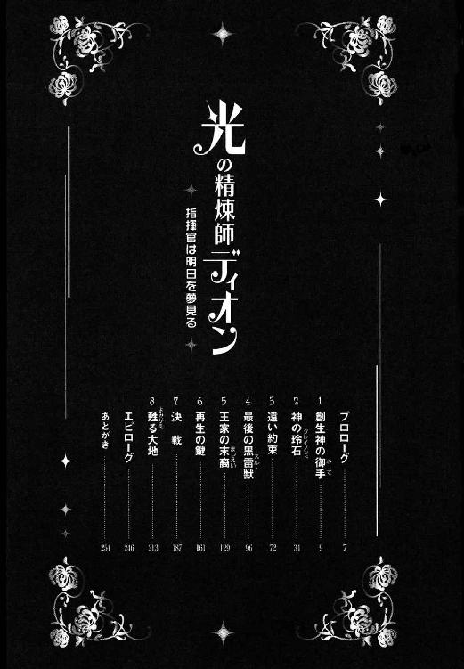
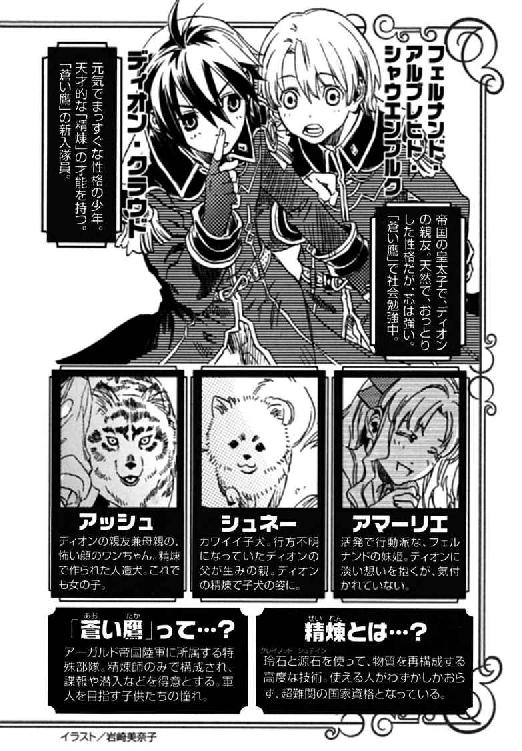
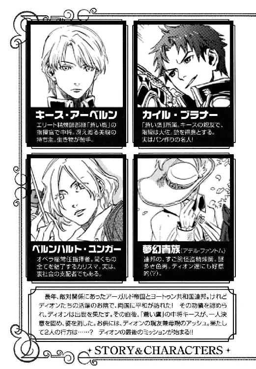
甘く切ない、緩やかな調べ──。
彼女はその小夜曲が好きだと言った。だから、オルゴールを贈ろうと思った。
水晶を薄く削って作った鈴のような音色に、想いを乗せた。
父を病で亡くし、母と姉と妹は灼熱の光に焼かれて白い砂になった。
心に穿たれた暗い虚を、彼女が埋めてくれた。
けれど、彼女も死んでしまった。真冬の冷たい石畳の上で、自分が贈ったオルゴールを胸に抱いて──。
幼い頃は、母の代わりに慕っていたのだと思う。十九の誕生日を迎える彼女のためにオルゴールを〈精〉した時、自分はまだ十三だった。深い意味を込めて小夜曲を選んだつもりではなかったが、今思えば、彼女は自分にとって母であり姉であり、同時にそれ以上の存在だったのかもしれない。
彼女の死を聞いた直後のことはよく憶えていない。鳴らないオルゴールを持って、真っ暗な闇の中に独りでいたような気がする。
彼女の姿がおぼろに浮かんでは消え、必死で彼女を追いかけた。
逝かないでくれ──。
けれど、どんなに走ってもいくら手を伸ばしても彼女には届かず、辺りは闇に閉ざされていた。錯乱していたのだろう。目覚めたまま夢を見ているのだという自覚すらなかった。
そんな時、自分を呼ぶ彼の声が聞こえた。
──俺がいる。だから安心しろ。
彼は、感情表現の苦手な自分を理解してくれる数少ない人物の一人だった。十歳で知り合ってから、ほとんどの時間を彼と共に過ごした。自分の生い立ちも、儚い望みも、弱さも、彼だけには打ち明けていた。
彼自身も家族を亡くして、心にひどい傷を負っていたにもかかわらず、彼は壊れた自分を闇の中からすくい上げてくれた。
──俺がずっと側にいる。暴走したら俺が止めてやる。
そう言って、自分を捕まえてくれた手は温かかった。
自分は支えられるばかりで、彼の支えになったことはない。せめて枷にはなりたくなかった。
だから今、彼の手を離そうと思う。
後悔はしない。
これは自分一人の戦いなのだから──。
かつてユグドラ大陸の北部には、ムスベルという王国があった。
大地には、太古の氷河が堰き止められて幾つもの深い湖を成し、針葉樹と広葉樹の交じった豊かな森が広がっていた。
ムスベルの民は、国の南にそびえるニヴル山脈から採れる美しい石が、様々な不思議を生じさせることを知り、玲石と名付け、神からの贈り物として神殿に祀った。やがて文明の発達とともに、神官たちは玲石の引き起こす反応を用いて、源石から様々な物を造り出す〈精〉という技術を発達させていった。
一方、大陸の南ではニヴル山脈を隔てて東側に、小国家群が共和制を取るアーガルド帝国があった。山脈の西側は、砂漠の遊牧民が国を興してはまた衰退していったが、ヨートゥン共和国連邦として土台を固めるに至った。
時は移り、〈精〉技術はニヴル山脈を越えて大陸全土に広がっていった。
大陸を三分する強国は山脈に眠る玲石と源石を巡り、度々激しい争いを起こすようになった。
ムスベルは、人のように考え、喋り、動く兵器──黒雷獣を〈精〉した。巨大な獅子の体に鋼の鱗を纏い、人に似た顔をしていた。黒雷獣は、自らの体を原料として、その口から〈死の光と熱〉を吐いた。〈死の光と熱〉に焼かれたものは、生きているものも、そうでないものも、全て白い砂礫に変じた。
黒雷獣の軍団に攻め入られた帝国と連邦は国土の四分の一を失い、大陸の覇権はムスベルが握ったかに思われた。
しかし、凱旋した黒雷獣たちは突如制御不能に陥った。自国の領土に〈死の光と熱〉を吐き散らし、王も民も、鳥も獣も、城も樹木も、何もかもを焼き尽くした。森は炎に包まれ、山が崩れた。湖は干上がり、大地が燃えた。炎の後には白い砂礫だけが残った。
やがて黒雷獣は我が身を〈精〉し尽くして滅ぶ。
しかし、ムスベルの災厄はそれだけでは終わらなかった。
〈死の光と熱〉に焼かれた大地に白い毒の灰が降り注いだ。灰は雨とともに地面に吸い込まれ、砂礫は草木も生えず、小さな虫すらも棲めない毒を含んだ。
美しい森と湖の領土を、全て白い砂礫の荒野に変貌させ、ムスベルは滅亡した。
アーガルド帝国歴一八三四年、今から二十六年前のことである。
生きる物を拒むはずの荒れ地に、トランクを提げた一人の青年と一頭の黒い大型犬の姿があった。白い砂礫に浅い足跡を残し、彼らは傾きかけた太陽に向かって歩いていた。
『もう秋も半ばだというのに、暑いですね』
犬の口から、獰猛な相貌に似合わない優しげな女声が発せられた。
『帝国よりずっと北なのに、何だかいつまでも夏みたい』
犬は、数メートル前を歩く青年の背中越しに、雲一つない空を仰ぎ、眩しげに目を細める。
『土地が平らだから、気流とかの関係で雨も降らないし、季節の変化も乏しいのかしら』
青年の答えを期待してはいなかったので、犬は半ば独り言のように呟く。青年は常から言葉数が少なかったが、自分に対しては特にそれが顕著であることは随分と前から気付いていた。そうは言ってもこの気まずい雰囲気を何とか解消したいという思いで、犬は更に言葉を継ぐ。
『でも、もともとは雪国だっていうから、冬になればどっと雪が降るのかしらね』
「アッシュ......」
青年は振り返らなかったが、それでも久しぶりにかけられた声に、犬は黒い瞳を輝かせた。
『はい、何でしょう。中将』
「すまないが、あと二メートルばかり離れて歩いてくれ」
『ああ──、申し訳ありません』
アッシュはしばし足を止め、先刻までの一メートル弱と合わせてきっちり三メートルの距離をおいて再び歩き始めた。半径三メートル以内には近付かないというのが、この旅を始めた時の約束だったのだが、何とか場を保たせようと考えているうちに、うっかり近付きすぎたのだ。
『中将は、犬の毛のアレルギーか何かですか？』
「そんなものだ」
『私は〈精〉で造られた犬ですから、原料は源石ですし、毛も抜けないからアレルギーは起きないと思いますけど』
「気分の問題だろう」
相変わらず抑揚に乏しい声音は、この件に関して会話を発展させてはならないと暗に言っているようだった。
『えーと......』
次は何の話をしようかと、アッシュは考えを巡らせるが、適当な話題が見つからない。視線の先には、乾いた風にサラサラとなびく青年の真珠色に輝く髪があった。アッシュはもう何時間も彼のその後頭部と背に負われたザックしか見ていない。顔でも見れば少しは気分が変わるかもと、アッシュは約束通り半径三メートルの円弧を描いて青年の前に出る。
『朝から歩きづめで、中将、お疲れになりません？』
笑顔を作って斜め後ろを振り返り、青年の顔を見上げる。
白皙の美貌はあくまでも冷徹で、引き締まった薄い唇には何の表情もない。しかし、凍った海を思わせる銀がかった薄青の瞳がアッシュを捉えたのは一瞬で、その後は微妙に焦点がずれた。
『目が虚ろですよ。やっぱりお疲れなのではありませんか？』
「いや、大丈夫だ」
実は青年が、恐ろしさのあまりアッシュを注視できないということを彼女は知らない。
眉目秀麗且つ頭脳明晰で知られる帝国陸軍中将キース・アーベルンは、超がつく生き物恐怖症だったのである。
『明日の昼前には最初の目的地に着きますかしら？ やっぱり馬を使うべきだったんじゃありません？』
三メートル横を歩きながら、アッシュは果てしなく続く白い荒れ地を見渡す。この広大な荒野に点在する目的地を、歩いて訪ねるのはあまりにも大変である。造られた犬である自分はともかくも、キースは普通の人間なのだ。
「馬は──、世話がかかる」
キースは遥かな地平から目を離さなかった。ひっそりと彼は奥歯を嚙む。
生き物に触るどころか側にも寄れない自分が、どうして馬に乗れようか。我慢すれば馬車ぐらいは操れるが、長旅の供をさせるなら、水をやったり飼い葉をやったり──。
自分が馬に飼い葉を食べさせる光景をうっかり想像してしまい、キースは全身を震わせた。
『中将？ お寒いのですか？』
「少し背筋が──」
『いけませんわ。お風邪を召されたのかも。少し休まれてはいかがです？』
「風邪ではない、大丈夫だ」
キースは断言し、馬の幻影を振り払うように歩みを速めた。
結局、すっかり日が暮れて空に星が瞬き始めるまで、キースは休むことなく歩き続けた。低い丘のふもとを野宿の場所と定め、ようやくザックを下ろす。
『獣や害虫に襲われる心配がないから、山歩きよりは楽かもしれませんけど、あまりにも強行軍じゃありません？』
アッシュは強靭な前足でババババッと丘の斜面を掘った。人が一人横になれる程度の穴を作ると、キースが〈精〉で脆い砂礫の壁面を軽く固める。
「追っ手が来る前に、せめて部品だけでも揃えておかなくてはならないからな」
彼は手袋の玲石を貼り替え、虚空にかざして空気中の水分を集める。見る間に水蒸気が手の平の間で凝結し、彼はカップに水滴を落とす。優秀な〈精師〉は源石を使わずとも、自然界の物質を、〈精〉することができるのだった。
『追っ手......そうですね。きっとディオンは追って来ますわ』
アッシュは睫毛を伏せて微笑んだ。
「後悔しているのか？ 私と来てしまったことを──」
キースはカップの水を皿に移し、もう一つの皿に干し肉を入れてアッシュの前に差し出した。キースにしてみれば、最大限の努力を払ってアッシュの近くに置いたつもりなのだが、アッシュの口に届かない。アッシュが二、三歩前に進み出ると、その分キースは後退った。
『いいえ、後悔はしておりません。ですが......』
〈精〉で造られた水は、混じりけのない蒸留水のはずだったが、なぜか苦く感じられた。
『私はディオンの母代わりに造られましたから......。あの子は三歳で母親を亡くし、五歳で父が出征したきり行方知れずになるという経験をしましたでしょ。だから私はどこへ行くにも、必ず行き先を告げるようにしていたんです。突然いなくなって、不安な思いをさせないように』
「今回は黙って出て来てしまったからな」
キースはカップの水を〈精〉で温め、コーヒーを淹れる。匂いのなかった砂礫の荒野に芳しい香りが漂った。
『それは？』
キースはコーヒーカップを片手に、空いた方の手で小さな箱を弄んでいた。先刻、皿やカップなど細々とした物と一緒にザックから出した物である。
「オルゴールだ。もう壊れてしまったが......」
〈精〉で造られたと思われるその箱は、蓋や側面に花や木などの可愛らしい絵が描かれていたが、所々に焦げたような黒い跡があった。キースはカップを置き、オルゴールの蓋を開ける。しかし、音は鳴らない。中には小さな小さな女の子の人形が丸い台に座っていた。人形はややうつむき花束を持っている。おそらく音楽とともにその人形が回る仕組みだったのだろう。
『まあ、可愛い』
うっかり覗き込んでしまい、キースはザッと身を反らした。
アッシュは『すみません』と下がり、
『中将には似合わ──、いえその......旅のお供には珍しい物をお持ちになりましたのね』
干し肉を両前足で支えてハグハグと齧った。
「私が初めて〈精〉で造った物なのだ。つい持ってきてしまった」
珍しく彼は微笑する。しかしその笑みはひどく淋しげだった。
『思い出深い品なのですね』
彼は応えず、しばらくオルゴールを眺めている。いつもは冷徹な彼の瞳の奥に切ないものを感じて、アッシュはそれ以上オルゴールについて問えなくなってしまった。
『今頃〈蒼い鷹〉は大騒ぎしているでしょうね。大佐に何も告げずに出ていらしたのでしょう？』
「だろうな。だが、言えばカイルは付いてくる。あいつを共犯にするわけにはいかない」
キースはオルゴールをザックにしまい、コーヒーカップに唇をつけた。
『けれど、いずれはお父上──アーベルン元帥が大佐に私たちの捜索を命じますわよ』
「わかっている。だからその前に──」
キースの薄氷の瞳が、浅い穴の奥へ置いた金属製の大型トランクに向く。
『急がなければなりませんわね』
アッシュもそのトランクに目を移し、うなずいた。無二の親友である大佐にも、恩義ある育ての親の陸軍総司令官にも打ち明けなかった計画を、中将は自分だけには打ち明けてくれた。何としてもこの計画は成功させなければならない。たとえディオンを悲しませることになったとしても──。
夜が更け、キースは寝袋にくるまってアッシュが掘った穴に横たわった。昼間は日差しが熱く照りつけていたが、日没と同時に急激に気温が下がり、ひどく冷え込んできた。
（中将、寒くないかしら）
寒気を感じると言って震えていたことを思い出し、アッシュはキースの顔を覗き込む。彼の顔は砂礫と同じほどに白かった。
（三メートル以内には近寄るなって言われてるけど、アレルギーより風邪の方が心配だわ）
アッシュはキースに寄り添って寝ることにした。顔が間近になると気配で目を覚ましてしまうかもしれないと考え、念のため頭を彼の足元の方に置いて寝そべった。
明け方近く、キースはふと目を覚ました。何かがファサファサと顔を撫でたのだ。それは柔らかく温かく、冷え切った頰には心地よい感触だった。しかし、砂礫の荒野の中、寝袋で眠っている自分にそんな感触を与える物に心当たりはない。辺りはまだ暗く、ファサファサの正体を見極めることは難しかった。彼は寝袋から手を出し、ファサファサを手で探った。それは柔らかい毛で編んだ三つ編みだった。編み残りの毛の先が顔に触れたらしい。
思い当たる物は一つしかなかった。そう言えば体の右半分がホカホカと温かかった。そうと気付いた時には、体中の筋肉が硬直し、身動き一つできなくなっていた。
（......助けてくれ......誰か......）
声にならない叫びを上げながら、キースはアッシュが目覚めるまで、彼女の三つ編み尻尾に顔を撫でられるという責め苦を味わったのである。
同時刻、砂礫の荒野を馬で疾走する一人の男の影があった。男の目指す方向には、斜めに傾いだ太い石の柱が林立している。石柱の表面は溶け崩れ、そこに刻まれていたはずの精緻な文様は、僅かにその痕跡を留めるにすぎない。
男は廃墟の手前で馬を下りた。柱と柱の間には、崩れかかった白い石壁が半ば白砂に埋もれていた。影は石壁の隙間から身を滑らせる。細い通路をしばらく下ると、いきなり視界が開け、人の声のざわめきが耳に飛び込む。
壮麗な白い空間だった。
正面には幅十数メートルに及ぶ長い石階段が設けられ、その頂には、四方を柱に囲まれた祭壇がある。左右は白い石壁で、等間隔に立つ柱が白い床と天井を結んでいた。どの柱にも幾何学模様の装飾が施され、四隅で焚かれている篝火の明かりが、柱に刻まれた文様の影を作っていた。
かつてこの場所には、人間を創り、人間に玲石をもたらした創世神の神殿があった。
二十六年前に〈死の光と熱〉に焼かれ、神殿の外壁及び周囲の礼拝所は、柱を除いて跡形もなくなってしまったが、主神を祀るこの本殿だけは、当時の神官たちが強固な障壁を〈精〉して守り通したのだ。
本殿には、刺繡入りの長い貫頭衣や灰色の詰め襟を身に纏った男たちが、手に酒のグラスを持ち、低い声で囁き合っていた。その数は数百名にも及ぶだろうか。刺繡入り貫頭衣はムスベルの民族衣装、灰色の詰め襟は旧ムスベル軍の軍服である。
先刻の男は、ムスベル人の間をかき分けるようにして奥へと進む。
祭壇へ続く階段の手前に、三脚の革張りの椅子が据えられ、三名の灰色の軍服姿がそれぞれの姿勢で腰掛けていた。
中央の椅子の前で、男は膝をつく。
「ルイ・ティエール将軍閣下に申し上げます。帝国陸軍中将キース・アーベルンのムスベル領入りを確認いたしました。黒い大型犬を連れております。おそらくモーリス・タウンゼントの作製したアッシュであると思われます」
周囲のムスベル人からどよめきが起こる。
「御苦労であった」
中央の軍服が応じた。
「キースが螺旋の玲石を手に入れたと聞いた時、もしやとは思いましたが──」
「じっとしてはおれなかったのだろう。あれの父親はそういう男だったぞ」
ティエールの左右に座していた男たちは含み笑いを漏らす。
「これも卿のおかげだ、アラン・ジイド少将。卿の情報収集力には感服する」
ティエールの薄い緑色の目が左の男に向く。
「恐悦至極に存じます」
ジイドは笑みを崩さずに目礼した。
「同志諸君」
ティエールは立ち上がり、ムスベル人たちは雑談を止めて彼に注目する。
「創世神は我々に最後の機会を与え給うた。我々はムスベルの再興を願い、この二十六年間密かに戦い続けてきた。大陸中に密偵を放ち、地下研究所では兵器の開発を続けた。だが、研究所は帝国に潰され、同志ブノワ・ルーエルグは帝国に囚われの身となった。また、手に入れた〈光〉の玲石も、それを操る〈精師〉の少年も帝国に奪われてしまった」
静まり返った神殿に、ティエールの声だけが響く。
「しかし神は我々を見捨てたわけではなかったのだ。連邦の革命により、囚われの身となっていた同志が、この創世神親衛隊本部にぞくぞくと集結している。そしてキース・アーベルンは螺旋の玲石を携え、ムスベルに足を踏み入れた。これこそ我が創世神の加護である」
ティエールは、配下のムスベル人を睥睨する。
「機は熟した。今こそ、祖国ムスベルを甦らせるのだ」
猛々しい声がこだまし、ムスベル人たちの鬨の声が、広い石造りの神殿に鳴り響いた。

帝国陸軍特殊部隊〈蒼い鷹〉の隊員は宿舎一階の広間に会していた。
「まったく、どこへ行っちまったんだ」
隊員たちを前にカイル・ブラナー大佐は、動物園の熊のごとくうろうろと歩き回る。
「アッシュが俺に黙ってどこかへ行くなんて、初めてだ......」
不安な時の癖で、ディオンは鎖を通して首から下げてある指輪をまさぐる。指輪は母の形見で、ディオンの瞳と同じ紫色の宝石がはめ込まれている。その癖が出るのは久しぶりだった。
キースとアッシュが突然行方不明になってから、何の連絡もないまま丸一日が過ぎた。
アッシュと同じく〈精〉で造られた犬シュネーが匂いを辿り、キースはアッシュと共に一旦陸軍本部へ向かったことと、その後、軍の公用馬車を使って帝都の中心部へ向かったことまでは突き止めたのだが、そこから先は匂いが雑踏に紛れてわからなくなってしまった。
カイルは事件や極秘任務の可能性を考えて、キースの養父である陸軍総司令官エイモス・アーベルン元帥に問い合わせたのだが、彼にも心当たりがないとのことだった。
「連邦の革命に関する事後処理も一段落しましたし、アッシュをお供に海辺か高原のリゾートで疲れを癒しているとか？」
たおやかな美貌の中尉、ユアン・レトは優雅に首を傾け、
「特別に親しい女性がいて、そちらにお泊まりになっているのかしら？」
〈蒼い鷹〉唯一の女性隊員ジェイダ・ファーロング大尉はちょっと怒っている風だった。
「いや、キースはどこへ行くにしたって、絶ぇぇぇっ対にアッシュは連れてかねえ」
カイルはきっぱりと言い放つ。
「何でそこまで言い切るんですか？ ディオンなら連れてくよね」
フェルナンドは春風の笑みを浮かべる。
「いや、その、つまりだな」
キースが超生き物恐怖症であることは、カイルだけが知る秘密なのである。
「とにかく、緊急事態に備えて、俺ら軍人はどこへ行くにも必ず居場所を明らかにしておく義務がある。あいつはそういう類の規律違反はしねえんだ。それにあいつに女の影があったら、俺が絶対に気付く」
士官学校で出会って以来、公私の区別なくキースと行動を共にしてきたカイルは断言した。
「ですよねー。大佐はともかく中将が軍規を破るとは思えません」
フェルナンドはこくこくと首を縦に振った。皇太子の天然の突っ込みをカイルは受け流し、
「もっかい部屋を見てみるか。シュネー、来てくれ」
と、白い毛糸玉のような小型犬に声をかけ、宿舎内のキースの執務室へ向かった。
「別にいつもと変わらないよね」
シュネーにくっついてディオンとフェルナンドも執務室に入ったが、室内は平素と同じく、主の性格を反映して完璧に整理整頓されていた。緊急な案件は全て決裁してあったし、山ほどの恋文が未開封のまま輪ゴムで留められていたが、それもいつものことだった。
『隊員以外の匂いはしないよ。アッシュは、昨日はこの部屋に入ってないね』
シュネーはあちこち匂いを嗅いだが、特に不審な匂いはないと言う。
続いて二階の寝室にも行ったが、そこも塵一つなく、きちんとベッドメイクされていた。
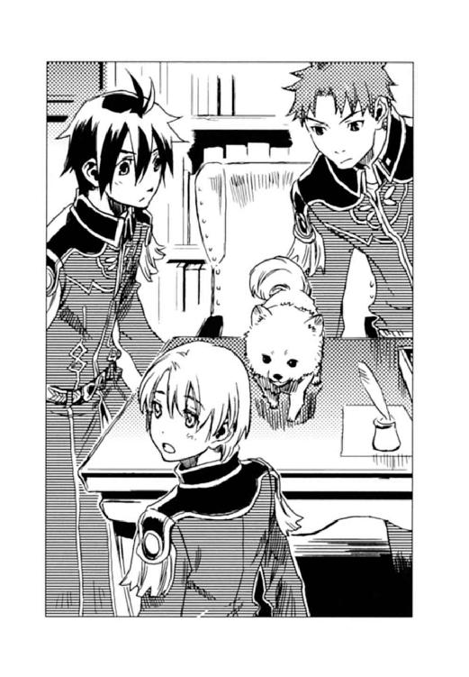
「いっつも片付いてるから、計画的に行方をくらましたのか、取る物も取りあえず〈蒼い鷹〉を飛び出したのか、わかんないね」
デスクの引き出しを一通り探り、ディオンはカイルを振り返った。彼はクローゼットの引き出しを開けて、何かを捜しているようだった。心なしか表情が険しい。
「大佐？」
声をかけたが、カイルは気付かない。
「大佐、何か見つかった？」
もう一度声をかけ、クローゼットに近寄ると、ようやく彼は顔を上げた。その顔はなぜか蒼白だった。
「どうしたの？」
「いや、何でもねえ。ここも特に変わったことはねえな」
カイルは引き出しを閉め、バリバリと頭を搔くと、
「ま、どこへ行ったにしろ、アッシュが一緒なら心配ねえ。そのうち帰ってくるだろ」
と、いつもの剛胆な笑顔を見せた。
カイルは一階の広間へ戻り、待っていた他の隊員たちに、キースの部屋に異状がなかったことを告げ、
「俺は念のため陸軍本部の方のあいつの仕事部屋を見てくっから、お前たちは通常任務に戻れ」
と、隊員たちを解散させる。キースは〈蒼い鷹〉の指揮官だが、同時に陸軍第十三師団長でもあり、陸軍本部にも執務室を持っているのだ。
カイルが宿舎を出て行くと、フェルナンドがディオンにコソコソ話しかけてきた。
「何か、報告書作成なんかやりたくないよね。どうする、射撃訓練にでも行く？」
「いや、ここで大佐を待ってる。様子を聞いたら、またアッシュと中将を捜しに行こうと思う」
『それがいいかも。大佐は何か心当たりがありそうだよ。さっき中将のお部屋でクローゼットの引き出しを見た時、変わったことはないって口じゃ言ってたけど、凄く焦った感じの匂いがしたもの』
シュネーがディオンの肩にピョンと跳び乗った。
「焦ってた？」
ディオンはフェルナンドと顔を見合わせる。
（アッシュは無事なんだろうか......）
ディオンはカイルの消えた玄関に視線を送り、無意識に胸元の指輪をまさぐった。
「おや、大佐。お久しぶりです」
陸軍本部の第十三師団長付きの秘書官は、にこやかにカイルを迎えた。
「こんちはー。な、キースの部屋、開けてくんない？」
「いいですけど、午前中にも元帥がお出でになりましたが、何かあったんですか？」
秘書官はデスクから鍵束を取り出し、秘書室奥の執務室の扉を開ける。
「いや、ちょっと足りない書類があるんで、キースの代わりに取りに来ただけ」
詳細が明らかになるまでは、陸軍中将の行方不明など公にはできないので、カイルは適当にごまかした。
「んじゃ、ちょっと家捜しするけど、気にしないで仕事しててくれ」
秘書官を秘書室に戻し、カイルはザッと執務室を見回した。この部屋も宿舎の部屋と同様、いつも通り掃除と整理整頓が行き届いている。
「完璧主義もここまで来ると病気だよな。こんなきちっとしとくか？ 普通」
見慣れてはいるが、こうやって改めて見直すと、キースの性格はどこか破綻しているのではないかと思ってしまう。
〈蒼い鷹〉宿舎の執務室と同じく、デスクの上には書類が丁寧にファイリングされ、いつ誰がこの仕事を引き継いでもわかるようになっていた。
──いつ戦死してもいいように。
以前、カイルがキースに「どうしてそんな整理にこだわるんだ？」と尋ねた時、彼はそう答えた。それも理由の一つだろう。しかし──。
（いつも片付いてりゃ、帰りたくても帰れないのか、家出なんだかわからねえもんな）
今思えば、いつ自分がいなくなってもいいように、そしてそのことを誰にも気付かれないように、ずっと以前から準備していたのかもしれない。現に自分も、キースは事件か事故に巻き込まれたのだろうと思ったぐらいだ。宿舎のクローゼットの引き出しを探った時に、いつもそこに入っているはずの物がなくなっていることに気が付くまでは。
それは、壊れた小さなオルゴール──。キースの亡き姉エリーゼが、連邦の無差別攻撃に遭って死んだ時に抱きしめていた物だ。
養父エイモスの妻は、キースがアーベルン家に引き取られる前に亡くなっていた。エイモスの実の娘エリーゼは、キースよりも六歳年上で、幼いキースにとっては母同然の存在だった。成長とともに、キースのエリーゼへの思慕も変化していった。彼がエリーゼを母や姉以上に思っていたことを、カイルは知っている。それを打ち明ける前に、彼女は死んでしまったが......。
（もしかして、姉貴の形見を持ってったってことは、戻らねえつもりなのか......？）
それを確かめるためにカイルはこの部屋に来たのだ。
彼は引き出しや書棚を探り、私物を入れておく飾り棚の小引き出しに、それを見つけた。
辞表──。白い封筒の表には、流麗な筆致でそう書かれていた。
（やっぱり......）
普段は目に付かないが、本格的に捜せば発見できるような微妙な場所である。適当な時間が稼げて、且つ軍への迷惑が最小限で済むように計算してそれを置いたのだろう。
中には、陸軍の正式な書式に則った除隊申請書と、後任人事の意見書が入っていた。
意見書には、第十三師団長の候補の名が数名挙げられ、第七部隊すなわち〈蒼い鷹〉の指揮官にはカイル・ブラナー大佐を推薦すると書かれていた。
辞表と別の封筒には、アーベルン家の相続権を一切放棄する旨の趣意書が入っていた。つまり、アーベルン家とも縁を切ると言っているのだ。
（あの野郎──）
オルゴールがなくなっていると気付いた時、予感はあった。
キースが〈蒼い鷹〉を捨て、アーベルン家を出る理由は、たった一つしか思い当たらない。
封筒には、それ以外の文書は同封されていなかった。育ての親エイモスに対する感謝や謝罪もない。自分に宛てた私信もなかった。なぜ除隊するのか、何のためにどこへ行くのか悟られないためだろう。それがかえって、キースの目的を如実に表していた。
（それにしたって、いつどこできっかけをつかんだんだ？）
キースには心に秘めた一つの願いがあることをカイルは知っていた。しかし、それは絶対に達成不可能なはずだった。なぜならその願いを叶えるには、特殊な玲石が必要で、それは帝国には存在しなかったからだ。
（とっくに諦めたと思ってたが......連邦の革命の時か？）
何があっても無表情を貫き通すキースからそれを推し量ることは難しい。だが、他にこの突然の出奔の理由が見つからない。事務的に淡々と綴られた申し送り事項を繰り返し読んでいるうちに、カイルの腹の中に沸々と怒りが沸き立ってきた。
（俺を〈蒼い鷹〉指揮官にだと？ 冗談じゃねえ）
キースの真意はわかる。自分に跡を追わせないためだ。
（俺に一言も言わねえで除隊？ 何で手を貸せとか言わねえんだ。たった独りで、帝国を敵に回すつもりかよ。阿呆が！）
自分を巻き込みたくないのだ。わかってはいるが、放ってはおけない。
（俺を〈蒼い鷹〉の指揮官に据えておけば、俺が追っかけないとでも思ったんだろうがよ。生憎と、俺はそんな利口にはできてねえんだ）
カイルは辞表を軍服の内ポケットに入れた。
執務室を出ると、秘書官が「捜し物は見つかりましたか」と声をかけてきたが、「ああ、あった。世話になったな」とカイルは片手を挙げて応じ、足早に資料室へ向かう。
「二十六年前の資料を見せてくれ。大戦終結直後にデンゼル・クラウド将軍が作ったやつ」
ドアを開けると同時に、カイルはカウンターへ詰め寄った。
資料室の管理官は少し怯えた様子で、「えーと」と目録をめくり、
「極秘扱いの文書も幾つかあるので、正式に閲覧許可をもらっていただかないとお見せできませんよ」
と、首を振った。
「そんな暇ねえんだよ。ものすごーく緊急を要するんだ。もちろん極秘任務さ」
「〈蒼い鷹〉のカイル・ブラナー大佐にそう言われては」
管理官は引きつった笑みを浮かべ、目的の資料が置かれている棚に案内してくれた。
「最近、誰かこの資料を見に来なかったか？」
「いいえ。どなたもお出でにはなりませんでしたよ」
カイルはキースが来たかもしれないと思って尋ねたのだが、キースはたとえ資料を閲覧したとしても、痕跡を残したりはしないのだ。
カイルは、膨大な報告書と添付された地図から必要な部分を手早く書き写し、そそくさと資料室を出る。
（俺までいなくなれば、今度は元帥がキース出奔の理由に気付く。そして〈蒼い鷹〉に捜索を命ずるだろうな）
キースは捜されたくないのだ。だから、何も手がかりを残さないで、黙って出て行った。自分がやっていることは、キースの本意ではないし、賢い方法でもないのは重々承知している。
（命令違反か──俺もディオンのことは言えねえな）
カイルは苦い笑みを浮かべ、本部庁舎裏の厩舎へ向かった。
「長期休暇──？」
〈蒼い鷹〉宿舎で、カイルの帰りを待っていたディオンとフェルナンドは、馬を引いて戻ってきた彼の言葉に目を瞬いた。
「おうよ。本部でよく調べたら、キースは休暇を取ったらしい。抜け駆けなんて許せねえから、俺も追っかけてってお楽しみの場に乱入してやろうって魂胆。じゃ、お前らもこの隙にゆっくり羽を伸ばせや、じゃな」
旅支度をしたカイルは、さっさと鞍に跨る。
「ちょ、ちょっと待って、アッシュは──？」
ディオンは二、三歩追いかけたが、カイルを乗せた馬はパカパカと駆けて行ってしまった。
「お楽しみの場って......中将とアッシュが一緒に何のお楽しみ？」
ディオンたちは啞然とカイルの後ろ姿を見送った。
キースとアッシュがただの道行きではないと判明したのは、それから数日後のことだった。
「王宮より入電！ ユーミールの心臓が紛失。至急捜索を依頼する、以上！」
「何だと!?」
陸軍本部総司令室でそれを聞いたエイモス・アーベルンは、ガタガタッと椅子を蹴倒して立ち上がった。
二十六年前、ムスベルを滅亡させた黒雷獣は、自らの体を〈精〉し尽くして溶解してしまったが、ユーミールと名付けられた一体だけが生き残った。ユーミールは分解され、旧ムスベル領の砂礫の各所に分散して埋められたが、額にはめ込まれていた血の玲石と〈死の光と熱〉の〈精炉〉は陸軍本部で保管し、心臓は王宮の宝物庫に納められていた。
「今頃になってどういうことだ？ 連邦は新政府が樹立し、帝国と停戦したというのに──。〈蒼い鷹〉へ打電だ。キースを呼べ！」
黒雷獣関係の任務は極秘扱いとされるので、捜索には〈蒼い鷹〉を当たらせることになっている。しかし〈蒼い鷹〉からの返事によると、キースは休暇を取っているとのことだった。
「そう言えば、先日、キースの姿が見えないと問い合わせがあったな」
その後〈蒼い鷹〉から何も言って来なかったので、戻っているとばかり思っていたのだ。
「カイル・ブラナー大佐は？」
キースが休暇を取ったのであれば、次席のカイルに代理を務めさせるしかない。
「それが、大佐も長期休暇を取ったとのことです......」
「この非常事態に、二人で何をやっとるんだ！」
エイモスは眉間に皺を寄せ、ふと不審に思う。
今までキースはほとんど休暇を取ったことがない。戦時下ではないにしろ、特殊部隊〈蒼い鷹〉には緊急を要する任務が突然飛び込む。ましてあの完璧主義の息子は、仕事を放って休暇など取りはしないのだ。
（なぜ、カイルまでもが......？）
外見も言動もいい加減この上ないが、信頼できる男だ。キース不在の時に長期休暇を取るはずはない。
エイモスはふと、忘れかけていた古い記憶を甦らせた。二十六年前、死に瀕したムスベルの神官が言っていた言葉を──。
──その玲石は黒雷獣を造ることも滅ぼすこともできます。
「まさか──」
エイモスは、総司令室奥の小部屋に飛び込んだ。部屋の中央には、巨大な鋼の金庫が据えられていた。軍の機密文書や品物を保管するための金庫である。彼は内ポケットから鍵束を取り出し、金庫の鍵穴に差し込んだ。そして大きな円環状の取っ手を回す。ギーッと金属の軋む音を立てて、厚い扉が開いた。
エイモスの目が愕然と見開かれた。
そこに入れておいたはずのユーミールの血の玲石と、〈死の光と熱〉の〈精炉〉が忽然と消失していた。
（心臓ばかりか、血の玲石と〈精炉〉までも......。帝国にあるユーミールの部品が全部持ち出されてしまったのか──!?）
エイモスの背中に汗が伝う。
「〈蒼い鷹〉指揮官代理としてグスタフ・ゼノン中佐に来るよう打電しろ。ディオン・クラウド中尉とフェルナンド・シャウエンブルク少尉、それから──軍用犬アッシュも連れてくるようにと」
通信係に命ずるエイモスの声は震えていた。
「ユーミールの心臓も、血の玲石も、〈死の光と熱〉の〈精炉〉も──」
エイモスから状況を聞いたフェルナンドは蒼白になった。
「何で......中将も大佐もいない時に、こんなことが......」
ディオンも手を握りしめる。その手の平にはユーミールを復活させることができる〈光〉の玲石が埋まっていた。
陸軍本部総司令室は人払いがされ、デスクに着いているエイモスを前に、ゼノン、ディオン、フェルナンド、そして王宮からの伝令として近衛隊のヘルマン・レイゼン少佐が立っていた。王宮の宝物庫からユーミールの心臓が紛失していることに気付いたのが、フェルナンドの妹である皇女アマーリエだったからである。呼ばれてはいないがシュネーもディオンの足元に座っている。
「軍の金庫の鍵は私が常に身に付けている。予備の鍵は秘書官が持っているが、私の許可なしに開けることはできない」
エイモスは硬い声で言った。
「王宮の宝物庫も鍵は厳重に管理され、常時複数の衛兵が見張りに立っているはずだが？」
エイモスは、ヘルマンに目を移す。
「前回宝物庫が開けられてから、今回アマーリエ様が宝物庫を開けるまで、何も異状はなかったとのことです」
アマーリエの守り役である近衛隊少佐はうなずいた。
国家機密であるユーミールの心臓は宝石箱を模した箱に収められ、その中身を知っている者は限られている。アマーリエにはユーミールの心臓のことは知らされていなかったが、綺麗な物や可愛い物に目がない彼女は、度々宝物庫に入り、保管されている品を全部記憶していたのだ。そして、今回宝物庫を開けた時に「謎の宝石箱がないわ！」と父皇帝に知らせたということだった。
「ここの金庫にしても、そんな警戒厳重なところにどうやって忍び込んだんだろう。催眠剤や幻覚剤を〈精〉したのかな？ 薬を嗅がされたことすら気付かせないなんて、相当な腕の持ち主だ──」
ディオンが呟くと、
「盗んだところで、あの宝石箱は開かないよ。あの箱は〈精〉で造られていて、絶対に壊れないし、開け方は僕と父上しか知らないもの。箱を造った〈精師〉と中将は別としても」
フェルナンドは言った。
「中将が？」
ディオンは聞き返す。
「前の箱はムスベルの秘密組織に奪われちゃったでしょ？ ユーミールの心臓を新しい箱に収めた時、軍の代表として中将が立ち会ってくれたんだ」
フェルナンドは王宮からユーミールの心臓を持ち出したことがある。それがきっかけで、ディオンはフェルナンドと知り合い、ディオンの手には〈光〉の玲石が埋められたのである。
「元帥、いかがなされました？」
エイモスの顔色がひどく悪いことに気付き、それまで黙って聞いていたゼノンが、訝しげに声をかけた。
「いや──。ヘルマン・レイゼン少佐、御苦労だった。王宮には後ほど伺う。この件は極秘扱いだ。くれぐれも内密に頼むと、陛下にも皇女殿下にも申し上げておいてくれ」
「承知いたしました」
ヘルマンが退出すると、エイモスは足元のシュネーを見下ろす。
「取りあえず、金庫の匂いを──アッシュは？」
「アッシュは休暇中です。中将と一緒に出かけて、まだ帰りません」
ディオンの返答はエイモスをひどく驚かせたようだった。目を見開き唇が微かに震えている。
「元帥──？」
「いや、ではシュネーに頼もう」
エイモスは頭を振り、ディオンたちを金庫室に案内した。
シュネーは金庫の内外を念入りに嗅いだが、
『元帥の匂いしかしない。犯人は匂い消しの〈精〉してったのかも』
と、尻尾を垂れる。
「ディオン、仮に宝石箱が開けられたとして、ユーミール復活の可能性は？」
エイモスの目がディオンに向いた。
「心臓はあちこち穴が開いていて、かなりすり減ってたけど、組織を継ぎ足して細胞を活性化させれば動くし、頭部も玲石を配置し直せば起動すると思います。胴体と四肢の保管状態がわからないから、完全復活するかどうかは何とも言えないけど......」
「ファルネーゼに廃棄した頭部と、ムスベルの砂礫に埋まっている胴体と四肢を早急に確認せねばならんな」
二十六年前、ユーミールの四肢、胴体及び頭部は、旧ムスベル領の砂礫の荒野に分散して埋められたが、今年の夏、連邦の旧敵ベニートによって頭部が掘り出され、新たな黒雷獣として組み立てられた。壮絶な戦いの末、ディオンたちはその黒雷獣を分解し、ユーミールの頭部は連邦ファルネーゼ教会の地下墓地に置いてきたのである。
「それから、出回っている〈光〉の玲石の所在も調べてくれ。連邦から解放されたムスベル人の中に黒雷獣を〈精〉できる者がいるかもしれん」
エイモスは苦渋に満ちた表情で命ずる。
「了解。ですが閣下、中将と大佐が不在の今、十八名の〈蒼い鷹〉をファルネーゼとムスベルに分散させるのは無理です。しかも、単騎で飛ばしてもファルネーゼまでは往復一ヶ月はかかります。犯人に遅れを取らないためには、ファルネーゼへは行かずに、〈蒼い鷹〉全員でムスベルへ向かう方がいいと自分は考えます」
ゼノンは言った。革命が成功して新政府と停戦を結んだため、入国は容易になったが、ファルネーゼはあまりに遠い。
「大丈夫、三日待ってくれれば、ファルネーゼへ行ってユーミールの頭がどうなってるか確認して来るよ」
ディオンは指を三本立てた。
エイモスもゼノンも「三日で？」と、眉をひそめる。
「銀単号を使えばいい」
ディオンが言うと「そっか」とフェルナンドはポンと手を打った。
銀単号とは、〈精師〉養成学校ムセイオンの学園祭で、ディオンたちが士官学部特待生クラスの友人と共に造った単葉機である。
「危険だ。途中で墜落したら......」
空軍の設置を視野に入れているエイモスは、ムセイオンの学生が造った単葉機の情報を耳にしていた。
「平気です。ニヴル山脈を越えさえすれば、ファルネーゼまでは砂漠ばっかりだ。墜落しそうになったら砂漠へ着陸すればいい」
ゼノンは「砂獣の砂漠に墜落なんて、最悪じゃないか」と、眉根を寄せたが、
「では、任せよう。しかし決して無理はするな。お前の祖父、デンゼルに知られたら、私の命が危うくなるのだからな」
ようやくエイモスの表情が和らいだ。
「久しぶり、でもないか」
ムセイオンの附属研究所を訪ねると、赤い髪に碧玉の瞳の少年が、華奢な体に白衣を纏い、相変わらず不遜な笑みを浮かべてディオンとフェルナンドを出迎えた。
「シーグ、お前、白衣似合わないぞ。幼年学校の劇の発表会みたいだ」
ディオンが言うと、
「僕だって嫌だよ。でもしょうがない。これ着てないと学生に間違えられるんだもの」
少年はフンと鼻を鳴らした。ムスベル〈大神官〉の血を引く天才〈精師〉シーグは、この夏、弱冠十五歳にしてムセイオンを卒業し、附属研究所の研究員に招聘されたのだ。
彼とは初任務でムセイオンに編入した時に知り合い、連邦の革命の際にも世話になった。それこそ色々な意味で──。
シーグはディオンたちを研究室に招き入れ、椅子を勧める。
「で、銀単号を借りたいんだって？ 急にどうしたんだ？」
「んー、まあ、ちょっと」
「緊急に遠くへ出動命令が出たんだろう？ 連邦か？ それともムスベル？」
「勘弁してくれ。極秘任務なんだ」
「僕が、情報を漏らしたり、裏切ったりすると思うのか？」
「............」
ディオンは即答できない。可愛い顔してシーグはなかなかの策士だし、結構腹黒いのだ。
「シーグ様、あまりディオンを困らせてはいけませんよ」
長い灰褐色の髪を後ろで一つに束ねた青年が、トレイにコーヒーを載せて入室してきた。
「ハーラルは白衣が様になってるよね。若き〈精〉博士って感じ」
フェルナンドはニッコリと春風の笑みを青年に向けた。
シーグの側仕えであるハーラルは、「恐れ入ります」と年齢以上に落ち着いた笑みを浮かべ、テーブルにカップを置く。
「アーベルン元帥から、電信でお二人の訪問の知らせと同時に、ムセイオンで保管している玲石が紛失していないか、問い合わせがありました。調べておいてあなた方に結果を報告するようにと。銀単号もそれと何か関係があるのでしょう？」
銀灰色の瞳はあくまでも穏やかだ。
「まあ、そんなとこ。で、ムセイオンの玲石はちゃんとある？ 何だか以前よりも警戒が甘くなったような気がするんだけど」
ディオンたちが在学していた時は、ムセイオンの出入りはひどく監視が厳しかった。しかし今回は、簡単な身分証明だけで、易々と学内に入ることができたのである。
「連邦と停戦したからね。密偵の潜入に気を遣わなくなったんだ。でも、黒雷獣の〈精〉に必要な玲石は今のところ無事だから安心して」
シーグは悪戯っぽい笑みをディオンに向ける。
「参るなー」
ディオンとフェルナンドは顔を見合わせる。
「かまかけただけだよ。で、まだ、黒雷獣を造ろうなんて企んでるやつがいるの？」
シーグは無邪気に尋ね、ディオンは返答に窮する。ユーミールの部品が盗難に遭ったとは言えない。
「革命で失脚した旧連邦政府の要人が何しでかすかわからないし、ムスベルの秘密組織も油断できないでしょ。警戒態勢は抜かりなくしておかないとね」
フェルナンドは何事もなかったようにニッコリと笑う。
「そういうわけで、急いで飛行機が必要なんだ。銀単号を造り替えるの手伝ってよ。君なら飛行機の〈精〉ぐらい朝飯前だよね。シーグフリード博士」
「まあ、そりゃ、僕の手にかかれば──」
「王宮でも君の名は評判だよ。今、何研究してるの？」
未来の皇帝は巧みに人心を操る。それが天然でできるところがフェルナンドの凄さだ。
飛行機の格納庫へ向かう道すがら、
「今書いている論文のテーマは、神経伝達物質の放出と受容速度の限界。やっぱり知的生物を〈精〉してみたくてね──」
シーグはすっかりフェルナンドに乗せられて、持論を展開させる。ディオンたちはそれを聞き流し、格納庫の扉を開けた。真っ暗だった格納庫に、晩秋の陽光が長く差し込む。
「わ、銀単号、懐かしい」
天翔る銀の流星単葉機一号が、日に照り返って、その名の通り流線型の機体を銀色に輝かせた。
「特待生クラスの生徒が定期的に整備していましたからね。造られた時と同じくらいには飛べるはずですよ」
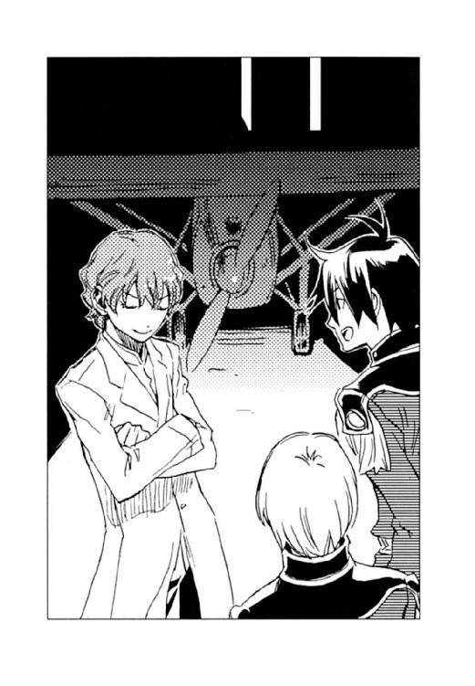
ハーラルがエンジンルームの蓋を開ける。
「神経の反射速度と筋肉の調整を図るには──って、ちゃんと聞いてる？」
シーグは格納庫の入り口でまだ語っていた。
「聞いてるよ。──学園祭の時には、燃料がうまくエンジンに回らなくて墜落したんだ」
「銀単号の一番の問題は、燃料確保でしょ。もう一つ席を造ったらどうかな。ディオンが操縦して僕が手動で燃料を〈精〉するっていうの、どう？」
「それが一番手っ取り早いな」
キースがいれば、「皇太子に前人未到の大陸横断飛行させるなど言語道断」と反対されるところだが、彼はいない。
シーグには勝手に語らせ、ディオンとフェルナンドはハーラルの手を借りて銀単号の改造に取りかかった。操縦席の後ろにもう一つ椅子を入れ、燃料を〈精〉する〈炉〉を取り付けてエンジンと接続する。
「最後の問題は、恒久的に活性化し続ける細胞の〈精〉は〈光〉の玲石以外にはできないってことなんだ」
シーグの論文発表は終盤にさしかかったらしい。
「なぜ生きた細胞は〈光〉の玲石でしか造れないのか。その仕組みが解明されれば、他の玲石でも生き物の〈精〉ができるはずなんだ」
「そうだな。生き物丸ごとでなくていいから、一般的な玲石で生きた細胞が造れれば、怪我の治療とか医療面の〈精〉が飛躍的に進歩するんだろうに」
ディオンは、ちょびっとだけシーグの話に付き合ってやった。
「ヴォルジェ家に代々伝わる〈精〉要訣集には、〈闇〉の玲石による生き物の〈精〉について記されてたんだけど、残念ながら戦争で焼けてしまってね」
ディオンの手から、燃料の〈精炉〉にはめようと思っていた玲石がポロリと落ちた。
「......今、何て言った？」
ディオンはシーグを振り返る。
「僕の家に伝わってた〈精〉要訣集」
「いや、その後」
「〈闇〉の玲石による生き物の〈精〉......ムスベルの伝承では、神は〈闇〉の玲石で人間を創造したことになってるんだ」
（〈闇〉の玲石って、確か、中将の──）
愕然と振り向けば、フェルナンドもまっ青な顔でシーグを見つめていた。
「言い伝えの中には、真実が隠されてる場合があるじゃない？ だから〈闇〉の玲石も研究したかったんだけどね。現存する唯一の〈闇〉の玲石はキース・アーベルン中将の手に埋められてるし」
シーグはやれやれと肩をすくめる。
「シーグ様、大神官を継ぐお方が〈闇〉の玲石を研究対象にしたいなどと仰ってはなりませんよ」
ハーラルは困ったように笑った。
「そうなんだ。〈闇〉の玲石はムスベル王家の秘宝でね、神の玲石だから、安易に言の葉に乗せてもいけないし、ましてや人間が使ってはいけないことになってるんだ。そう言えば、中将はベニートと戦う時に使ったっけ。ムスベルの神官たちが生きていたらきっと怒っただろうね。──どうかした？ 顔色が悪いよ」
「いや、何でも......神が人を創った玲石......そうなんだ」
ディオンの頭の中に、ここ数日の出来事が浮かんでは消えて、グルグルと渦巻いていた。
キースがアッシュを連れて突然いなくなったこと。それを追うようにカイルが休暇を取ったこと。そして、ユーミールの心臓、血の玲石、〈死の光と熱〉の〈精炉〉の盗難──。
（中将は、なぜアッシュを連れて行った!?）
アッシュの存在は極秘だ。なぜなら黒雷獣と同じ構造をしていて、黒雷獣を〈精〉したいと望む〈精師〉に示唆を与えてしまうからだ──。
（宝石箱にユーミールの心臓が入っているのを知っていて、その宝石箱の開け方を知っているのは......。二十四時間態勢で警備が敷かれてる王宮の宝物庫に潜入し、陸軍総司令室の金庫さえも開けてしまうような離れ業ができるのは......）
「まさか、中将が──」
ディオンは頭を振った。
（俺の考えすぎだ。中将が、黒雷獣を復活させるために、アッシュを連れて出奔したなんて、絶対にあり得ない）
ディオンは落としてしまった玲石を拾い、燃料の〈精炉〉にはめ直す。
「いやだなあ、ただの神話だよ。神様は中将に罰を与えたりしないから大丈夫」
シーグは呆れたように笑った。
「わー、浮いてる！ 僕たち空を飛んでるんだ！」
シーグとハーラルに見送られてムセイオンの運動場を離陸し、フェルナンドはぐんぐん遠ざかる地表を見下ろして歓声を上げた。しかし、興奮は長くは続かず、彼はすぐに押し黙った。
「〈闇〉の玲石で生き物が造れるってこと、元帥に報告しなくちゃね......」
帝都の街並みが切れ、小麦畑が広がる農村地帯にさしかかる頃、フェルナンドは口を開いた。
「ああ、......そうだな」
「中将がユーミールの部品を盗んだんじゃないよね。黒雷獣の復活なんて考えてないよね」
フェルナンドの声には悲愴感が漂っていた。
「当たり前だ。中将がそんな馬鹿な真似するわけない。第一黒雷獣を復活させるつもりなら、今まで何度か機会があったんだ。完成間近の黒雷獣をぶっ壊したのは、中将と俺たち〈蒼い鷹〉だ。連邦の革命が成功して大陸が平和になったってのに、何で中将が今更黒雷獣を〈精〉する必要があるんだ!?」
半分は自分に言い聞かせていた。
「俺の手の玲石も俺自身も、ムスベルの秘密組織や連邦に何度も狙われたけど、いつだって中将が守ってくれた。中将が俺たちを──〈蒼い鷹〉を裏切るはずない！」
しかし、口とは裏腹に、心の中では恐ろしい想像が膨らみ、不安が黒い塊となって腹の中に居座っていた。
「何だ、あれは？ 鳥か......？」
連邦議会堂の議場で演説していた夢幻貴族は、ブーンという耳慣れない音を聞いて原稿から目を上げた。
羽根飾りのついた銀のつば広帽子に銀のマント、銀の目だけを覆う仮面という大変個性的な出で立ちではあるが、これでも彼は大陸の西半分を占めるヨートゥン共和国連邦の首相なのである。彼の独特の美学が議員や国民に受容されているのは、彼が連邦の革命を成功させた英雄であり、政治的手腕もあり、政策が人と自然に優しかったからに他ならない。
「鳥にしては飛び方がおかしいな」
夢幻貴族は演説を中断し、青空の彼方を滑空する翼の影を注視する。
満場の議員たちも窓の外に目を向けた。
「全く羽ばたかないな」「何だかこっちに来るような......」
議員たちはざわめき始めた。見ている間にも翼の影は大きくなっていく。
ゴーッ！ とエンジン音を響かせて、見たこともない形の銀色の翼が迫って来た。
「なななな何─────!!」
議員たちは仰け反り、中にはガタガタッと椅子から転げ落ちる者もいた。夢幻貴族の帽子もずり落ちる。
銀の鳥は、議会堂前広場から延びる幅広の道路に降り立ち、腹の下に付いた車輪で石畳を走る。人通りの少ない時間帯ではあったが、それでもわらわらと人が集まって来た。
「噓だろ──？」
夢幻貴族は、ずり落ちた帽子を直すことも忘れ、近付いてくる単葉機を呆然と眺めていた。飛行機は議会堂前で、ピタリと静止する。操縦席から少年が二人、石畳に飛び降りた。濃紺の軍服姿の少年たちはニッと笑い、議会堂の窓に向かって手を振った。
「びっくりしすぎて声も出なかった。いや、飛行機とは──。しかし突然どうしたのだ？ おお、そうか俺に会いたくなったのだね、可愛いお嬢さん」
夢幻貴族は両手を広げ、相変わらず大仰な仕草でディオンとフェルナンドを迎え、
「可愛いお嬢さんじゃないっ！」
フェルナンドもいつもの台詞で応じる。
「教会の地下墓地を見たいんだ。ユーミールの頭とベストラの胴体が置いてあるとこ」
ベストラとはディオンの父モーリスが捕虜時代に〈沈まぬ星〉に造らされた黒雷獣である。
「構わないが、今頃どうした？ 忘れ物でもしたのか」
夢幻貴族は怪訝そうに首を傾げる。彼は催眠剤の〈精〉を得意とする怪盗で、王宮の宝物庫や陸軍本部の金庫室に忍び込めるとしたら彼ぐらいではないかと、ディオンは少し疑っている。しかも、革命以前は正体を隠して平然と連邦軍の中佐を務めていたタヌキだから油断は禁物だ。
夢幻貴族の案内で、ディオンたちはファルネーゼ教会へ向かう。
「新政府はうまくいってる？ まだ始まったばかりで色々大変でしょ？」
未来の皇帝は、隣国の情勢に興味津々な振りをして、それとなく探りを入れる。
「その通り。新政府の首脳陣は政治には素人だから、なかなか意見の調整が難しくてね。何より問題なのは金。蓋を開けてみたら国庫は空っぽ。労働者のために革命を起こしたというのに、国民の生活が変わらないのでは、政府を乗っ取った意味がない」
「まさか、お金になりそうな物を帝国まで盗みに来たりしてないでしょうね？」
フェルナンドは春風の笑みを浮かべて、冗談交じりに問う。
「それができたら何と楽なことか。しかし盗みで得た金を国の歳入金に繰り入れるわけにはいかんだろう。首相が怪盗では国民に示しが付かんし」
夢幻貴族はマントを広げて天を仰いだ。恰好はともかくも、首相の仕事は真面目にやっているらしい。
ファルネーゼ教会は壮麗なその姿を僅かに傾かせていた。モーリス救出の際、ベストラの頭部を自爆させ、その時、床の一部が崩れてしまったのである。
「予算が足りなくて、修復が完了してないのだ。危険だから立ち入り禁止になっている」
教会前に立つ歩哨に声をかけ、夢幻貴族はディオンたちを中に招き入れた。カンテラを灯し、地下墓地へと続く長い階段を下りる。
広大な地下墓地は、ディオンがベストラからユーミールの頭部を分離させた時とそっくりそのままの状態だった。天井には黒々とした大穴が開き、壁は崩れ、床には瓦礫がうずたかく積もっている。
その中央に黒雷獣ユーミールの頭部とベストラの胴体は据えられていた。
「何度見ても、不気味なものだな」
夢幻貴族は珍しく低い声で呟いた。
象の三倍はあろうかと思われるほど巨大な胴体は、黒光りする鋼の鱗で覆われていた。形状は象というよりはむしろ獅子に近く、足の先には巨大なかぎ爪が生えている。隣に据えられた頭は人間に似ていた。尖った耳は顔の横にあり、顎はやや前に突き出ていて、耳まで裂けた唇は嗤っているように見えた。半分閉じられた目に生気はなく、虚ろに宙を眺めている。
「特に問題はなさそうだね。考えてみれば、こんなおっきな物を持ち出せるわけないもの」
フェルナンドはホッと息をついた。
「何？ 誰かがユーミールの頭を盗もうとしているのか？」
バッと夢幻貴族はフェルナンドを振り返り、
「いや、その、定期点検」
フェルナンドは慌てて首を振った。
ディオンはカンテラを提げてユーミールの頭によじ登る。
脳には、生体を維持したり手足を動かしたりするための玲石が何種類も埋められており、ディオンは頭部と胴体を切り離した時、それらの玲石を全て回収した。しかし、一つだけ残した物があったのだ。
ディオンはユーミールの頭頂の鱗を外し、指無し手袋形の〈精炉〉に玲石を貼ると、頭蓋を〈精〉で切開する。そして、腕の付け根まで脳の中に手を突っ込み、念入りに探った。
（ない──！）
捜し方が悪かったかと、切り口を広げて手を入れ直したが、やはり見つからなかった。
（そんな馬鹿な......確かに残しておいたのに......）
体中が火照り、背中に汗が伝わった。
「ディオン、どうしたの？」
フェルナンドが下から声をかける。
ディオンはユーミールの頭から飛び降り、フェルナンドと夢幻貴族を交互に見た。
「真の源石がなくなっている──」
「真の源石？」「何なのだ？ それは」
フェルナンドと夢幻貴族は目を瞬いた。
「記憶を司る源石だ。〈精〉で造られた生き物の場合、見たこと聞いたことは特殊な信号に〈精〉されて、真の源石に刻まれる。まさか、夢幻貴族──」
サッとディオンは背中の猟銃を、フェルナンドは杖を構え、即時に戦闘体勢を整える。
「待て待て。俺ではない。俺がユーミールの記憶を盗んでどうするのだ？」
夢幻貴族はパタパタと顔の前で手を振った。
「決まってる。帝国の好事家に高く売りつけるつもりだったのだろう」
「高く売れる代物なのか？ それは惜しいことを......じゃない。そんな高価な品をどうして置きっぱなしておいたのだ？」
「回収しても玲石と違って再利用できないし、ユーミールの他の部品から遠ざけておいた方がいいと思って、わざと連邦に残しておいたんだ。崩れかけたファルネーゼ教会に、そんな物があるなんて、誰も思わないだろうし」
「ああ、知っていれば──。俺は黒雷獣に関しては疎いからなあ」
しみじみと夢幻貴族は呟いた。
「ごめん。疑って悪かった」
ディオンは銃を下ろした。考えてみれば、よほど生き物の〈精〉を研究した者でなければ、真の源石の存在なんて知らない。
「もしも真の源石が黒雷獣を復活させようとしている者の手に渡ったら......」
フェルナンドが心配げに呟いた。
「ああ。もの凄くやばい」
ディオンは悄然とうなずいた。
「ユーミールの記憶が奪われるとどうなるのだ？」
夢幻貴族は尋ねた。
「アッシュやシュネーもそうだけど、黒雷獣も造られたばかりの時は、人間の赤ん坊と同じで何もわからないんだ。けど、造った黒雷獣の脳に、ユーミールの真の源石を埋め込んで起動させれば、ユーミールという自我を持った兵器が誕生してしまう。ベストラは造られたばかりだったから指示がなくちゃ動けなかったけど、ユーミールは百戦錬磨の兵士だ。戦力としてはベストラの比じゃない」
夢幻貴族は「百戦錬磨の黒雷獣──」と、マントの前をかき合わせて身震いした。
「言ってくれれば、俺がしっかりと見張っていたのに──。こちらでも極秘で捜させよう」
「頼むね......」
ディオンは無理して微笑んだが、真の源石はもう連邦にはないような気がした。
（俺は真の源石のことを誰にも言ってない。知っているのは......俺が分解している時、現場に立ち会った中将だけだ......）
腹に溜まっていたドス黒い不安が、また渦を巻いてドロドロと成長していた。
翌日の午後には、ディオンとフェルナンドを乗せた銀単号は帝国の首都シャマナへの帰還を果たした。
陸軍本部の上空を旋回し、庁舎裏の屋外練兵所に向けて操縦桿を下げる。閲兵式にも使用する練兵所は、単葉機の着陸に対応するだけの十分な広さがあった。
元帥が事前に知らせておいてくれたのだろう、練兵所内には人の姿はなく、代わりにそこを囲む柵には軍服姿が鈴なりになって、初めて目にする有人飛行機を見上げていた。
盛大に砂埃を舞い上げ、銀単号が着陸すると、観衆から「ウォー」と歓声が沸き上がる。その人混みの中から、白い小犬が駆け出て来た。シュネーである。
『お帰りー。これが噂の銀単号!? かっこいー!!』
ディオンとフェルナンドが銀単号から降りると、早速シュネーがディオンの肩に跳び乗った。
「俺たちが留守の間、何か進展したか？」
盛大な拍手の中、ディオンとフェルナンドは本部庁舎に向かう。
『ううん、今のところは何にも。ボク、王宮の宝物庫の匂いを嗅ぎに行ったけど、姫とヘルマン少佐と近衛兵の匂いしかしなかった。〈蒼い鷹〉が〈光〉の玲石の所在と、それを持っている〈精師〉を当たってるとこ』
「中将と大佐とアッシュは？」
『まだ音信不通......』
怪しい〈精師〉がいて、中将と大佐とアッシュはそいつを追って行ったのだと思いたい。
（でも、そうだったら休暇を取る必要なんかないもんな）
本部庁舎の玄関前には下士官たちが一列に並び、ディオンたちに敬礼していた。廊下では将校ばかりか、幕僚クラスの将軍たちまでもが「よくやった。大したものだ」と拍手をしている。
どうやら有人飛行の成功に対する敬意と賞賛らしいが、嬉しい気持ちは沸き上がってこない。
ディオンたちの到着に合わせて招集がかかったのだろう、〈蒼い鷹〉たちが小走りに追いかけてきた。
「おお、帰ってきたか」
隊員たちに頭をぐりぐりと撫でられ、ジェイダにはいきなり抱きしめられた。
「無事でよかったわ。あの銀単号で連邦へ行ったって聞いて、心臓が飛び出しそうだったのよ」
彼女はムセイオンの学園祭に居合わせ、銀単号が湖に墜落した現場を目撃していた。
「フェルナンドも同行したなんて、中将がいたら大目玉だったでしょうね」
ユアンも苦笑する。
「はは......心配かけたね」
ディオンもフェルナンドも力のない笑顔で仲間の出迎えに応じた。
「ディオン・クラウド中尉、フェルナンド・シャウエンブルク少尉。ただいま戻りました」
うつむきがちな顔を無理矢理上げて敬礼し、総司令室で帰還の報告をすると、待っていたエイモスも、「御苦労、未来の空軍司令官は決まったようなものだな」と、相好を崩した。
早速その場で報告会議が開かれる。
それによると、〈光〉の玲石の盗難は今のところ届けがなく、持ち主にも不審な者はいないとのことだった。また、革命に敗れた〈沈まぬ星〉の残党が帝国に流れてきているが、組織だった行動を取るには至っていないようだった。
「ムセイオンとファルネーゼの状況は？」
報告を促され、ディオンはフェルナンドと目を見交わす。彼の表情もひどく暗かった。
「ムセイオンでも、黒雷獣に必要な玲石は紛失していないとのことでした。あと......」
そこまで言って、ディオンは拳を握りしめる。
「これはムスベルの大神官の孫、シーグフリード・アレクサンドル・ヴォルジェからの情報で、あくまでも伝承とのことですが、〈光〉の玲石でなくとも......中将の手に埋まっている〈闇〉の玲石で......生き物の〈精〉は可能だと......」
一瞬でその場の空気が凍り付いた。
〈蒼い鷹〉隊員たちは青ざめ、エイモスは固く口を引き結んで眉間に皺を寄せる。
「それから、ファルネーゼ教会に廃棄したユーミールの頭部から、記憶中枢とも言うべき真の源石がなくなっていました」
「そのことを知っている者は？」
エイモスが尋ねた。
「......中将だけです」
絞るような声でディオンは答えた。
（誰か、違うと言ってくれ。中将は関係ないと、犯人は他にいると──）
祈るような気持ちでディオンは隊員たちを見回したが、皆、悄然とうつむいたままだった。
重い沈黙を破ったのは、シュネーだった。
『〈闇〉の玲石の話はただの言い伝えなんでしょ？ 第一、中将には黒雷獣を復活させる動機がないじゃない。ベニートじゃあるまいし、中将が大陸制覇を目論んでるなんて思えない。ベニートには〈沈まぬ星〉っていうバックがついてたけど、中将の場合、ユーミール復活させようとしたって味方になる人なんていないでしょ？』
「もちろん、帝国議会は許さないよ。連邦と敵対関係にあった頃は、急進派が何度か黒雷獣復活を提案したけど、結局可決されなかったぐらいなのに、連邦新政府と友好関係を深めようっていうこの時期に、議会が黒雷獣製作を認めるわけない」
フェルナンドはうなずいた。
『だよねー。連邦の方から、これからは仲良くしましょ、って言ってきてるのに、帝国が黒雷獣なんか造っちゃったら怒るもんね。あ、でも夢幻貴族なら黒雷獣ぐらい構いませんよ、可愛いお嬢さんとか、言ってくれそう』
「そんなこと言ってくれなくていいよ......」
フェルナンドは力なくため息をつく。
そこへジェイダが、「私から報告があります」と手を挙げた。
彼女はディオンとフェルナンドを交互に見つめ、続いてエイモスに向き直った。
「ムスベル人居留区では、連邦の収容所から解放されたムスベル人がぞくぞくと集まって来ていて、物資の不足でトラブルが頻発しています。以前から存在する秘密組織が、難民の不満を利用して構成員に引き入れ、組織の拡大を図っている模様です。収容所にいたムスベル人の中には、王国時代に神官を務めた上級〈精師〉もおりましたから、黒雷獣開発に本格的に乗り出す可能性はあります。ユーミールの部品については、情報が取れませんでしたが、彼らを視野に入れた捜索をするべきだと思います」
ジェイダの緑の瞳が潤んでいた。
「犯人はムスベルの秘密組織かもってこと？」
ディオンはすがるように彼女を見た。
「わからないわ。そう思いたいけど──」
ジェイダは頭を振る。その拍子に涙が落ちた。
「ムスベルの秘密組織が、中将の後ろ盾になったのかもしれない......」
それを聞いた途端、カッと頭の中が熱くなり気付いた時にはジェイダにつかみかかっていた。
「どういうことだよ！ 中将が俺たちを裏切ってムスベル人のために黒雷獣を〈精〉しようとしてるって言うのか!? 中将がムスベル人だからか!? ジェイダだってムスベル人じゃないか。けど黒雷獣が危険だってことをよく知ってる！ だから今までだって黒雷獣をぶっ壊し続けてきたんだろ！」
「でも、中将はアッシュだけ連れて出て行ってしまったじゃない。私たちに何にも言わずに！ 帝国には味方がいないって、シュネーもフェルナンドも言ったでしょ！」
「アッシュがそんな馬鹿げた目論見に協力するわけないだろ！ もしも中将が秘密組織と関わったんなら、俺たちに知らせに来るはずだっ！」
「よせ、ディオン」
ゼノンがディオンを羽交い締め、フェルナンドとユアンが間に割って入った。
「ファーロング大尉はあくまでも事実を客観的にとらえ、全ての可能性を述べたに過ぎない」
エイモスの声は冷静だった。
ジェイダは赤い唇を嚙み、頰に幾筋もの涙を伝わらせていた。辛いのは彼女も同じだ。
「ごめん......つい」
ディオンはうつむいた。
「取りあえず、ムスベル人居留区への物資を増やすように皇帝に進言するよ。他にも居留区域を広げるとか新たに自治区を設けるとか、色々な施策を提示して、ムスベル人の不満を抑えれば、少しは秘密組織の拡大に歯止めがかかるかもしれないでしょ」
おろおろしながらもフェルナンドは言った。
「今回の事件に関係なくても、急いでムスベル人の生活を保障しなくちゃ」
彼は帝国の不利益を回避するために居留区への物的援助を提案しているのではない。難民のことを親身になって心配しているのだ。そして、自分が今できることは何か、ちゃんと考えている。
（俺ばっかり、こんなことで熱くなってちゃだめだ。どうかしてる......）
アッシュのいないことが結構応えているのかもしれないとディオンは思った。
エイモスはデスクの上に、縁の黄ばんだ地図を広げた。
「ムスベル秘密組織に関する調査は、他の部隊に当たらせる。君たちには、旧ムスベル領へユーミールのその他の部品の確認に行ってもらいたい」
その地図にはあちこちに×印が付けられ、細かい書き込みがしてあった。
「これは二十六年前、当時ユーミールの廃棄を指揮したデンゼル・クラウド将軍が、ユーミールの部品を埋めた場所を記した地図だ」
『へえ、ディオンのおじいちゃんが──。意外にまめな仕事をするんだねー』
シュネーはピョンとデスクに乗った。
エイモスは地図に両手を置き、しばし言葉を切る。
「......これは先刻資料室から取り寄せたのだが、管理官が言うには、キースが出奔した翌日、この地図をカイル・ブラナー大佐が閲覧したとのことだった」
ざわっと〈蒼い鷹〉に動揺が奔った。
（ユーミールの部品を持ち出したのは中将で、それを知って大佐が追っかけた──）
疑いが確信に変わった。
（中将はユーミールを甦らせようとしている──）
ディオンの顎から汗がしたたり落ちた。
エイモスは苦渋に満ちた表情で命じる。
「たとえ犯人が何人であろうと、黒雷獣ユーミールの復活を阻止し、犯人確保に全力を尽くせ」
「了解」
それぞれの思いを秘め、隊員たちは敬礼した。
〈蒼い鷹〉は散会し、ディオンもやるせない気持ちで総司令室を出かかると、背中でエイモスの深いため息が聞こえた。ディオンは肩越しに陸軍総司令官を振り返る。
「祖国を失った者が本当に欲するのは、物資でも居留地でもなく、自分の国なのだろうな......」
かつての敵国と言えど、無惨な滅び方を目の当たりにしたせいだろうか、エイモスは哀切な目で虚空を眺めていた。彼の視線の先には、血の繫がらない息子がいたのかもしれない。
血の色をした太陽が地平に垂れ下がり、頂を朱に染めた白い砂丘に、一人と一頭とトランクの影が黒く長く伸びる。
アッシュは相変わらずきっちり三メートルの距離を保って、これもまた相変わらず寡黙な上官の後ろを歩いていた。
『日が暮れてきましたわ。その湖跡というのはまだ遠いんですの？』
アッシュは目を細めて沈みゆく日を眺める。
ビヴロスも帝都も、西にニヴル山脈がそびえていたせいか、山が太陽を隠しても、空がいつまでも明るかった。しかし、このムスベルの荒れ地は地平に日が沈む。太陽がいくら存在を誇示しようと、東の空は既に黒く、中天から西にかけて赤黒い闇が光を喰らおうと迫っていた。
砂礫に足を踏み入れてから七回目の日没を目にするが、アッシュはこの夕暮れを好きになれなかった。
「間もなくだ。暗くなる前に場所だけでも確認しておきたい」
振り返りもせず、キースは答えた。
この先に黒雷獣に焼かれて干上がってしまった湖があり、その巨大な窪地のどこかにディオンの祖父デンゼルがユーミールの右前足を埋めたという。
（中将ってやっぱり天才。〈精〉の技だけじゃなくて、記憶力も半端じゃないのね）
キースが軍の資料室に忍び込んだ時アッシュも同行したのだが、幻覚剤を用いられた夜勤の管理官は、目の前の中将と軍用犬の姿が全く目に入っていない様子だった。キースは易々とデンゼルの残した資料を閲覧し、しかも一読しただけで全て憶えてしまったのだ。
しばらく歩くと、ぽっかりと砂礫を切り取ったように、黒く巨大な穴が眼下に広がった。
『土だわ』
湖水が〈死の光と熱〉を遮ったのだろうか、そこは白い砂礫ではなく普通に黒い土が地面を覆っていた。湖底に沈んでいた岩も当時のままの形で残っている。しかし、毒の灰の災厄は干上がった湖にも訪れたのだろう、草木の一本も生えていない。
対岸まで数キロに及ぶのだろうか、黒い穴の向こうは闇に紛れて湖畔は見えなかった。
キースはトランクを提げたまま、土の地面に足を踏み入れ、緩やかな傾斜を下りて行った。アッシュもその後に続き、点在する大岩を一つ一つ確認する。デンゼルの残した報告書によると、ユーミールの足を埋めた場所の上に、瑪瑙が封じられた岩を置いたとのことだった。
『この中から見つけるのは容易ではありませんね。まあ、すぐに見つかるようでは分解して埋めた意味がありませんが』
デンゼルの匂いが残っていないかと、アッシュはあちこちの岩を嗅いだが、さすがに二十六年も前の匂いはない。その時ふいに風向きが変わり、アッシュは顔を上げた。
『誰か来ます。十人ほど』
キースはトランクを置き、無言で白い手袋に玲石を貼った。
やがて、岩の間隙を縫って灰色の軍服姿の一団が現れた。短機関銃を手にしている。
（あの軍服は──ムスベルの秘密組織！）
アッシュは瞬時に身をかがめ、牙を剝き出して戦闘体勢に入った。アッシュは以前、その軍服を見たことがある。ディオンの手に〈光〉の玲石を移植したムスベルの地下研究所所長ルーエルグが同じ灰色の軍服を着ていたはずだ。
「本当にやって来るとは思わなかった。待っていた甲斐があったぞ。キース・アーベルン」
中央の五十前後と思われる男が唇の端を吊り上げて笑った。
（私たちの目的を悟られていたの!?）
アッシュは瞠目した。
キースはユーミールの部品を持ち出した痕跡を一切残さなかった。〈蒼い鷹〉にはいずれ気付かれるにしても、ムスベルの秘密組織がそれを嗅ぎつけるはずはないのだ。
「私を知っているのか」
キースの表情は変わらず、凍った海を思わせる瞳で男を見つめ返す。
「我々創世神親衛隊は、お前の名と、二十六年前の災厄を決して忘れはしない」
「創世神親衛隊──」
キースは呟いた。アッシュはその名を初めて聞くが、キースには心当たりがあるようだった。
「すっかり帝国の犬に成り下がったと聞いていたが、ユーミールの部品を持ち出したのは、我々に許しを請うつもりか？」
男の言葉尻には侮蔑がこもっていた。
「許しを請うつもりはない。また許されるとも思っていない」
低く、静かな声でキースは答えた。
「王弟の息子は賢かったというが、よくわかっているではないか。だが、ユーミールの心臓と血の玲石、そして〈死の光と熱〉の〈精炉〉を手土産にするのであれば、親衛隊の末席に加えるよう上層部に進言してやってもよいぞ」
男はキースの足元に置かれた大型トランクを顎で示す。
「その前に聞きたい。お前たちはユーミールを使って何をするつもりだ」
「当然、帝国もしくは連邦を征服し、ムスベル王国となす」
「どこかに国を興したとして、連邦や帝国と友好関係を結ぶつもりはないか？」
キースの声は淡々としていたが、その奥に一縷の望みが隠されていることをアッシュは知っている。
途端に、男の形相が変わった。
「何をほざく！ 二十六年前、故国を滅ぼしたのは誰だと思っているのだ！ 我々を強制連行した連邦は、収容所に閉じこめ満足に食事も与えずに労働を強いた。帝国に逃れた民も、市民権も職もなく、迫害され、未だに奴隷以下の生活を送っていると聞く。それもこれも、原因を作ったのは貴様と貴様の父親だ。連邦や帝国と友好を結べなど、言える立場だと思っているのか！ 我々は十分に蹂躙された。断じて友好関係を取り結ぶつもりはない！」
目が吊り上がっていた。彼は連邦の収容所で辛酸を嘗めてきた捕虜の一人だったのだろう。
（やっぱり......）
キースの心中を察してアッシュの心は痛かった。
「それは個人の意見か、それとも組織の方針か？」
彼の表情はあくまでも冷徹だった。
「大陸の全ムスベル人の意見だ」
「固い頭だ。話にならんな」
キースは踵を返す。
「待て、我々に与するつもりがないのならば、ユーミールの部品を置いて行ってもらおう」
「断る」
ギリッと親衛隊の気配が氷結した。凄まじい殺気に、アッシュは毛を逆立てた。短機関銃の銃口が向けられる。
（この人たち......できる）
二十六年前の大戦を生き延びた強者たちだ。過酷な収容所生活にも耐えた強靭な肉体は、年齢を全く感じさせない。
男の手の平から、キースの背中に向かって赤い光条が発せられた。キースは振り返る前に障壁を〈精〉してそれを跳ね返す。
「やるな、青二才めが」
男は凄絶な笑みを浮かべた。
キースは障壁を解き、炎弾を〈精〉すると親衛隊に向けて放った。親衛隊員が短機関銃を一斉掃射する。炎弾の直撃を受けた前列の親衛隊員数名が前のめりに倒れた。しかし、後列の短機関銃が咆哮する。
キースはダッと地面を蹴り、転がりざま右手の岩に身を隠した。アッシュは（一応、三メートルの距離を保った方がいいかしら）と左の岩陰に飛び込む。岩が砕けて、バラバラと小石が降ってきた。キースは再び障壁を身に纏い、短機関銃の弾切れと同時に障壁を解いて岩陰から炎弾を〈精〉して連続で放つ。しかしその一瞬前に親衛隊員の周囲には障壁が張り巡らされていた。
（速い......。中将の〈精〉速度に引けをとらないなんて......）
アッシュはゾッとした。連邦の兵士には〈精師〉が少なく、いたとしてもこれほどの使い手はいなかった。唯一ベニートだけが突出した技術を持っていたが、彼は特別なのだと思っていた。しかし、ここにいる親衛隊員は、ほぼ全員がキースと互角の実力を持っている。
ムスベルでは、玲石は世襲され、全ての民が幼い時から〈精〉を学ぶという。
（〈精師〉の国ムスベル......親衛隊がみんなこんなに強かったら......）
キースの望みは叶えられないかもしれない。自分でも気付かなかったが、アッシュの三つ編み尻尾は力なく垂れていた。
「アッシュ、やつらに障壁を解かせたい。攪乱してくれ」
大岩を背にしゃがみ込んで、キースは手袋の玲石を貼り替えていた。
『了解』
アッシュは牙を剝き姿勢を低くする。ディオンと一緒に戦う時は阿吽の呼吸でできるのだが、キースの補助は今一つタイミングがつかめない。
（行ってもいいかしら？）
チラと上官を見たら、彼は青ざめた顔でこちらを凝視していた。
（中将も親衛隊を恐がってるのかしら？）
実はアッシュの顔がとてもとても恐かったからだが、彼女は気付かなかった。
「行け」
低く発せられた声と同時に、アッシュは岩陰から飛び出した。
薄闇を跳躍する黒い影を見て親衛隊は障壁を解き、短機関銃を撃つ。
ドン!!
アッシュの背中で重低音が響いた。キースが雷電を放ったのだ。
「うわっ！」
短機関銃が親衛隊員の手から吹っ飛び、何人かはその場に昏倒した。感電を免れた兵士がアッシュに手の平を向ける。そこから発せられた赤い光条が耳元を掠めた。アッシュは凄まじい速さで岩から岩へと跳び移り、光の刃から逃れる。親衛隊員の攻撃の速度は賞賛に値するが、アッシュの反射神経は人間を遥かに凌ぐのだ。
（あと五人）
敵の陣営に視線を走らせれば、キースは親衛隊が障壁を解く一瞬の隙をついて少しずつ敵兵を倒していた。しかし、三回の攻撃のうち二回までは防がれる。決して快進撃とは言えない。
やがて、犬に翻弄される愚に気付いたのか、親衛隊はアッシュを追うのを止めた。全員の攻撃がキースに向かう。
「しぶといやつだ」
キースの障壁が全ての攻撃を無効にすると知った先刻の男は部下に目配せした。
五人のうち一人が強固な障壁を〈精〉し、仲間を包み込む。障壁の中で四人がそれぞれ両手を向き合わせ、手の平の間に赤黒い炎の球を〈精〉した。
それを見てキースは手袋を取った。
白い手の平に埋まるのは、神だけが使うことを許される〈闇〉の玲石──。
命あるものの〈精〉が本来の役目だが、この玲石がとんでもない破壊力を生み出す場面を、アッシュは過去に二度目撃している。
キースが手の平を向き合わせると、その間に黒い靄が生じた。靄は渦を巻き次第に大きさを増していく。やがて渦は巨大な漆黒の球に成長した。
親衛隊が障壁を解いた。四つの炎球が同時に放たれ、宙で一つの巨大な塊となってキースに迫る。キースも渦を巻く闇の塊を放つ。
バシッ!!
空気を切り裂く音を立てて、炎と闇がぶつかり合った。炎が闇を、闇が炎を喰らい合い、周囲に炎の塊が散った。しかし闇は次第に体積を減らし、じりじりと炎球が前進していく。
『危ない！』
アッシュは咄嗟に飛び出した。闇を喰らいつくした炎球が楕円に形を歪めてキースに襲いかかった。彼が盾としていた大岩は砕け、その余波でアッシュもはじき飛ばされた。キースが寸前で〈精〉した障壁がひび割れる。
アッシュは地面を二転三転し、体勢を整えて見上げると、その時には既に、親衛隊の手には二発目の炎球が出来上がっていた。トランクは砕けた岩の間に転がっている。キースは別の岩陰に居場所を移していたが、あの炎球の破壊力を前に、岩などは何の役目も果たさない。
（もうだめだわ──）
と覚悟を決めた時──。
ガーン!!
聞き覚えのある銃声が砂礫の荒野に轟いた。隊長らしき先刻の男が声もなく、ゆっくりと前のめりに倒れた。
「何!?」
残った四人は手の平の炎を消し、岩陰に身を隠して愕然と辺りを見回す。いつの間にか日はとっぷりと暮れ、彼らの目には銃声の出所が映らないらしい。しかし、アッシュにははっきりと見えた。濃紺の軍服に身を包んだ男が栗毛の馬に乗って、左後方約四百メートルの位置にいた。肩にはライフルを担いでいる。
彼は馬の腹を蹴り、岩の間を巧みに縫ってこちらへ近付いてきた。
蹄の音で親衛隊も敵兵の接近に気付いたようだ。音のする方角に向かって、赤い光条を放った。その隙にアッシュは岩陰から飛び出してトランクを回収する。
男は鐙から靴を外して鞍から跳躍した。赤い光が彼の頰を掠める。彼はトンと着地すると、キースの隣へ転がり込んだ。
「待たせたな」
カイルはニッと笑った。
帝国の首都シャマナの南の外れ、鬱蒼とした森の中に、不夜城と呼ばれる城がある。貴族や大企業の重役など上流階級を得意客とする完全会員制の娯楽施設である。
その四階の執務室で、ベルンハルトは黒いスーツに身を包み、革張りのソファーに足を組んで腰掛け、届いたばかりの書面に目を通していた。濃い金髪は一分の隙もなく整えられ、夢見るような笑みをたたえた唇からは、オペラ〈帝都の商人〉のアリア〈誰がために金はある〉が漏れている。
テーブルの上には昨日の株価の変動から今年のブドウの取れ高まで、様々な資料が山積みになっていた。ベルンハルトは今をときめくオペラ座の人気指揮者であると同時に、裏では虚無伯爵として、莫大な資産を元に帝国の政治経済を操っていた。
ベルンハルトは連邦の卸売り市場の取引価格が記された書面をテーブルに置き、ムスベル秘密組織を見張っている配下からの報告書の封を切る。彼は独自の情報網を持ち、常に大陸中の情勢を監視しているのだ。
それを読み始めた彼の深い青の瞳が、徐々に険しくなる。口ずさんでいたアリアが止まった。報告書には、連邦の革命以来、ムスベル秘密組織が帝国陸軍中将キース・アーベルンの動向に注目していることと、突然彼が単身ムスベル領入りしたことが書かれていた。
「中将に何があった？」
彼はサイドテーブルのベルを鳴らし、秘書を呼んだ。
「お呼びで」
黒い仮面を着けた秘書が入室する。
「至急、陸軍本部の状況を探れ」
ベルンハルトの口元から夢見るような笑みが消えていた。
「アッシュ、お子守御苦労様だったねー」
フライパンのオムレツを皿に移しながら、カイルは笑った。
『どういたしまして。おいしー。幸せ。オムレツがこんなにおいしいと思ったのは初めてよ』
アッシュは尻尾をふりふり、熱々のオムレツを頰張った。
「こういう状況下で、なぜオムレツなのだ。信じられん」
キースは眉間に皺を寄せていた。しかし、フォークはしっかり握っている。
「いいじゃねーの。お前オムレツ好きだろ？」
カイルは、焼き上がったオムレツにケチャップをたっぷりかけてキースに差し出し、彼は素直に受け取った。
戦闘の場から数十メートル離れたところで野営を決め、キースとカイル、アッシュは火を囲んでいた。敵に位置を知られる危険があるとキースは火を焚くのを反対したのだが、カイルが「あったかーいオムレツをどーしても作る」と言って聞かなかったのだ。〈精〉でフライパンの温度を上げることは可能だが、「こういうのは直火でないと」とこだわった。カイルが乗ってきた馬は近くに繫いであるが、彼は馬に食材だけでなく簡易オーブンと小麦粉も積んできたらしい。
アッシュは久々の温かい食事に舌鼓を打ちながら、心底この強力な助っ人の登場に安堵していた。彼の将来を案じて、何も言わずに〈蒼い鷹〉を出て来たキースの第一声は、「来いと言った憶えはない」だったが、カイルのおかげであの窮地を脱することができたのは間違いない。
カイルの四十五口径は親衛隊の隠れている岩をぶち抜き、彼らを障壁ごと吹っ飛ばした。障壁が解けた瞬間を狙ってキースが麻酔弾を打ち込み、残っていた四名の兵士を倒すのに、二秒とかからなかった。ディオンとフェルナンドもなかなかのチームプレーを披露するようになった今日この頃だが、やはりこの二人には敵わないと、アッシュは感動すら覚えたのだ。
親衛隊の兵士は強力麻酔弾で二十四時間は目覚めないとのことだったが、念のため縛り上げてその場に放置してある。
「あいつらムスベルの秘密組織の連中だろ？ お前たちをあっさり見つけたってことは、もしかして本拠地がこっちにあるのか？」
カイルはクルクルとリンゴの皮を剝き、くし形に切る。
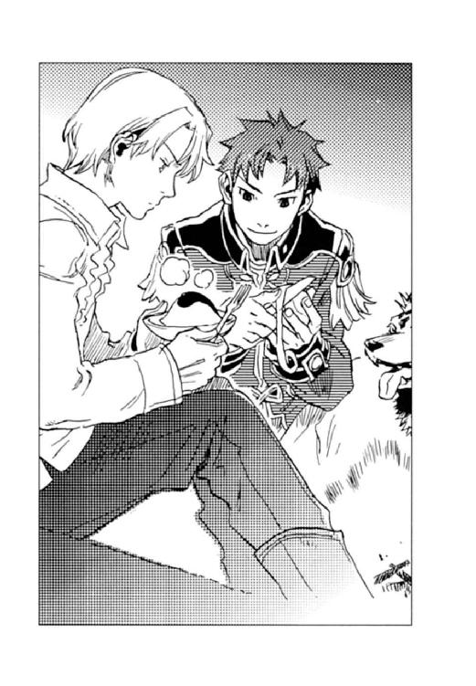
『創世神親衛隊と言ってましたね』
カイルからリンゴをもらい、アッシュはシャリシャリとみずみずしい歯ごたえを楽しむ。
「昔、ムスベル王の近衛を中心に国粋主義者が創世神親衛隊を名乗って派閥を成していた。帝国で地下活動を行い、私たちが秘密組織と呼んでいる集団は、親衛隊の一部なのだろう。組織の拠点がムスベルにあるという情報がなかったところを見ると、連邦から解放されたムスベル人が加わって組織が拡大したため、新たに拠点を設けたのかもしれん」
「創世神親衛隊か──。地下研究所の連中、いくら責めても口を割らなかったが、あいつらも親衛隊の一味なんだろうな」
カイルはアッシュの頭を撫でた。
地下研究所の連中とは、ディオンにユーミールの心臓を修復させようと、彼の手に〈光〉の玲石を移植した所長ルーエルグと彼の配下のことである。アッシュはその時、危うく心臓の材料にされるところだったのだ。
『シーグは知っていたのでしょうか？』
シーグとハーラルは、十年間もその地下研究所に幽閉されていたのだ。
「いや、以前尋ねたことがあるが、あの二人は何も知らなかった。ルーエルグはシーグに組織のことを何も伝えていなかったようだ」
キースは軽く首を振る。
「考えてみりゃ、ディオンもシーグもハーラルも、創世神親衛隊に人生を変えられたようなもんだ。今度会ったらただじゃおかねえ」
カイルはかなり怒っているようだった。
「お前も手え抜いてねえで本気でかからねえと、マジ死ぬぞ。ムスベルの〈精師〉軍人を舐めちゃいかんと、親父さんたちから散々言われてきただろうが」
彼は怒ったままの顔をキースに向ける。どうやら、先刻の親衛隊との戦いで、キースが〈闇〉の玲石で〈精〉した黒い渦は手加減されていたらしい。
「──わかってる」
キースの表情は変わらなかったが、叱られた子どものようにほんの少し肩をすくめた。
食事の後片付けを終え、馬の手入れを済ませると、カイルはどっかりとキースの隣に胡座をかいた。
下弦の月の光が、焚き火を囲む二人と一頭の上に降り注いでいた。
アッシュは前足に顎を乗せて、寝息を立てている。
キースはワインをグラスに注ぎ、カイルに差し出す。ワインもグラスもカイルが馬に積んで来たものだ。
カイルは無言でワインを受け取り、一口すすると煙草に火を点けた。
「何で黙って出て行った」
紫煙を吐き出しながらカイルは呟いた。その声音には僅かに怒りがこもっている。
──お前には、帝国軍人として恥ずかしくない生涯を送らせたかった。
喉まで出かかったが、キースは言わなかった。そんなことを言えば殴られるに決まっている。
「俺がお前の行き先に気付かねえとでも思ったか」
「何も手がかりは残さなかったはずだが......」
「俺の目まで誤魔化そうったって、そうはいかねえ」
カイルはフンと鼻を鳴らす。
（そうだったな。どんなに隠し果せようとしても、こいつには見透かされる）
キースは心の中で苦笑した。
彼に黙って出て来たことを詫びるべきか、それとも彼が追って来たことを怒るべきかキースは少し悩み、
「なぜ来たのだ」
結局問うだけに留まった。彼が傍らにいることで安堵している自分を少し恥じながら──。
「約束だったからだ」
カイルはハシバミ色の瞳で炎を見つめていた。焚き火から火の粉がパチッとはぜる。
「何の約束だ？」
「お前が暴走したら俺が止めてやるってさ」
視線に気付いたのか、カイルは焚き火から目を離してキースを見つめ、薄く笑った。
（まだ憶えていたのか）
キースは軽く瞠目する。
姉を亡くした時だった。我を忘れるというのは、あのような状態を言うのだろう。気が付いたらカイルに抱きかかえられていた。部屋中に物が散乱し、自分自身も傷だらけだった。ひどく暴れたと、後で養父から聞いた。自分がそのように激昂する人間だとは思わなかった。
その時に、彼は約束してくれたのだ。
止めてやるから安心しろ──と。
「私は暴走なぞしていない」
キースは憮然と応えた。
「似たようなもんだろ。後先考えずに突っ走って──。ユーミールの手足を掘る時、どうするつもりだったんだ。組み立てるにしたって、お前、あれに触れるのか？」
「覚悟はできている」
アッシュに三メートル以内に近付くなと言っておいて随分な言い草だが、そのために自分は帝国を出たのだ。
「それにさっきの創世神親衛隊。思いっきりあいつらを敵に回して、独りで戦って勝てるとでも思ってたのかよ」
「............」
返す言葉がない。ユーミールの部品を集めていることを、彼らに嗅ぎつけられたのは自分の失敗だ。カイルは視線を焚き火に戻した。オレンジ色の炎が瞳に映る。
「少しは頼れ」
沁みる言葉だった。しかしキースはうなずかなかった。
士官学校で出会ってから今まで、カイルの存在が自分の支えだった。しかし、それを言葉にすれば、彼は己を顧みずに自分の味方に徹するだろう。
自分の所行が議会の知るところとなれば、養父は糾弾される。自分は我が子同然に育ててくれた養父を裏切った。アーベルン家を捨て、〈蒼い鷹〉を捨て、帝国を敵にした。共犯にはできない。
「お前には〈蒼い鷹〉を任せるつもりだ」
「知ってる。書き置きを見つけた」
カイルはワインを呷る。
「フェルナンドをもうしばらく面倒見なくてはならん」
「だな。皇太子のことは〈蒼い鷹〉が責任を持たなくちゃな」
「ディオンももう少し鍛えなければ、〈光〉の玲石を狙う者はまだ大勢いる」
「目が離せん。おまけにあいつは何をしでかすかわからんし」
「わかっていてなぜ追ってきた！」
思わず声が高くなった。アッシュの耳がピクッと動く。
「話が戻ったぞ。約束したからだって言っただろ」
カイルはクスクス笑う。彼はワイングラスを地面に置いた。両手を後ろに突き、空を眺める。雲が流れ、星の数が増していた。
「俺が来たかったからさ。それだけだ」
カイルはボソッと呟き、キースは浅いため息をついた。
敵わないな──。
自分が微かに笑んでいることに、キースは気付かなかった。
「そんなことだから、お前はいつまで経っても将官になれないのだ」
「余計なお世話だ」
ディオンは北の空を眺めていた。
空は濃紺から黒へと色を変えつつあった。細く薄い雲が、瞬き始めた星々を隠してはまた露わにする。
（中将、大佐......アッシュ......）
あの空の下に彼らはいる。
信じたい、しかし全ての状況は、キースがユーミールを甦らせようとしていることを示していた。ならば、アッシュはなぜ一緒に行ったのか。
（......俺を、置いて行くなんて）
ディオンは母の形見の指輪を握りしめる。
「フェルナンドは？」
背後からジェイダに声をかけられ、ディオンはゆるゆると振り返る。
〈蒼い鷹〉宿舎の前庭には二台の馬車と十数頭の馬が引かれ、出立の準備がされていた。玄関の常夜灯の明かりを頼りに、〈蒼い鷹〉隊員たちが旅の荷物や武器の搬入をしている。隊員たちに声はなく、時折身じろぎする馬の嘶きや蹄の音が妙に響いて聞こえた。
「まだ来ない。もうすぐだと思うけど」
フェルナンドは皇帝に旧ムスベル領への任務の許可をもらうため、王宮へ行っている。皇太子の遠征など認められないとエイモスに言われたため、ユーミールの心臓が収められている箱を開ける必要が生じるかもしれないという名目で、彼は皇帝を説得にかかったのだ。
しばらくすると、ガラガラと疾駆する馬車の音が聞こえてきた。四頭立ての箱形馬車はディオンの前で止まり、「お待たせ」と、馬車からフェルナンドが飛び降りた。
「どうだった？」
「行っていいって。どうせ止めても無駄だろうって」
フェルナンドは軽い笑みを浮かべた。彼は過去に二回、皇帝にも上官にも無断で敵国への潜入に成功している。その業績を考えれば、止めても意味ない。
「ところでお前、行く時は馬だっただろ？ 何で馬車で戻って来たんだ？」
御者台を仰ぎ見れば、ヘルマン少佐が困ったような笑みを浮かべていた。
何となく悪い予感がする。
「それは......」
フェルナンドは微妙に頰を引きつらせた。
「わたくしが、ディオンに用があるからよ」
案の定、馬車の中から聞き覚えのある声がし、ディオンは後退った。
レースのフリルをふんだんにあしらった真っ白いスカートから覗く足がステップにかかった。白く細い手が片方、ディオンに差し出される。
「こういう時、騎士は淑女に手を貸すものなのよ」
「あ、ごめん」
ディオンは彼女の手を取り、馬車から降ろす。
薄闇を払って、光沢のある絹のドレスと長い金の巻き毛が輝いた。唇は愛らしい薄紅色、大きな瞳は夏の空のように明るい青、フェルナンドとよく似たなかなかの美少女なのだが──。
「何て顔してるの。塩の山を目の前にしたナメクジの方がまだましだわ」
アーガルド帝国皇女アマーリエ姫は、ディオンに厳しい。
「僕が父上と話してるのを盗み聞きして、どうしても見送りたいって......」
フェルナンドは苦笑する。こうやって極秘情報は漏れていくのだろう。
「まさかディオン、キース様やカイル様やアッシュを恋しがって、めそめそしてたんじゃないでしょうね」
アマーリエはディオンの手をつかんだまま離さなかった。
「いや、めそめそなんか......」
してたかもしれない。
「あなたは、誰もが幸せに暮らせる国を造ろうって、お兄様と約束したんでしょ？ 目の前の些細なことにとらわれてる場合じゃないのよ」
「些細って......」
「些細なことだわ。キース様は何か事情があって、あなたたちに内緒で出かけた。多分、巻き込みたくなかったのでしょう。それだけのことじゃない」
「巻き込みたく......なかった？」
空色の瞳が燦然とした輝きを放って、ディオンを射貫いた。
「そうよ。キース様が何をなさろうとしているのか、わたくしにもわからないわ。けれど、あの方は帝国に仇なすようなことを絶対になさらない。今の帝国の情勢を鑑みて議会の賛同を得ることが難しいと判断なさったのだわ。だから一人でお出でになったのよ」
いつしか、周囲で聞いていた隊員たちが荷物搬入の手を止めて、アマーリエの言葉に聞き入っていた。
「信じられないのは、あなたに心の余裕がないからだわ。何も告げてもらえずに置いて行かれたものだから、悔しくて悲しくて、冷静に考えられないのよ。それじゃ親とはぐれて泣いてる子どもと同じじゃない」
ディオンは言葉に詰まる。
ふいに、頭の隅に母が死んだ瞬間の映像がよぎった。母の記憶はないはずだった。なぜ急にそんな光景が思い浮かぶのかわからない。
あの時、大きな音がして天井が落ちてきた。気が付いたら自分は母親の胸に抱かれていた。目を上げて母を見たら、彼女は微笑み返した。我が子の無事を知って安心したのかもしれない。そして母はゆっくりと目を閉じた。
（そうだ、だんだん冷たくなっていく母さんが心配で、恐くて、俺は大声で泣いたんだ）
ディオンの心には、愛しい者を失う不安と恐怖が、深く刻まれていた。そして今また、かけがえのない者たちに置き去りにされ、ディオンは幼子のような切なさを味わっていたのだ。
「置いて行かれた方だけが辛いなんて思ってやしないでしょうね。置いて行く方だって同じくらい辛いのよ」
キースとアッシュがどんな思いで自分たちを置いて行ったのか──。
（そんなこと、考えなかった......）
ディオンはアマーリエを見つめ返した。彼女の眼差しは力強く、それでいて温かかった。
彼女はディオンの手を握ったまま背伸びし、もう片方の手でディオンの胸ぐらをつかんで引き寄せる。
「いいこと、キース様、カイル様を信じなさい。そして絶対みんなで帰って来なさい。これは命令よ」
「りょ、了解──」
あまりの迫力に圧倒されて、ディオンは条件反射的に返事をする。
アマーリエはパッとディオンから手を離し、〈蒼い鷹〉たちに視線を移す。
「お騒がせいたしましたわね。それでは行ってらっしゃい。御武運をお祈りしておりますわ」
彼女はニッコリと微笑んで、さっさと馬車に乗り込んだ。
「お忙しいところ、失礼しました」
ヘルマンはそそくさと馬に鞭を入れ、残されたディオンたち〈蒼い鷹〉は呆然と、去って行く馬車を見送った。
「参ったな──」
誰かが呟いた。
「痛いところを突かれたぜ」「あの御気性は、先帝フィリポ六世陛下から受け継いだのかな」
クスクスと隊員たちから笑みがこぼれ、皇太子フェルナンドは「すみませ～ん」と先輩たちに頭を下げる。
「皇女殿下の言う通りだわね」
ジェイダがポンと、ディオンの肩を叩いた。
「捨てられた......そう思ってしまったの。信じなくちゃね」
荷物の搬入を再開した〈蒼い鷹〉たちは、先刻に比べると俄然活気に満ちていた。
「ああ、そうだな」
ディオンは拳を緩く握る。アマーリエが握っていたその手には、微かに彼女のぬくもりが残っていた。
「そこにいるのは誰だ!?」
ハーラルは咄嗟にシーグを背に庇う。
月の明るい晩だった。ムセイオンの象徴とも言える時計塔が深更を示し、辺りは静まり返っている。先刻まで二人は論文作成に取り組み、研究員宿舎へ帰ろうと研究所の玄関を出たところだった。
玄関脇の生け垣に身を潜めている人物がいた。月明かりを背にしているため、顔は見えない。
「どうかお静かに」
影が立ち上がり、玄関の常夜灯にその姿を曝す。
「お前は......」
シーグは目を瞠る。
四歳の時から十年間、シーグとハーラルはムスベルの白い砂礫の下に設けられた〈精〉研究所に幽閉されていた。そこで働いていた者たちの中にこの顔があったからである。
シーグは、国のため、ヴォルジェ家の家名のために、日の差さぬその地下研究所で〈精〉の修業にいそしんでいたが、一年半ほど前に、地下研究所はキース率いる第十三師団と〈蒼い鷹〉に潰された。所長のルーエルグは捕らえられたが、シーグとハーラルは数名の職員と共にその場を逃れ、それを機に二人は組織と手を切ったのである。
「お懐かしゅうございます」
男は慇懃に、ムスベルの正式な礼を取った。
「今頃何なの？」
シーグは憮然と男を見つめ返す。
「お迎えに上がりました。ヴォルジェ大神官、いいえムスベル国王陛下」
男はシーグに手を差し伸べた。
甘く気怠い、葉巻とブランデーの香り。緩やかな弦楽器の調べを背景に、さざめく人の声。
そこかしこのテーブルでは、上等のフロックコートやイブニングドレスを身に纏った男女がポーカーやルーレットに興じ、その間隙を黒いタキシードに黒い仮面を着けた給仕がトレイにグラスを載せて忙しく行き来する。
上流階級のみが出入りを許される秘密の娯楽施設、不夜城である。
「こちらのお客様がポーカーのお相手をお探しですが──」
黒服黒仮面の従業員が、丸テーブルを囲む貴族たちに声をかけた。彼らは「こちらのお客様」と呼ばれた男の方に目を向け、「あっ」と声を上げる。
男は羽根飾りの付いた銀のつば広帽子に銀のマント、銀の仮面を着けていた。
「あれは連邦の夢幻貴族じゃ......」
「催眠剤を使う〈精師〉だと聞くぞ」
「銀の霧を吸わされたら、勝てるゲームでも負かされるわい」
貴族たちは頭を突き合わせてコソコソ話し合い、
「いや、遠慮させていただこう。そろそろお開きにしようと思っていたところなのでな」
と、慌ただしく席を立った。
「何だ、肝っ玉の小さいやつら」
夢幻貴族は舌打ちする。対戦を断られたのはこれで三組目だった。
「誰か他にカモは──いや、ポーカーの相手は......」
他のテーブルを物色していると、
「虚無伯爵がお話ししたいと申しております。どうぞこちらへ」
別の黒服がやってきた。
「見つかってしまったか」
銀ずくめの騎士は、やれやれと肩をすくめた。
黒服は、関係者以外立ち入り禁止の階段を上り、四階の虚無伯爵専用の応接室へ案内する。
「連邦の新政府代表ともあろう者が、こんなところで何をしている？」
デザインはシンプルだが、上等な革張りのソファーに足を組んで腰掛け、ベルンハルトはブランデーグラスを揺らしていた。長身瘦軀をきっちりと黒いスーツで包み、夢幻貴族に渋い笑みを向ける。
「まだ何にもしてない。一儲けしようと思って、超多忙なスケジュールを調整して馬を飛ばして来たというのに、みんな俺が夢幻貴族だと気付いて、誰も相手をしてくれないのだ。ああ、天は我を見放したか」
夢幻貴族はマントを広げて天を仰いだ。
「スケルツァンド。当たり前だろう。君、その恰好では気付くなという方が無理だ」
もう一つの顔がオペラ座の人気指揮者である彼は、時折会話に音楽用語が交じる。
「マントを脱いで、催眠術がバレないようにして勝負するなら、見逃してやったのに」
ベルンハルトが笑うと、夢幻貴族は、「俺は、いついかなる時も華麗であることをモットーとしているのだ」と、唇を尖らせた。
「で、いくら要るんだね」
「お前にはもう何千億も借金してる。これ以上負債を増やしたくない」
「連邦は有望な市場だ、投資する価値はある。金利は安くしておくよ」
「そうやって、連邦の経済も牛耳る魂胆か」
「私に任せておけば安心だよ。インフレもデフレも起こらないように上手く操作してあげる」
本気で連邦の陰の黒幕にもなるつもりらしい。
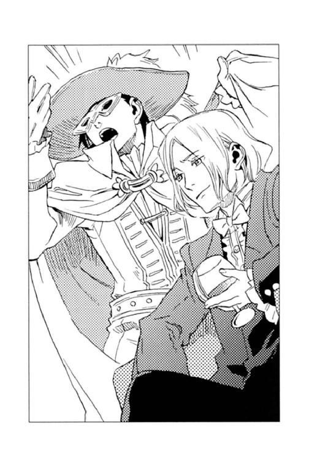
「それで、いくら要るんだ？ 君に頼みたいこともあるし、いくらでも相談に応じよう」
「一千億リーレ」
「グランディオーソ！ そんな金額をカジノで稼ごうと思ったのか」
「大規模な〈精〉工場を建設したいと考えているのだ。収容所にいたムスベル人を解放しただろう？ 労働力だけは豊富にあるのだが、働く場がない。彼らの〈精〉技術を利用しない手はないし」
「なるほど、いいアイデアだね。では年利〇、〇一パーセントで貸そう」
あっさりと申し出られて、夢幻貴族は目を瞠った。虚無伯爵の商売とは思えない。
「〇、〇一って......お前、熱でもあるのか？」
「その代わり、君に旧ムスベル領に行ってもらいたい」
「は？」
夢幻貴族は目を瞬く。ベルンハルトはそこで大きなため息をついた。
「キース・アーベルン中将が、ユーミールの心臓と血の玲石、〈死の光と熱〉の〈精炉〉を持って出奔したのだ」
「何だと──!?」
連邦の政府代表と帝国の陰の黒幕は、しばし黙したまま対峙した。
「軍はひた隠しに隠しているけれどね、中将は他の部品を集めるためにムスベルの砂礫に行ったらしい。今〈蒼い鷹〉が追っている」
夢幻貴族は、ディオンとフェルナンドが突然飛行機でやって来た理由に思い当たる。
「それで、あの二人、ユーミールの頭を確かめに......それにしても、中将は何でまた......」
「理由は私にもわからない。しかしムスベルの秘密組織が不穏な動きを始めたのでね。ムスベル大神官の孫で、ムセイオンで研究員をしているシーグフリード・アレクサンドル・ヴォルジェという少年がいるのだが──」
「ああ、知っている。革命では少しばかり世話になった」
「彼も秘密組織に加わった。ムスベル国王として」
夢幻貴族は絶句した。
「国王......って、冗談じゃない。シーグは黒雷獣の〈精〉技術を持ってるぞ」
ムスベルには草も木も生えない。そんな土地に人が住めるわけがない。当然、黒雷獣を使って連邦か帝国の領土を奪うつもりだ。
「えらいことになった......」
「そのような状況下で、私の大事なアレグロ君がムスベルへ向かったとなれば、放ってはおけない。彼の才能は金では買えないのだ」
アレグロ君とはディオンのことである。ベルンハルトはディオンの天性のリズム感に惚れ込み、いずれはオペラ座の打楽器奏者に迎えるつもりだった。
「君にアレグロ君たちの援護をしてもらえないだろうか」
「気持ちはわかる。俺も、可愛いフェルナンドお嬢さんが砂礫の砂漠でおろおろしていると思うと、居ても立ってもいられない。しかしな、俺はものすごーく忙しい身なのだ。お前の私兵を送るわけにはいかないのか？」
「君が来るまではそのつもりだった。だが、君は恰好こそ三文役者だが、一応は大陸一の催眠〈精〉の達人のはず。一個大隊を送るより役に立ちそうだと私は高く評価している」
「それで高く評価してるつもりか？」
「引き受けてくれるのなら、連邦へ工場建設の技術支援員を派遣してもいい。人件費はこちらで持つ。その方が安上がりなのだよ」
金と人を貸すから、タダ働きしろと言っているのだ。さすがは虚無伯爵である。
「ディオンの才能は金では買えないとか言って、俺の技術は金に換算するのか？ まあ、背に腹は替えられない。わかった、引き受けよう」
「そう言ってくれると思った」
ベルンハルトはムスベルの地図を広げ、
「軍の情報はガードが堅くてね、ユーミールの部品が埋められている場所は確認できなかった。従って、中将や彼を追っている〈蒼い鷹〉が広大なムスベル領のどこに向かったのかわからないのだが、シーグフリードの足跡は確かめてある。シーグフリードは、ユーミールの部品を持っている中将に接触するはずだ。彼を尾行して行けば、いずれ中将やアレグロ君たちに巡り合えるだろう」
と、書き込みを入れ始めた。虚無伯爵の情報収集力は旧連邦の〈沈まぬ星〉をも凌ぐのだ。
「あの中将が、ユーミールの部品を持って、わざわざ敵の懐に飛び込むか......？」
地図を眺めながら、ふと夢幻貴族は最近耳にした、ある玲石と中将の話題を思い出す。
「お前、螺旋の玲石って知っているか？」
「いや。初めて聞く。私は〈精師〉ではないが、商売上、全ての玲石の流通価格と用途は知っているつもりだったが──。何に使う玲石なんだ？」
ベルンハルトは地図に書き込みを入れる手を止め、顔を上げた。
「俺も知らないのだ。虚無伯爵の闇ルートにも上らないとなると、よほど特殊な玲石なのだろうな」
夢幻貴族は指先で銀の仮面を押し上げる。
「連邦にウルビーノ公という古くからの名士がいるのだが、二十六年前の大戦が終結して間もなく、公は捕虜のムスベル人から螺旋の玲石を預かり、アーベルン家に引き取られたキースという子どもに渡すように頼まれたのだそうだ」
「中将のことだね」
「うむ。革命の時、偶然にも中将に会うことができて螺旋の玲石を渡したと、公は言っていた。それを聞いた時は大した話じゃないと思っていたのだが......」
黒雷獣をあれほど危険視していたキースが、なぜ突然ユーミールの部品を持って出奔したのか。
螺旋の玲石がそのきっかけとなったのなら──。
「螺旋の玲石とは、何を〈精〉する玲石なのだ？」
「じいちゃん！ 父さん！」
ディオンは船縁から身を乗り出して盛大に手を振った。桟橋では筋骨逞しい大柄な老人と、黒縁眼鏡のひ弱そうな熟年男が、満面の笑みで手を振り返している。
船が止まりきらないうちに、シュネーはデッキから飛び出して『博士～！』と黒縁眼鏡の腕に飛び込んだ。
「久しぶりじゃの。オペラ座以来か」
「元気だったかい？」
桟橋に降り立ったディオンの頭を、祖父デンゼルと父モーリスはゴリゴリとなで回した。
グロア港の海軍専用の船着き場である。グロア港はディオンの実家であるビヴロスの山小屋から最寄りの港だった。
「その節は色々とお世話になりました」
フェルナンドも船から降り、デンゼルに敬礼する。
「殿下も御健勝の御様子、何よりに存じまする」
デンゼルは好々爺然とした表情を少しだけ引き締め、モーリスと共に臣下の礼を取る。
〈蒼い鷹〉隊員も次々と桟橋に降り立ち、一列横隊になってデンゼルに敬礼した。
「第十三師団第七部隊〈蒼い鷹〉指揮官代行、グスタフ・ゼノン中佐であります。陸軍総司令官エイモス・アーベルン元帥閣下の命により、お迎えに参上いたしました」
「いやいや、そう畏まらんでくれ。儂はただの猟師じゃ」
帝国の黒雷獣と呼ばれたかつての将軍は笑ったが、体軀は巨漢の部類に入るゼノンよりも一回り大きく且つ頑健で、齢六十を超えてもなお、かもしだす雰囲気は現役の軍人たち以上に迫力があった。
キースたちの追跡を命じられた〈蒼い鷹〉は、帝都シャマナ港から海軍の機帆併用船に馬車と馬を積んで出立した。大陸の沿岸を北上してムスベル入りする予定だが、途中、このグロアに寄港しデンゼルと合流することになったのである。
彼は、ビヴロス方面軍の駐屯地経由でエイモスから電文を受け取っていた。二十六年前、ユーミールの分解と廃棄を指揮したのはデンゼルだった。そこで、四肢と胴体が埋められている場所を案内するよう、エイモスが要請したのである。
「僕も同行させてください。万一の場合は僕が黒雷獣を止めます」
モーリスが進み出た。見れば彼もヤッケに大きなザックを背負い、旅支度である。
「博士も──？ 危険ではありませんか？」
〈蒼い鷹〉たちは驚いてモーリスを見た。ディオンの父モーリス・タウンゼントは帝国で唯一知的生物の〈精〉に成功した天才〈精師〉である。彼の技術を欲した旧連邦政府に連れ去られ、十年の間黒雷獣の製作を強要されていた。〈蒼い鷹〉に救出されたのはつい先年のことである。
「だめだよ、父さん。ムスベルの秘密組織も動き始めたんだ。向こうで戦闘になるかもしれないし、今度はムスベルに誘拐されるかもしれない」
ディオンは父の顔を舐めているシュネーを引きはがした。
「儂もそう言ったのだが、どうしても一緒に行くと言ってきかんのでな。好きにさせてやってくれんか。こやつの言う通り、今回の任務には黒雷獣の知識が必要じゃし」
デンゼルは苦笑する。
「じいちゃん！ 父さんが戦いにはド素人だって知ってるだろ!?」
ディオンは反論したが、「うるさい。儂がいいと言ったんじゃ」と一喝された。
「将軍がそう仰るのであれば、我々に異存はありません。博士、宜しくお願いします」
ゼノンはモーリスに敬礼し、モーリスは「はは、こちらこそ」と頭を搔いた。何だかんだでデンゼルの意思は絶対なのだ。
新たにモーリスとデンゼルを乗せ、間もなく機帆併用船はグロア港を出港した。
「まったく、何でビヴロスに隠れ住んでるのかわかってる？」
船縁に寄りかかり、ディオンは父を相手に文句をたれた。
デンゼルも〈蒼い鷹〉隊員も船室に引き揚げ、デッキにはディオンとモーリスの二人きりである。
「じいちゃんもどうかしてる。何で父さんが付いてくるのを許しちゃうのさ。連邦から解放されたムスベル人〈精師〉が秘密組織に加わったっていう情報もあるのに」
また父を失うかもしれないと、ディオンは不安だった。
モーリスは黙って海を眺めている。晩秋の晴れた空は目の覚めるような青さで、海は更に碧く、波頭が眩しく輝いていた。
「父さんほどじゃないけど、俺だって黒雷獣を止めるぐらいの知識はあるよ」
「だからこそだよ、ディオン。お前だけに頑張らせるわけにはいかない。父さんも役に立ちたいんだ」
ゆっくりと振り向き、父は微笑んだ。
「罪滅ぼし──なんて大げさなことじゃないけどね。可愛い君を置いて、十年も行方不明になったこととか、連邦で黒雷獣を造ったこととかね」
「そんなの、父さんのせいじゃないだろ」
「〈蒼い鷹〉にお礼もしたかったんだ。議会が僕を帝国に帰還させないと議決したにもかかわらず、助けに来てくれたし」
「それは中将が俺の意思を汲んでくれたからだ。俺が恩返しすればいいことだろ」
モーリスはディオンに手を伸ばし、頰に触れた。黒縁眼鏡の奥の優しげな瞳が揺れる。父は息子の肩をそっと抱き寄せた。
「僕が連邦の捕虜になった時、君はまだ五歳だった。それから十年──。子どもにとって一番大事な時に側にいてやれなかった。今、側にいたいと思ってはだめかな？」
「父さん......」
──置いて行く方だって、辛いのよ。
ディオンの耳の奥で、アマーリエの声が甦る。
「勝手な言い草だと自分でも思う。僕がいなかった十年をここで取り返そうなんて虫のいい話だし、僕が連邦で造った黒雷獣が、君たちを危機に陥れた事実は今更曲げられない。でも、行きたいんだ。せめてそのくらいのことはさせておくれ」
父の腕は温かかった。そして思いの外逞しかった。
果たせなかった父としての責務と、届かなかった十年分の愛、そして〈精師〉としての矜恃──。それらを取り返すために、父は危険を顧みずにムスベルへ行こうとしている。
肩から伝わる父の温かさに、ディオンの胸が熱くなった。
猫背でひょろ長い体軀、レンズの厚い黒縁眼鏡、目尻が少し垂れた優しげな目、祖父に比べれば見た目はひどく頼りないが、
「あのじいちゃんを説得しただけでも、一生分の仕事を果たしたと思うよ......」
ディオンは父を誇らしく思った。
翌日の午後、ディオンたちを乗せた機帆併用船は旧ムスベルの東海岸フラン港に入港した。
フラン港はムスベル最南に位置し、ムスベルの数少ない不凍港である。かつては商船が盛んに行き来し、海軍の艦隊の母港にもなっていたという。しかし、今では船体に錆の浮いた小さな船が数隻、朽ちるのを待つばかりで、往時の面影はほとんどない。
「ゴーストタウンって、こういうのを言うんだね」
船から下りたフェルナンドは、辺りを見回し身震いする。
黒雷獣が吐き散らした〈死の光と熱〉は海岸までには及ばなかったらしく、倉庫や海軍の砦などは原形を留めていたが、二十六年間風雨に曝された建物は傷みがひどかった。
「毒の灰が風に乗ってこの地にも降り、住んでいた者は次々と死んでいった。運良く災禍を免れた者も移住したのじゃ」
デンゼルは苦い顔でひび割れた埠頭に立った。
「じいちゃんは、その頃ムスベルにいたんだろ？ 毒の灰とか浴びなかったのか？」
シュネーを肩に乗せ、ディオンもデンゼルの隣に立って廃墟の街を見渡す。
「黒雷獣が大暴れした時は、既に帝国領の砦まで撤退しておった。毒の灰が降り終わって、三度の雨を待って後、再入国したんじゃ。しかし、それでも毒素は残っておったらしく、連れて行った軍団の兵士の半数近くが病に倒れた。幸い儂は何ともなかったがの」
「......さすがだね」
帝国の黒雷獣と呼ばれた将軍は、本物の黒雷獣の毒さえも寄せ付けなかったらしい。
船の下甲板から馬車と馬を降ろし、一行は白い砂礫の荒野に向かって出発の準備を調える。
「まずは、旧ムスベル王都に向かう」
デンゼルは号令を発した。
王宮の北に王族の御陵があり、そこにユーミールの胴体が埋められていた。キースがユーミールを組み立てるつもりで部品を集めているのなら、象の三倍もある胴体の発掘を最後にするとデンゼルは予想したのだ。しかし、キースらに遅れること一週間。既に四肢の回収を終え、彼らも王都に向かっている頃だろう。
「間に合うか......」
デンゼルは硬い表情で呟いた。
優れた用兵術を以て知られる新旧二人の指揮官の戦いが、静かに始まった。
キースは立ち止まり、目の前の丘を見上げた。
「ここが王族の墓か？」
キースの隣に立ち、カイルは提げていたトランクを地面に置くと、視界を一杯に占める巨大な丘を見渡した。彼らの後方三メートルの距離を置いて、軛に繫がれたアッシュと馬も歩みを止める。その拍子に背後の荷馬車に載せられたユーミールの四本の足が、ギィと鋼の鱗をこすらせた。荷馬車はカイルが〈精〉で造ったものである。
空には厚い雲が流れ、残照が黒い雲の端を紅に染めていた。遠雷が微かに耳に届く。日没と共に強まってきた風が、丘の頂からサラサラと白い砂をこぼした。
「南側中央に入り口があるはずだ」
キースは白い手袋に玲石を貼り、手の平を向かい合わせる。彼は手の平の間にできた白い渦を丘の斜面に向けて放った。渦は空中で大気を巻き込んで成長し、ドンと重低音を響かせて砂礫の丘に激突する。
もうもうと砂煙が上がった。アッシュと馬は顔をそむけて目を閉じ、カイルは腕で顔を覆う。ザーッと砂礫の滑る音は数秒に亘った。
やがて砂塵は収まり、丘のあった場所に幅百メートル近く、高さ数十メートルにも及ぶ巨大な石の建造物が姿を現した。
積み上げられた石は滑らかで、ほのかな光沢を孕んだ乳白色をしていた。往時の繁栄が偲ばれるだけに、石壁がひび割れて傾いている様子は、もの悲しさを感じさせた。
「黒雷獣の〈死の光と熱〉を浴びて、よく壊れなかったな」
カイルが墳墓を見上げて呟いた。
「〈精〉して造った人造の石なのだ。有事の際、王族の避難場所として利用するために」
石壁の中央には巨大な石の扉があった。扉からは幅広の石段が緩い傾斜を描いて地面へと続いている。キースはその石段を、凍った海の色の瞳でじっと見つめる。
二十六年前のあの日、衛兵に抱きかかえられ、側近の〈精師〉が造る障壁に守られながら、王宮からこの御陵に逃げた。
──いつか黒雷獣は国を滅ぼす。
父がそう遺言した時には、幼かった自分には意味がわからなかった。しかし、暴走する黒雷獣を目の当たりにして、その時が来たのだとようやく実感し、移植されたばかりの〈闇〉の玲石を握りしめた。
母と姉が手を繫ぎ、妹は乳母に抱かれてすぐ後ろを走っていた。王宮は既に紅の色をした陽炎に包まれていた。彼方では一基の黒雷獣が咆哮を上げ、辺り構わず〈死の光と熱〉を吐き散らし、王都を蹂躙していた。
──母上、姉上、急いで！
御陵の入り口に逃げ込んだ自分は叫んだ。彼女たちはまだ階段を駆け上がっている。衛兵たちが、彼女たちの到着と同時に石の扉を閉めようと、待ち構えていた。
黒雷獣の口腔がこちらに向いた。次の瞬間、陽の光を直視したかのように、目の前が真っ白になった。母と姉と、妹を抱いた乳母が黒い影となって目に焼き付いた。
──妃殿下！
耳元で側近の一人が絶叫した。ガラガラと石の扉が閉まる音がした。
──母上！ 姉上！
母たちの名を呼んだが誰も応えなかった。自分を抱く衛兵の腕が震え、熱い滴が落ちて来るわけを知りたいとは思わなかった。視力が戻っても、母と姉と妹の姿は見つからなかった。暗い御陵の中には、自分と自分を抱く衛兵と、数名の側近だけだった。
──扉を開けて!!
衛兵の腕の中でもがいたが、放してはもらえなかった。どんな障壁でも、〈死の光と熱〉を防ぐことはできない。黒雷獣は自らの血肉を原料として〈死の光と熱〉や砲弾を〈精〉する。身を削り、撃ち尽くし、やがて黒雷獣は衰弱していく。それまでは御陵から出ることは叶わぬと、言い聞かされた。
それから何日をこの御陵で過ごしたのかは憶えていない。
ようやく扉が開けられた時、雪が降ったのかと錯覚した。地平の彼方まで一面の白い砂礫が大地を覆っていた。王宮を囲んでいた森も、王宮の白い丸屋根も消えてなくなっている。
母たちを捜そうと御陵を飛び出しかけたが、毒が満ちていると、衛兵に止められた。
側近の一人が障壁を張って石の階段を下りた。階段の途中には、白い砂が薄く積もっていた。側近はその白い砂を丁寧に集め、御陵の中に持ち帰った。それが、母、姉、妹と乳母の変わり果てた姿だと彼は言った。幼い自分にはどうしても納得できず、しばらくの間錯乱していたと聞く。
愛しい者たちが命を落とした場所を見据え、キースはゆっくりと石段を上った。そこで足を止め、じっと見下ろす。
王も、王の子たちも王宮に踏みとどまり、黒雷獣を止めようとしたが叶わず、〈闇〉の玲石を継承した自分だけが御陵に逃がされたと知ったのは、母たちの死からしばらく後のことだ。
キースは胸の底に沸き起こる苦い感情を抑え込み、今度は扉を見据えて階段を上る。
扉には精緻な文様が刻まれていたことをおぼろに記憶しているが、母や姉たちと共に〈死の光と熱〉で溶かされたのだろう、扉の文様は判然としなかった。
扉には太い鉄輪がはめ込まれ、大きな錠前がかけられていた。鉄輪も錠前も錆びてはいたが、溶けた跡はない。ユーミールの胴体を廃棄した後、帝国軍が取り付けた物だろう。
キースは〈精〉で鉄輪を溶かした。
「重そうな扉だな、どれ」
カイルがトランクを持って階段を駆け上がり、それをキースの足元に置くと、扉を肩で押す。蝶番の軋む音と、扉の底の戸車が回る音を立てて、石の扉が徐々に開く。長く閉ざされていた王家の墓は、風を吸い込み魔物の悲鳴のような声を上げた。
扉の奥には深い闇が満ちていた。キースは手の平に小さな光の球を灯し、辺りを照らす。あの時と同じく、入り口からは広い通路が長く延び、左右の真っ白い壁面には、ムスベルの神々の姿が刻まれている。
「んじゃ、馬車を入れるか」
カイルは階段を下りながら、そこに二本のレールを〈精〉した。荷馬車の車輪の軸にはエンジン代わりに箱形〈精炉〉を取り付ける。アッシュが馬を先導し、小型機関車となった荷馬車は、重いユーミールの足を載せ、ゆっくりと階段を上がった。荷馬車が登り切るとカイルはそれを入り口に引き入れ、レールを源石に戻しておく。
扉を閉じ、キースを先頭に一行は暗い通路を進む。
『風が強くなってきましたね』
アッシュは耳をそばだてる。御陵の中には細い通風口が巡らされ、外界の空気を送っていたが、外の気配を読むのは難しかった。
（何事もなく済めばいいけど......）
ムスベルの親衛隊が襲ってきたのは、カイルと出会った湖跡の一回だけである。自分たちの足跡を見失ったか、または黒雷獣の完成を待ち、起動したユーミールを奪う作戦に変更したのかもしれない。
間もなく通路が途切れ、巨大な空間が眼前に広がる。カイルが馬の鞍に下げた袋からカンテラを取り出して明かりを灯した。カンテラの明かりではその隅々まで照らすことはできなかったが、磨き上げられた石畳の上には、華麗な装飾彫りが施された石棺が左右の壁に沿って、整然と並んでいる様子が窺えた。その数は幾つとも知れず、ムスベル王家の長い歴史を静かに物語っている。
キースは一番手前の石棺に歩み寄った。彼はしばしその棺を見下ろし、蓋に彫られた文字を指先でなぞる。
「誰のもんだ？」
カイルがカンテラを掲げて歩み寄る。キースは一呼吸の間を置いて、
「父だ。そして母と姉と妹と乳母と......」
と、小さく呟いた。
「そうか──」
一人分の棺に五人もどうやって入れたのかと、カイルは問わなかった。彼はキースの過去をおおよそ知っている。
キースの父の棺には、母と姉と妹と乳母の名も刻まれていた。側近が細い光を〈精〉してそれを彫り込んだことをキースは思い出していた。
父は黒雷獣の暴走に先んじて病死し、この御陵に埋葬された。しかし、母たちの死に際して、葬儀どころか、棺を用意する状況ではなく、白い砂礫に変じた彼女たちは、父の棺に納められたのである。王とその家族が白い砂礫となり、王宮跡のいずこかでそのままうち捨てられていることを思えば、いくらかはましな末路だと言えるかもしれない。
「贖わねばならぬ──」
キースは顔を上げ、再び石室の奥に向かって歩み始めた。カイルは無言で彼の隣を歩き、アッシュと馬も付き従う。三メートルの距離を置くことは忘れない。
やがて、明かりが石室の最奥の壁に届いた。中央の、一段高くしつらえた祭壇の上に、初代ムスベル王の物と言われる棺が安置されている。
その手前に、黒い鱗を纏った巨大な獅子の胴体は横たわっていた。
最後の黒雷獣ユーミールの胴体──。
敵国の砲火をくぐり抜け、正気を失った同胞の〈死の光と熱〉をも浴びた鱗は、ひび割れ、鋼の光沢を失っていた。
「なんか、迫力あるよな。国が滅びても生き残っただけのことはあるっつーか」
カイルは、金属製の大型トランクとカンテラをユーミールの胸元近くに置き、荷馬車からユーミールの足を引きずり降ろし始める。
キースは薄氷の瞳でしばらくユーミールの胴体を見つめていたが、やがてトランクに歩み寄り、その蓋を開けた。中に収められているのは、ユーミールの〈死の光と熱〉の〈精炉〉と血の玲石、そして鋼の宝石箱である。彼はトランクから宝石箱を出した。
この箱の解錠方法を知らされた時には、まさか自分が開けることになるとは思わなかったと、キースは一人自嘲する。
彼は数分の時間をかけて宝石箱の蓋を開けた。中には、空気の抜けた白いボールのような、ユーミールの心臓が入っている。
キースは、白い手袋を取った。
（始まる──）
アッシュは、透けるように白いキースの手の平に埋まる漆黒の玲石に目を吸い寄せられた。それで生き物を〈精〉できると聞いたのは、〈蒼い鷹〉の宿舎を出て間もなくのことだった。
そして、それが全ての始まりであったことも──。
カイルも、キースの斜め後ろに立ち、緊張した様子でキースの手元を見ていた。アッシュはカイルの足元まで下がりそこへ座る。
キースは宝石箱からユーミールの心臓をつかみ出した。酷使された心臓はすり減り、あちこちに穴が開いていた。
（あの時は、ユーミールの復活なんて望んでいなかったのにね......）
一年と半年も前になるだろうかと、アッシュは思い起こす。
ディオンがこの壊れたユーミールの心臓を直す技術を持つことをムスベルの秘密組織、すなわち創世神親衛隊に知られ、組織は彼の手に〈光〉の玲石を移植してしまった。組織はディオンに心臓の修復を迫り、アッシュはその材料にされかかった。
今、同じことをキースが為そうとし、自分はそれを見守っている。
（ディオンが知ったら、何て言うかしらね......）
アッシュは諦念にも似た切ないため息を吐いた。
キースは心臓を左手の上に載せ、右手をかざした。〈闇〉の玲石から黒い稲妻が発せられ、ユーミールの心臓を貫いた。
その頃、デンゼルとモーリスを加えた〈蒼い鷹〉たちは、馬車と馬に分乗して砂礫の荒野を西に向かって疾走していた。既に日はとっぷりと暮れ、厚い雲が月明かりを遮り、辺りは全くの闇に覆われていた。いずれ野営は必要だが、少しでも距離を稼がなければならない。
「しかし、キースは何故にユーミールの復活などを思い立ったのであろうな」
デンゼルは険しい表情で腕を組む。
カンテラを灯した幌馬車の中で、ディオンはフェルナンド、モーリスと共にデンゼルを囲んでいた。一つの馬車に指揮官のデンゼル、皇太子フェルナンド、及び一般人の天才〈精師〉モーリスが同乗し、ディオンは彼らの護衛を命ぜられたからである。
「連邦で革命が成功して、収容所にいた何万人ものムスベル人が解放されましたから、それがきっかけではないかという意見もあるのですが......」
フェルナンドは言葉を濁す。おそらく父皇帝の見解なのだろう。
「じゃが、あのキースが黒雷獣を使って帝国から領土を奪うとは思えん。そんなことをアッシュが黙って見ているわけないじゃろうし、キースには武力行使せずとも政治的に策を巡らせて領地を確保するぐらいの技量はある」
「彼がユーミールの記憶──真の源石を持ち出したというのも気になりますね」
モーリスは馬車に乗るや否や、ザックから数冊の書物を取り出して、熱心に読んでいた。その上を『ねえねえ、何調べてるの？』とシュネーが歩き回る。シュネーはモーリスと再会して以来、べったりくっついて離れないのだ。
「そうですよね。ユーミールの記憶があれば、確かに即戦力になると思うけど、僕だったら黒雷獣を造ってもユーミールの真の源石なんか埋めませんよ。もしもクラウド将軍みたいだったら、取り扱いが大変じゃないですか。新しい真の源石を埋めて調教する方が楽だと思いますけど」
フェルナンドは大真面目に言い、デンゼルはゴホゴホと咳をする。
「ユーミールってどんな黒雷獣？」
ディオンの問いに、
「そうさな。見た目はあの通りの怪物だが、なかなか筋の通ったやつであったな。儂が出会った時には既に虫の息だったが......」
デンゼルは遠い目をして答えた。
「他の黒雷獣は溶け崩れ、灰になって白い砂礫に同化しておった。そんな中で、やつだけが独り、大地を踏みしめて立っておった。瀕死のくせして強情なやつよの......。分解する前に色々尋問したのだが、やつは何も言わず、仕える君主も守るべき国も失い、自分だけ生き残るつもりはない。処刑せよと、その一点張りじゃった」
「他の黒雷獣は正気を失ったのに、ユーミールだけはまともだったんだね」
「ああ。意識はしっかりしておったぞ。ユーミールの額に埋められた血の玲石が特別に純度も高く質量もあったからだということじゃった」
「中将は、黒雷獣っていうより、ユーミールに用事があるのかな......？」
最後の黒雷獣だけが知る何か──。キースはそのためにユーミールを復活させようとしているのではないか。
「さてな......」
デンゼルは腕を組んで瞑目するが、ふと思い出したように顔を上げた。
「頭部を切り離す直前、儂は最期に言い残すことはないかとやつに問うたら──神の御手にて行われるべきことを、人が行ったゆえにムスベルは滅びた。〈闇〉の玲石は人が使ってはならぬと──そう言っとった」
「〈闇〉の玲石──!!」
ディオンとフェルナンドは顔を見合わせた。
「キースの手にそれが埋まっているというのは、今回の事件まで知らんかったが、何か関係があるのかの？」
「シーグは──ムスベルの大神官の孫なんだけど、彼も神の玲石だから人が使うことを禁じられているって言ってた。父さんからも、絶対に使っちゃいけない玲石だって、小さい時に聞いたと思うけど」
ディオンは父に視線を移す。モーリスは熱心に本のページをめくっていた。
「大神官のお孫さんと知り合いなのか、彼から詳しく話を聞きたかったな。昔、ディオンに話したのは、ムスベルの神官に密かに伝わっていた伝承なんだ」
モーリスは顔を上げた。なぜかその表情はひどく暗い。
「〈闇〉の玲石は、それを使用する〈精師〉の命を縮めるらしい」
「噓......」
ディオンもフェルナンドも青ざめた。
『中将は〈闇〉の玲石を攻撃に使ったことがあるんだよ。大丈夫かな......？』
モーリスの膝にまとわりついていたシュネーが心配げに顔を上げた。
「わからない。どうせ手に入らない玲石だからって、今まで〈闇〉の玲石について真剣に研究したことがなくてね。捕虜時代に手に入れた資料を持って来たから、今から調べてみるね」
モーリスは緩く頭を振った。
（神の玲石......それを人が使ったら......）
ディオンの全身に悪寒が走った。
「中将がユーミールを復活させるつもりなら、頭は新しく造らなきゃならないよね。ユーミールの頭は連邦に置いたままだもの」
フェルナンドのこめかみには汗が伝っていた。
「伝承が事実ならば......」
デンゼルは眉根を寄せる。
「中将が危ない──」
ディオンは胸元に掛かる指輪を握りしめ、馬車の幌を透かして荒野の彼方を見やった。
どれくらいの時間が経ったのだろうか。
轟く雷鳴が厚い石壁を振動させた。しかし、その雷鳴もいつしか遠のき、辺りはしんと静まり返っている。窓のない墳墓からは月も日も見えなかったが、アッシュの感覚は夜明けを迎えたことを知った。
ユーミールの胴体には四本の足が生え、頭部も半ば出来上がっていた。
〈光〉の玲石では、これほどまでに素早く生き物の細胞を造ることができない。
人を創った、神の玲石──。
〈闇〉の玲石と、神にも等しい技術を持った〈精師〉だけが為せる業であった。
「少し休め」
カイルが声をかけた。
「いや、休んでいる時間はない」
キースは〈精〉の手を止めなかった。
「追っ手が来る前にユーミールを起動しなければ──」
彼の言う追っ手には帝国軍も含まれている。おそらくデンゼルを道案内に〈蒼い鷹〉がやって来るだろうと彼は予想していた。親衛隊はユーミールの完成を待っているかもしれないが、〈蒼い鷹〉はユーミールの復活阻止を命ぜられているはずだ。
（わけを話して、〈蒼い鷹〉に味方になってもらえばいいのに。きっとわかってくれるわ）
と、喉まで出かかっている言葉をアッシュは吞み込む。
──彼らまで帝国に造反させられない。
部下たちがこれからも帝国で生きていけるようにと、キースは全てを断ち切ってここまで来たのだ。
「心配するな。追っ手が来たら俺とアッシュでもてなしてやる。な、アッシュ」
カイルが手招いた。
『もちろんです』
アッシュは尻尾を振って、うっかり二メートルまで近付いてしまった。キースはギョッと顔を上げる。その顔がひどく憔悴していたので、アッシュは驚いた。
「わかった、休む」
キースは祭壇の下に座り、冷たい石に背をもたせかける。
カイルは携帯用コンロの上で湯気を立てているスープをカップに注ぎ、キースに渡した。カイルは犬用の餌皿にもそのスープを注ぎ、「熱いから気をつけろよ」とアッシュの前に置く。
キースは温かいカップを両手で包み、そんなカイルの所作をぼんやりと目で追った。
「やっぱ、お前暴走するよな。十四時間ぶっ通しでやってたの、気付いてたか？」
隣に座った彼は、何となく可笑しそうだった。
「暴走してるつもりはない」
キースは横目で彼を睨む。
カイルは、子だくさんの家族の第二子に生まれ、病弱な兄を助け、弟妹を立派に育て上げることが使命だと信じていた。それら全てを失い、行き場のなくなった彼の思いが、自分に向けられていることは薄々感じていた。彼は己のために生きない。「誰かのために」でなければ生きることができない。その「誰か」が自分であることを享受している自覚はあった。
こんなことに巻き込んでしまったのも、自分の脆弱さが原因なのだ。
（強くあれば、カイルは私を見放すことができたのだろうな......）
苦い気持ちでキースはスープをすする。
「美味いだろ？」
カイルの優しげなハシバミ色の瞳が、自分に向いている。
「──ああ」
彼の労りを心地よく思ってしまう。それも自分の弱さの一つだ。しかし、今は虚勢を張る気力も湧かなかった。ひどく体がだるく、カップがやけに重く感じられた。
キースはスープを飲み干すと、カップをカイルに返した。
「少し眠る。十五分経ったら起こしてくれ」
キースは座ったまま目を閉じた。
間もなく浅い寝息を立て、キースの頭が徐々に傾く。カイルは彼の頭を自分の肩にもたれさせた。
キースの頰はいくぶん瘦け、目の下には薄い隈ができていた。
『中将はどこか具合が悪いんじゃないかしら......？』
皿のスープを舐めながら、アッシュは言った。
「ああ、単に根を詰めてるだけにしちゃ、消耗が速すぎる。だから無理矢理休ませたんだが」
カイルはキースに休憩を取らせるために、何気にアッシュをけしかけたのだ。
砲火の飛び交う戦場で何日も眠らずに過ごしたこともあるが、これほどの疲労を見せたことはなかった。
（〈闇〉の玲石のせいか？）
士官学校時代、まだ出会って間もない頃のことだ。カイルはキースの実の父がなぜ亡くなったか、理由を尋ねたことがある。
──〈闇〉の玲石に命を喰らわれたからだ。
その時、彼はそう答えた。意味がわからないので尋ね返したが、キースは「ただの迷信だ」と、それ以上のことは言わなかった。
「まさかな......」
カイルは眉根を寄せ、短い眠りを貪るキースを横目で見やった。
十五分後には、カイルが起こす前にキースは目覚めた。そしてまたユーミールの頭部の〈精〉に取りかかる。
「お前、どっか具合悪いんじゃね？ 腹が痛いとか、吐き気がするとか、熱っぽいとか」
カイルは尋ねたが、「どこも何ともない。いたって快調だ」とキースは取り合わなかった。
（意地を張りやがって）
これ以上追及しても無駄なことをカイルは悟った。キースの矜恃はやたらに高いのだ。杞憂であることを祈りながら、カイルは見守ることにした。
それからもキースは寝食を惜しんで〈精〉を行った。放っておくと本当に何も食べず眠ろうともしないので、頃合いを見計らってカイルはアッシュに『休まないとダメです！』と言わせた。
そして、この御陵に閉じ籠もってから三日目の深夜──。
「あとは脊髄を修復するだけだ」
キースは額に貼り付いた銀の髪を、手の甲で搔き上げる。
祭壇の前で、額に血の色をした玲石を輝かせ、巨大な怪物はかぎ爪の生えた四本の足を折りたたんで静かに眠っていた。
完成する前に動かないよう脊髄神経の一部を切断して、四肢を麻痺させ、体温を下げて仮死状態にしてあるのだ。
「どうせならもっと愛嬌のある顔に造りゃよかったのに」
カイルは、ユーミールの顔をしみじみと眺めた。
ユーミールの顔の造りは人に近いが、目は顔の横に付いている。鼻から顎にかけてやや尖り、口は耳の近くまで裂けていた。黒雷獣定番の恐ろしげな顔である。
「私もそう思うが、構造上仕方がない」
キースは相変わらずの無表情で答えた。
『それにしても、たった三日で頭部を造るなんて凄いわ』
モーリスはアッシュを造るまでに何年もかかったのだ。研究を重ね、試行錯誤しながらの〈精〉だから、最初から造り方を知っているキースに比べて時間がかかるのは当然だが、四肢の接合や心臓の組み込みを含めて、三日で黒雷獣を完成させた〈闇〉の玲石とキースの技術にアッシュは驚嘆していた。
「〈闇〉の玲石は〈光〉の玲石とは全く異なった仕組みで生き物を〈精〉する。〈闇〉の玲石で造った細胞は、自ら分裂し、適応した形に増殖していくのだ。全ての細胞を一つ一つ造る必要がない」
日頃から表情の乏しいキースだが、アッシュの賞賛を喜んでいるようには全く見えなかった。
「だから、黒雷獣が大量生産できたんだな」
カイルはバシバシとユーミールの頭を叩く。起動してからでは絶対にできない業だろう。
「そういうことだ」
キースは言いながら、祭壇を足場にしてユーミールの背中に上ろうとした。
「おい、今から脊髄を繫ぐつもりか？ ここまでできたんだから、少しは休む余裕があるだろう。たまには横になって寝ろ。お前この三日間、ずっと縦のまんまだぞ」
カイルはキースを止めようとして肩に手を置き、ギョッとした。指が直接骨に当たったような感触がしたからだ。
（三日で人間がこれほど瘦せられるものなのか──？）
カイルはキースの両腕をつかみ、無理矢理自分の方に向かせる。
「お前、どうした──」
言いかけて、キースの手の平が青黒く腫れていることに気付いた。
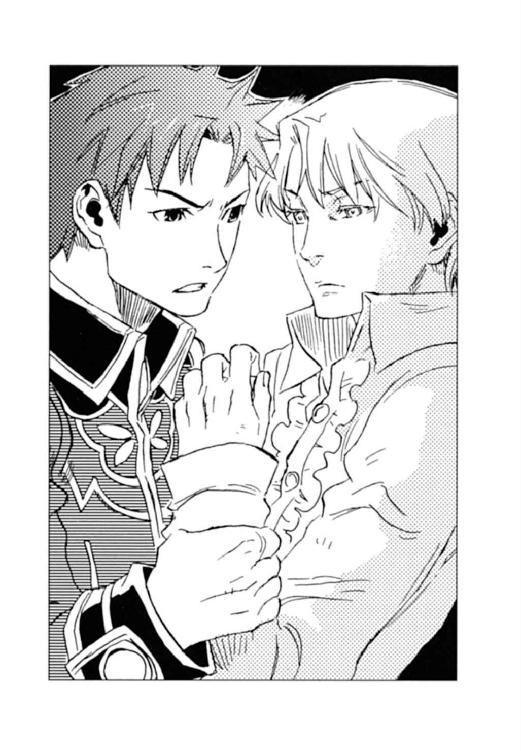
「この手は何だよ!!」
キースは答えず、視線を逸らす。
「まさか......」
カイルは片手でキースの腕をつかんだまま、もう片方の手で彼のシャツの袖をまくった。手首に巻かれた銀ねず色の腕輪が真っ黒く変色している。
アッシュは愕然と目を瞠る。
『それって、手まで〈精〉されないように着ける腕輪でしょ......？』
手の平に埋まった玲石で〈精〉を行う者は、余分な反応を吸収する特殊な腕輪を手首に着ける。ムスベルの民の知恵と伝統なのだと、ディオンが〈光〉の玲石を移植された時にも、同じ腕輪を与えられた。それがこのように黒ずむということは──。
「〈闇〉の玲石の反応を吸収しきれなかったのか？ お前の手が〈精〉されて、お前の体はどうなっちまうんだ？」
カイルはキースの手首を握った。手首は、巻いたカイルの指が余るほど瘦せ細っていた。
「わからない。それは教えられなかった。私が幼すぎて忘れてしまったのかもしれないが」
キースはカイルを押しやり、手首の縛めから逃れた。
「そんな他人事みたいなこと言ってるんじゃねえ！」
カイルは声を荒らげたが、
「私の予想では、明日の朝にはクラウド将軍が〈蒼い鷹〉を率いてここへやって来る。急がなければならない」
キースは冷徹な声で答え、緩んだ腕輪の金具を締める。
「その前に死んだらどうする!?」
──〈闇〉の玲石は人の命を喰らう。
カイルはキースの父が早世した真の理由に思い当たった。〈闇〉の玲石を使ったからだ。
「大丈夫だ。私の父は百体近くの黒雷獣を〈精〉したが、それから三年生きた」
「......冗談言ってんじゃねえぞ」
恫喝するように低い声でカイルは言い、キースの胸ぐらをつかんだ。
「大丈夫だと言ったはずだ。放せ」
冷たく低い声だった。彼の〈闇〉の玲石が埋まった手の平が、カイルの顔に向けられる。
邪魔をするなら容赦しない──。向けられた手の平が暗にそう言っていた。
アッシュは総毛立ち、馬が怯えて嘶いた。
骨と皮ばかりに瘦せ、極限まで疲労しているにもかかわらず、キースからは身震いするほどの威圧感が発せられていた。
目を見開き、カイルはキースの指の間から彼を見つめる。カイルは怯えてはいなかった。ただ、彼が自分に対して本気で向かって来たことに驚いていた。
今までキースは誰かと全力で戦ったことがない。絶対的な強さは、全力を必要としない。宿敵ベニートとの一騎打ちでさえ、最終奥義と言える闇の渦の〈精〉は手加減した。本気で放てば、街の一つは軽く吹っ飛んでしまうからだ。
しかし、その彼が今、自分に本気で挑んでいる。そうしなければ勝てないと彼は知っているのだ。
限界が来ている──。カイルはそう思った。
「死なない。──まだ死ねない」
キースの銀がかった薄青の瞳がカイルを射貫く。
「頼む、やらせてくれ」
ここでユーミールの起動を諦めることはできない。養父を裏切り、〈蒼い鷹〉を捨て、帝国を敵に回してまでこの地にやって来た意味が失われてしまう。キースの瞳はそう語っていた。カイルの唇が微かに震える。言いたいことも、ぶちまけたい感情も山ほどあるが、それを必死で吞み込んだ。
しばらくの沈黙の後、
「......俺にできることは何だ？」
カイルはキースの胸ぐらから手を離し、掠れた声で言った。キースもカイルに向けていた手の平を下ろす。
「側にいてくれ。これが動き出したら倒れるかもしれん。それから、その後で極上のコーヒーを──」
「わかった。任せとけ」
カイルは無理矢理笑みを作った。
脊髄の修復を完了したのはそれから約一時間後のことだった。
黒雷獣の皮膚とも言える外殻を接着した途端、キースはユーミールの背中からずるずるとくずおれる。
付き添っていたカイルがキースを抱き留め、彼を抱いたまま軽々とユーミールの背から飛び降りた。
キースはアッシュが用意しておいた寝袋に、仰向けに横たわる。
「ユーミールの......鱗を取り付けて、体温を上げてくれ」
閉じた目の上に腕を乗せ、キースはひどく弱々しい声で言った。
「了解」
カイルは険しい表情だったが、何も言わずに従った。
アッシュはキースを介抱してやりたいと思うが、三メートルの距離からできることなど何もない。
「鱗は付けたぞ。体温はどうやって上げればいい？」
ユーミールの背中の上でカイルが問う。
「直火で炙れ」
キースの返答に、カイルとアッシュは瞠目して目を見交わしたが、考えてみればカノン砲の直撃を浴びようが、〈死の光と熱〉に曝されようが壊れない鱗なのだ。炎ぐらいで燃えはしない。
カイルは、分解して持参して来た小型の迫撃砲を組み立て始めた。直径二十センチ近く、長さは一メートル以上にもなるその銃器は、射程距離が従来の擲弾筒の倍以上もあるカイル自慢の作品である。
『ちょ、ちょっと、大佐。それで炙るんですか？』
アッシュは慌てた。
「緊急避難場所の墓場だ。火事にはならねえだろ」
カイルは迫撃砲を組み立てながら手早く改造した。更に、特製の油を〈精〉して小型のタンクに詰め、発射口に接続する。
「下がってろよ」
カイルは迫撃砲を肩に担ぎ、引き金を引いた。
噴射された油に宙で火が点き、青白い炎が凄まじい勢いでユーミールに叩きつけられた。
馬が驚いて高く嘶き、棹立ちになる。
『そこまで思いっきり炙らなくても......』
アッシュはカイルの後ろに座り、相変わらず豪快な大佐の所行に半ば呆れる。
キースも半身を起こし、青い炎に包まれるユーミールをじっと見つめた。
閉め切った石室の気温が次第に上昇する。天井が高く、あちこちに通風口があるとは言っても、蒸し焼きになるんじゃないかとアッシュは気が気ではない。
ユーミールの黒い鋼の鱗が、赤銅色に変わった。閉じていた目蓋が少しずつ開いていく。
カイルはユーミールを見つめたまま、炎の噴射を止め、迫撃砲を下ろした。
キースも寝袋から起き上がり、ふらつく足を踏みしめながらカイルの隣に立つ。
油の残滓のせいか、ユーミールの鱗にはまだ炎がまとわりついていた。
虚ろだった目に光が灯る。
アッシュは青白い炎の中の怪物から目を離すことができなかった。相手の技量を見切り、本能が「逃げろ」と告げている。しかし、恐怖に搦め捕られた体は震えるばかりで、足に力が入らない。
馬は半狂乱だった。首を前後左右に振りたくり、手綱を引きちぎらんばかりの勢いで暴れる。
ユーミールの漆黒の瞳が、正面に立つカイルとキースの姿を捉えた。
耳まで裂けた口が開く。唇の隙間から尖った歯が覗いた。
『我を目覚めさせたのはそなたらか』
地獄の底から響くような声だった。
カイルは、超生き物恐怖症の彼が今にも倒れるのではないかと構えていたが、キースは倒れなかった。体力と気力が限界を超え、五感がほとんど麻痺していたのかもしれない。
「そうだ、ユーミール」
キースは怜悧な瞳でユーミールを見つめ返す。
「私はキース・エルネスト・ムゼール──。ジェラール・エルネスト・ムゼールの息子だ。憶えているか？」
彼は、両の手の平をユーミールに向け、〈闇〉の玲石を見せた。
『キース・エルネスト・ムゼール？』
ユーミールは一瞬目を細めた。続いて唇の端をグッと持ち上げる。
『そうか、キース。ジェラールの息子とな』
闇に沈む王家の墓に、青い炎をまとわりつかせた怪物の哄笑が響き渡った。
「あれが王族の墳墓じゃ」
デンゼルが前方の丘を指差した。
夜明けと共に雨は止んだが、空を覆う雲は厚く、砂礫の荒野は灰色に霞んでいた。吹きすさぶ砂交じりの風が頰を叩く。
「間に合っているといいけど......」
馬を駆り、ディオンはデンゼルの隣に並ぶ。彼らの後ろには、モーリスやフェルナンド、〈蒼い鷹〉隊員を乗せた四台の馬車と十頭の馬が連なっていた。
悪天候を押して歩を進めたが、デンゼルの計算によると、何のアクシデントもなければキースたちは三日前の夕刻に到着しているという。
「そんなことまでわかるんですか？」
フェルナンドは驚いたが、
「それくらいのことがわからんでは、戦には勝てませぬゆえ」
歴戦の将は事も無げに答えていた。
デンゼルの示した場所は、言われなければそれと気付かず通り過ぎてしまいそうな、普通の丘だった。丘の南斜面のふもとでディオンは馬を止め、他の隊員たちもそれぞれ馬車や馬から下りて集まって来る。
「中将たちより早く到着できたようですね」
白い砂礫が降り積もった丘を見上げて、モーリスは表情を和らげる。
「それはわからんぞ。なにせあのキースのことじゃ」
デンゼルはフンと鼻を鳴らし、ゼノン中佐に南斜面中央の砂礫を除けるように命ずる。
ディオンを含め〈蒼い鷹〉隊員は、風を〈精〉して指示された場所に当てる。厚く積もった砂礫は、雨をたっぷりと吸い込んで重く、墳墓の入り口を露出させるのに数分を要した。
シュネーが石段を駆け上がり、
『中将たちの匂いはしないよ』
クンクンと入り口付近を嗅いだ。
シュネーに続いてディオンたちも階段を上る。
「錠前もあの時のままじゃな」
デンゼルは石の扉に付いた鉄輪と錠前に触れた。どちらにも茶色い錆が付着している。
「鍵は？」
「そんなもんあるか。あるとすれば陸軍本部じゃろ。構わん、ぶち切れ」
「そんなことだろうとは思ったけどさ」
デンゼルの場合、戦略以外のところはかなり大雑把なのである。彼の部下は相当苦労したに違いない。祖父が早々に退役してくれたことを幸いに思いながら、ディオンは錠前を〈精〉で焼き切った。
石の扉を開け、暗い通路をカンテラで灯しながら一行は墳墓の奥へと進む。
石室最奥の祭壇前に、巨大な鋼の獅子の胴体は静かに横たわっていた。
「あった──」
ディオンたちはホーッと息をついた。
間に合ったのだ。ユーミールの足の回収に手間取っているのか、または連日の嵐に足止めを食ってしまったのか、とにかくキースたちはまだこの墓に到着していないのだ。
「馬車と馬を隠せ。中将たちを待ち伏せるぞ」
士気高揚した隊員たちに、ゼノンは素早く指示を出す。
隊員たちは「了解」と一斉に動き始め、ディオンとフェルナンドも駆け出した。
「よかった。取りあえずはユーミールの復活を阻止できたね」
「ああ。中将を説得して、議会にバレないうちにこっそり部品を元の場所に返してしまおう」
黒雷獣に関する事項は国家機密だ。ユーミールの部品を持ち出したことが公になれば、軍法会議にかけられてしまう。ましてユーミールを復活させたとなれば、国家叛逆罪を問われて直ちに銃殺刑だ。しかし今ならまだ隠蔽工作が可能である。
「中将たちに会ったら、なぜこんなことをしたのか聞きたいな。もしもムスベル人の自治領が必要とか、そういう理由なら、僕が何とかできるかもしれないし」
「そうだな......」
何で黙って中将と行ってしまったのか、アッシュにも問い質したい。
（ガキのヤキモチみたいだって、わかってるけどさ）
アッシュが自分よりも中将を選んだことが、ディオンには少し悔しかった。
石室から通路へ出ようとした時、
「待て！」
デンゼルの声に、二人は振り返る。
「じいちゃん、どうしたんだ？」
ディオンたちは再び祭壇前に駆け戻った。他の隊員も集まってくる。デンゼルはユーミールの周囲の石畳をカンテラで照らしていた。
「キースはここに来た」
唸るような声音に、ディオンたちは「え？」と目を瞠る。
「足跡が残っとらん」
「足跡がないって、中将たちが来てなけりゃ足跡がないのは当たり前じゃないか」
ディオンは自分の足元を見下ろす。床には、自分たちの靴底について運ばれた湿った砂礫がこぼれていた。
「二十六年前の足跡はあってもよかろう」
デンゼルの言葉に、隊員たちはハッと顔を上げる。
「あの日も雨が降っておった。ユーミールをこの石室に運び入れるのに五十名の兵士を使い、石室は砂だらけになってしもうた。敵国とは言え、王家の御陵を汚したままにしておくのはよくないと思い、床を掃き清めさせたのじゃ」
「掃除したのでしたら、足跡は残らないでしょう？」
フェルナンドも床を見下ろす。
「いや、箒で掃いたんじゃこんなにきれいにならない。石畳の溝に砂が残って、そこに靴跡が残る。ここ、〈精〉で風を起こして砂を払ってる。中将は、自分たちの足跡を消す時に、二十六年前の足跡も一緒に消しちゃったんだ」
ディオンは床に膝をつき、石畳を指で拭った。指には湿った砂礫は付いたが、乾いた砂や埃の感触はなかった。
「猟師をやっとらんかったら、儂もそんなことには気付かんかったじゃろうが」
退役後、デンゼルはビヴロスの山中で獣の足跡を追っていたのである。
「では、このユーミールの胴体は──」
モーリスが足早に祭壇前に横たわる獅子の胴体に歩み寄り、首や足の付け根の切り口を子細に観察した。
「......本物じゃない。よくできているけど......」
「何てことだ」
〈蒼い鷹〉たちは青ざめた。
モーリスは「確かめてみよう。ディオン、手伝って」と、手袋形の〈精炉〉に玲石を貼り、胴体の鱗を外し始めた。
ディオンは父と一緒に鱗を外す。偽黒雷獣を覆う鱗もその下の外殻も、色や手触りは本物とそっくりだった。しかし、腹部を切開すると中は全くの空洞だ。
「やっぱり──」
ディオンが手の平の〈光〉の玲石で中を照らすと、隅に大型のトランクが置かれていた。
「このトランク、〈死の光と熱〉の〈精炉〉が入っていたやつだよな」
ディオンはトランクを腹の中から出して蓋を開けた。
中には、〈死の光と熱〉の〈精炉〉はなく、代わりに宝石箱が入っている。宝石箱の蓋には、極彩色で絵付けされたタイルが敷き詰められていた。
「ユーミールの心臓を入れた宝石箱だ......」
フェルナンドはうわずった声でそれを手に取った。
「開けてみてくれ」
ゼノンの指示で、フェルナンドは宝石箱の解錠に取りかかった。タイルを一枚外し、空いた場所に他のタイルをスライドさせる。正しい手順で絵を組み立て直せば蓋が開くという、一種のパズルのような仕組みだった。この手順を知っているのは、この宝石箱を造った王宮付きの〈精師〉と現皇帝、フェルナンド、そしてキースだけである。
フェルナンドを取り囲み、ディオンたちは固唾を吞んでじっと見守った。十数分を要し、ようやく宝石箱が開いた。
宝石箱の中は空だった。〈蒼い鷹〉隊員から落胆の声が漏れる。
「急げ。キースたちの跡を追うのじゃ」
デンゼルは足早に出口に向かい、ディオンたちもそれに続く。
「偽の胴体も宝石箱も、ここから離れる時間をできるだけ稼ぐために残しておいたんだろうね」
暗い通路を駆けるフェルナンドの声は暗い。
『匂いも消されてるのに、どうやって跡を追えばいいの？』
シュネーはディオンの肩に跳び乗り、深い吐息をつく。
キースはこちらの手の内を全て知っているのだ。胴体が残されていればディオンがそれを検分することも、宝石箱があればフェルナンドが開けてみることも、そして少しでも匂いが残っていればシュネーが嗅ぎつけてしまうことも──。
「今までの任務の中で最大最強の相手だ」
ディオンは拳をグッと握った。
『我は空腹である。そこな小さいの。朝餉はまだか』
『私は「小さいの」じゃありません。アッシュという名があります。いい加減憶えてください』
『そうであったな。では、アッシュ、我は朝餉を所望だ』
『ユーミール閣下。何度も申し上げますが、閣下は先程十キロのコーンフレークを召し上がりました』
『はて、そうだったか？』
追い風に煽られながら、アッシュとユーミールは同じ会話を繰り返していた。
時折稲妻が奔る厚い雲の下、砂礫の荒野をユーミールはのし歩き、アッシュはその足元を速歩で進む。その後ろを、怯えた様子の馬がキースとカイルを乗せた軽装馬車を引いていた。軽装馬車はユーミールの足を運んだ荷馬車をカイルが造り直した物である。
『で、どこまで行けばよいのだ』
『できるだけ遠くまで。少なくともお昼までは歩かなければなりません。それもさっき申し上げましたよ』
今頃、デンゼル率いる〈蒼い鷹〉は、御陵にある胴体を検分しているだろう。偽物だと気付かれるのは時間の問題だ。今のうちにひたすら風下に向かい、御陵から離れなくてはならない。
『我の物忘れはひどいか？』
ユーミールの声音が少しばかり悲しげだったので、アッシュは彼の顔を見上げた。
『その......多少は』
遥かな高みにある黒雷獣の吊り上がった目が、困ったように自分を見ている。
（こんな大変な状況なのに、何度も同じこと言うからつい苛々しちゃったけど......）
彼は〈闇〉の玲石によって二十六年の眠りから目覚めさせられたのだ。記憶障害は彼のせいではない。
『それは詫びよう。だが、そのようにプンプンしていては可愛い顔が台無しだ。機嫌を直せ、小さいの』
思わず脱力してしまう。後ろで聞いていたカイルがクスクスと笑っていた。
『これでも、犬としては大型なんです。それから、可愛いなんてお世辞を仰っても無駄です。鏡に映った自分の顔にギョッとすることもあるぐらいですから』
『世辞ではない。少なくとも我よりは小さいし、我よりは可愛いぞ』
『......御自分と比べないでくださいませ』
何だか頭痛がしてきた。
（一国を滅ぼした黒雷獣の頭領とは思えないわ）
ユーミールが目覚めた時には恐怖で腰を抜かしてしまったが、凄まじいのは彼の外見と戦闘力だけだったようだ。
『それにしても空腹だ。朝餉はまだか』
『ですから──』
同じ会話を繰り返し、正午を少し回った時刻に浅い谷を見つけ、その底に下りて昼食を摂ることにする。
河岸の頂が風に削られて谷底に砂礫が積もり、傾斜は緩やかだったが、かつては入り組んだ深い渓谷だったのだろう、その谷は急な曲線を描いていた。底に下りると前後左右の視界が全く遮られてしまい、敵の接近に気付きにくいという難点はあるが、ユーミールの巨体を平地に曝すよりはましである。
カイルはキースを座らせると、早速昼食の支度に取りかかった。火を起こすと、彼は源石から巨大な鍋を造り、水を張って火にかける。
『ユーミール閣下。もうすぐお昼ご飯になりますからね』
アッシュもザックから食材や食器を咥えて出す。
『大丈夫か？』
ユーミールは荒い息をつきながら斜面に寄りかかるキースに声をかけた。
「ああ、先刻よりはだいぶ楽になった」
『無理をさせてしまったな』
〈闇〉の玲石が〈精師〉の命を削ることをユーミールは知っている。
「私の意思でやったことだ」
キースは一度目を伏せ、ユーミールを見上げた。
「それに、無理をさせているのは私の方だ」
『何の。一度は滅びた身だ。それを思えば大したことではない』
ユーミールは耳まで裂けた口を一層吊り上げた。微笑んだつもりらしい。
『あの時、そなたはまだ三つの幼子だったというに、来てくれたことを、我はまことに嬉しく思ったぞ』
目覚めた時の哄笑はそういう理由だったらしい。
『だが、あの小さいのに──』
ユーミールは、いそいそとシートの上に食器を並べる黒犬に視線を移す。犬は、耳をピクリとさせて、『小さいのじゃありません。アッシュです』と、歯を剝いた。キースはゾッと鳥肌を立てたが、ユーミールは『ういやつよの』と微笑する。
『あれに迷惑をかけずに事を済ませられればよいのだが......』
呟くユーミールにキースは応じなかった。
ユーミールには、残された時間が僅かしかない。彼は〈闇〉の玲石で命を与えられた物が辿る運命を知っている。そして、それを補完するために、〈光〉の玲石で造られた黒い犬が連れて来られたことも──。
そんなことにはならないと言えば噓になる。仕方がないと言えば、二頭の造られた生き物に残酷な事実を突きつけることになる。だから何も言えない。
大鍋をかき回しながら、キースと最後の黒雷獣との会話に耳を傾けていたカイルも、黙って鍋の中身を見つめている。ユーミールの言う「あれ」というのが、自分のことだと承知しているアッシュも、聞こえないふりをしていた。
重い沈黙の中、焚き火の弾ける音だけが響く。やがて鍋がコトコトと音を立て、クリームスープの匂いが漂い始めた。カイルはそれを皿に盛りつける。
『さ、閣下。ご飯ですよー』
アッシュは敢えて明るい声でユーミールを振り仰いだ。シートの上には人間用の皿と、普通の犬用の餌皿と一緒に、たらいのような容器が置かれ、白い湯気を立てていた。
『うむ。よい匂いだ』
ユーミールが皿に近付くと、その分だけキースは座る場所を移動した。
『どうした、キース。食欲がないのか？』
キースは「気にしないでくれ」といつもの無表情で答えたが、青白い顔は一層青ざめていた。
伝説の悪魔のような顔の隣では、キースでなくても食欲が失せる。
『食べねば体が保たぬぞ』
言いながら、ユーミールはたらいのスープを巨大な舌でピチャピチャと舐める。その音はキースに、暴走した黒雷獣が人の生き血をすする光景を思い起こさせ、彼はだらだらと冷や汗を流して口元を押さえた。
その間に、カイルは熾火で大量のパンを温めた。ユーミールはあんぐりと、尖った歯の並ぶ口を開け、カイルはそこにパンを放り込む。御陵でキースがユーミールを〈精〉している間に作っておいた物だが、三日がかりのパンは一瞬でユーミールの腹の中に消えた。
『美味であった。軍にいた頃は、栄養剤のような飲み物しか与えられなかったのだ。このような食事ができるだけでも、甦った甲斐があるというものだ』
ユーミールは満足そうに目を細め、唇の周りに付いたスープを舌で舐め取った。
「悪いが、今夜からはその栄養剤だぜ。持ってきた食材はこれで終わりなんだ」
カイルはスコップのような杓子を鍋の底に投げ置いて、肩をすくめる。
『それは残念』
人間の二週間分の食料を一日で食べ尽くしたユーミールは、悲しそうに空っぽの鍋を覗いた。
キースも何とか一皿分のスープを飲み終え、カイルとアッシュは急いで片付けにかかった。
「ここがどこかわかるか？」
キースはムスベルの地図を広げ、ユーミールに見えるように地面に置いた。
『北緯四一度五七分、東経三七度四三分。王都南のナシュ渓谷だ』
ユーミールは即座に答えた。彼の視線は地図ではなく、厚い雲を透かして太陽に向いている。
「さすが、黒雷獣軍団の指揮官──」
カイルは目を剝いた。ユーミールは大陸の地理を全て把握している上、超常的な能力で位置を測ることができるらしい。
「記憶は損なわれていないようだな」
『今朝何を食べたのか、もう忘れてしまったが、残念ながら二十六年前のことは克明に憶えておる。我らを蝕んだ狂気も、我らが滅ぼしたこの国のことも──』
ユーミールは苦い笑みを浮かべた。
「ならば、説明の必要はあるまい」
キースは地図をたたみ、凍った海のような瞳をユーミールに向けた。
「もう一つの螺旋の玲石はどこにある？」
ディオンとフェルナンドは馬を駆り、暮れ始めた砂礫の荒野を疾走していた。ディオンの馬の首には、シュネーが四本の足を突っ張ってしがみついている。
「暗くなってきたね」
フェルナンドは、右方の谷を見下ろす。谷底は既に闇に覆われていた。
「ああ、雨が降って来そうだな」
ディオンは雲が重く垂れ籠める空を見上げた。雲間には頻繁に稲妻が走っている。雨になればシュネーの鼻も使えなくなってしまう。
王家の墳墓に、キースたちの行方を示す手がかりは何もなかった。墓の周辺の匂いは消され、足跡も残っていなかったのである。しかし、デンゼルは、「風下じゃし、巨大なユーミールを連れて、見通しのよい場所を歩くはずはなかろう」と、彼らがナシュ渓谷へ逃げ込んだと予想した。かつてナシュ渓谷と呼ばれていた場所は、王都南を東西に横切る蛇行した細長い窪地だった。一行は近くに馬車を止め、〈蒼い鷹〉隊員たちは手分けして捜索にかかったのである。
「仕方がない、戻るか」
ディオンは手綱を引いて馬の首を返した。日没を合図にデンゼルたちの待つ馬車へ戻ることになっているのだ。
『待って。今、中将たちの匂いが──』
シュネーが馬のたてがみにしがみついたまま、谷底の方に鼻先を向けた。
「いたか!?」
『ううん、姿は見えない。匂いだけ』
ディオンとフェルナンドは、シュネーの指す谷底へ馬を走らせる。
『ユーミールらしいおっきな物の匂いもある。ここでご飯を食べたみたいだね。クリームスープの匂いがするよ』
馬から飛び下り、シュネーは砂礫の匂いを嗅ぐ。墳墓から二十キロ近くも離れたので、キースたちは匂い消しの手間を省いたのだろう。
「どっちに向かった？」
『匂いは西に続いているよ』
「将軍に知らせて来る」
フェルナンドは斜面を駆け上がった。照明弾などを打ち上げれば、キースたちに接近を気付かれてしまうので、彼らを発見したら一人が尾行し、もう一人は馬車に戻って報告することになっていた。
ディオンは逸る気持ちを抑え、前方の薄闇に目を凝らしながら西に向かって谷を駆ける。
『アッシュは、どうしてボクたちから逃げるんだろうね......中将がアッシュを連れ出したのは、アッシュの体がユーミールの〈精〉の参考になるからなんでしょ。ユーミールの復活に成功したんなら、もうアッシュの役目は終わったはずだよ』
肩に乗ったシュネーが悲しそうに呟いた。
『黙って宿舎を出て行ったのは、中将がみんなに内緒にしてくれって頼んだからなんだろうけどさ。ちょこっとぐらい、戻って来て何か言ってくれたっていいのに......』
どんな理由があるにしても、アッシュが自分たちよりキースを選んだことが悲しいのだ。ディオンも思いは同じである。
「〈闇〉の玲石は〈精師〉に危険を及ぼすっていうから、中将の具合が悪くなって、放っておけなくなったのかも......」
『だったら、尚更ボクたちに知らせてほしいよ』
シュネーはホワホワの毛に埋まった黒い目を、泣きそうに歪めた。
やがて、背後から数騎の蹄の音が追って来た。振り向くと、フェルナンドを先頭に、ジェイダとユアンを含む七名の〈蒼い鷹〉が近付いて来る。
「将軍たちは後から来るよ。前後を囲んで逃げ道を塞ぎ、一応は投降するように説得しろって」
ディオンの隣に馬を並べ、フェルナンドは言った。
「いきなり私たちに攻撃してくるとは思えないけど、ユーミール相手に勝てるわけないし、取りあえずは事情を説明してもらわなくちゃね」
ディオンのすぐ後ろに馬を付けたジェイダの声は、心なしか明るかった。彼女は〈闇〉の玲石を使ったキースの安否を誰よりも心配していたのだ。
既に辺りは闇に閉ざされ、ディオンたちはカンテラをかざして更に追う。
一時間近くも馬を走らせただろうか、
『いた──』
シュネーの目が暗闇の向こうに、巨大な鋼の怪物とその隣を走る軽装馬車を捉えた。
口の周りに泡をこびり付かせている馬に拍車を入れ、ディオンたちは砂礫の谷を駆ける。
一方で、ユーミールの足元を走っていたアッシュも、背後から迫る八騎に気付いていた。
『ディオンたちだわ──』
「もう来ちまったか」
御者台のカイルは馬に鞭を入れる。
「御陵の工作も、逃走経路も看破されたか。さすがはデンゼル・クラウド将軍」
カイルの隣で、前方の闇を見つめるキースの表情は変わらない。
『馬よ、頑張れ』
鋼の体とは思えない身軽さで走るユーミールは、馬を叱咤激励したが、所詮一頭の馬が引く馬車と単騎とではスピードが違う。〈蒼い鷹〉たちの蹄の音は次第に大きくなっていた。
「可哀想だが、足止めさせてもらうか」
カイルは「持っててくれ」と手綱をキースに渡し、御者台の後ろに積んでおいた迫撃砲を組み立てた。そして御者台に立ち、谷の壁面に狙いを定める。
その様子を、闇を透かしてシュネーが見ていた。
『大佐が、谷を崩すつもりだよ！』
「こうなったら仕方がない」
ディオンは手にしていたカンテラをシュネーに咥えさせ、黒い指無し手袋に玲石を貼った。
闇に閉ざされた谷底を、時折雲間を走る稲妻が照らす。
一瞬垣間見た彼らの位置と速度を計算に入れて、ディオンは手の平から衝撃波を放った。同時にカイルも迫撃砲を撃っていた。
砲弾がディオンたちのすぐ前方の壁で爆発した。馬は驚いて棹立ち、大量の砂礫が降り注いだ。崩れた砂礫がディオンたちの前に立ちはだかる。
谷に静寂が落ちた。ディオンたちは馬を下りて、積み上がった砂礫を駆け上がる。
開けた視界の先に、立ちすくむ黒雷獣の巨大な影があった。ディオンの撃った衝撃波もキースたちの前進を阻んでいたのだ。
閃く稲妻が、御者台のキースとカイル、そして馬の足元にいるアッシュの姿を照らし出す。
彼らはこちらを見ていた。
「中将......アッシュ......」
御陵でキースがユーミールを組み立てたことはわかっていた。しかし──。
（本当に復活させてしまうなんて......）
一発の〈死の光と熱〉で何千人もの命を奪う生ける巨大兵器、黒雷獣──。
黒雷獣のためにこの大地は砂礫と化し、キースは故国を失ったのではなかったか。それが今、キースはその怪物と共にいる。傍らにアッシュを従えて──。
それまで、彼らには何か深い理由があるのだと自分自身に言い聞かせていたが、その光景を目の当たりにした途端に、ディオンの中で何かが弾けた。
「アッシュ!!」
思わず駆け出そうとした時、
『ディオン、来ちゃだめ！』
アッシュが叫び、谷の上を見上げた。
「え──？」
ディオンは立ち止まり、アッシュの視線を追う。
谷の南側の頂に百騎近くの影がずらりと並んでいた。数本の松明が掲げられ、彼らの軍服が濃灰色であることを知らせる。
「ムスベルの秘密組織──!?」
〈精師〉軍人の手の平に埋まった玲石は〈蒼い鷹〉にも向いていた。ディオンたちは愕然とムスベルの騎馬軍団を見つめる。
「待っていた、アーベルン中将。いや、キース・エルネスト・ムゼールと呼ぶべきかな」
頭上から降ってきた聞き覚えのある高い声に、ディオンは自分の耳を疑った。
「噓だろ......？」
ムスベル軍の中央から、真っ白い馬が一頭進み出た。松明の明かりの下に、鞍上の人物が姿を現す。騎手は、炎よりも赤い髪の少年だった。
「シーグ!!」
彼はムスベルの軍服を身に着けていた。しかも、大将格の階級を表す、華やかな房飾りの肩章がついたマントを羽織っている。彼の後ろには同じく濃灰色のマントを着けたハーラルが影のようにひっそりと付き添っていた。
「何でお前が......」
シーグはムセイオンで論文に取り組んでいるはずではなかったか。銀単号の改造に力を貸してくれた彼が、なぜムスベル軍の中にいるのか──。
「あれは、ムスベル王の......」
フェルナンドの目は大きく見開かれ、肩章の刺繡に注がれていた。
シーグの碧玉の瞳がディオンたちを見下ろした。
「そうだよ。僕はムスベル王に即位したんだ」
彼が何を言っているのか、理解するまでに二呼吸ほどの時間がかかった。
シーグフリード・アレクサンドル・ヴォルジェ──。彼は、神の手を持つと言われたヴォルジェ大神官の孫だ。ヴォルジェ公爵家がムスベルの第三王位継承権を持つと教えてくれたのは、フェルナンドだったろうか。
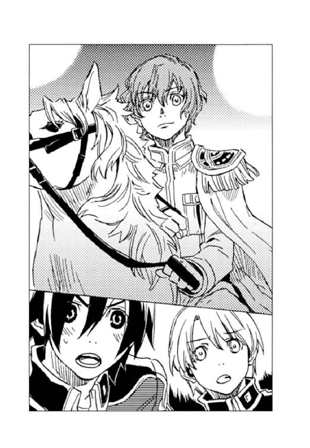
「革命により、連邦に囚われていた大勢の捕虜が解放された。民のためには国が必要だ。けれども、ムスベル王も王子たちも、もういない。当時、第二王位継承権を持っていた王弟も」
シーグはユーミールの前に立つキースに目を移した。
「王弟の息子キースは裏切り者だし」
「王弟の息子──!?」
ディオンたちは一斉にキースの方を向いた。彼の表情は変わっていなかった。シーグを見上げる怜悧な瞳を、松明の薄い明かりが照らしている。
キースがただのムスベル人孤児ではないと、ディオンは何となく感じていたが、名門アーベルン家がキースを養子に迎えたのは、彼が王家の血を引いていたからなのだ。
「だから、第三王位継承権を持つ僕がムスベル王になったんだ」
熱を帯びたような碧の瞳が、ディオンを見つめる。
「この者たちは、創世神親衛隊。君たちがムスベルの秘密組織と呼んでいるのは、この親衛隊の一部に過ぎない。親衛隊幹部は、かつて王家と神官に仕えていた強者の〈精師〉だ。〈蒼い鷹〉の敵う相手じゃないよ」
彼は赤い唇に冷笑を浮かべた。
「わかる？ 邪魔をするなって言っているんだよ。僕個人は君に恨みはないし、かつては机を並べて勉強した仲だもの。大人しく引き下がってくれれば、手出しはしない」
混乱したディオンの頭に、ムセイオンでシーグと張り合って〈五賢者の不思議〉を解いたことや、連邦の廃城で共にベニートと戦った映像がよぎる。
（何でこんなことになったんだ......）
シーグがヴォルジェ家の家名を誇りに思い、ムスベル人の境遇を憂えていたことは知っていた。しかし、こんな形で相対することになろうとは、思ってもみなかった。
シーグの瞳は、小山のように黙してたたずむ黒雷獣に移る。
「ユーミールよ。ムスベル王シーグ・アレクサンドル・ヴォルジェの名において命ずる。我が軍に戻り、再びムスベル王家に仕えよ」
甲高い少年の声が谷にこだました。遠雷がその声に重なる。
ユーミールの首がゆっくりと上がった。ディオンたち〈蒼い鷹〉にも、ムスベル軍の兵士の間にも緊張が奔る。
耳まで裂けたユーミールの口が静かに開いた。尖った歯が隙間から覗く。
『もったいなきお言葉──』
地鳴りのような声だった。ディオンは黒い指無し手袋を外し、固唾を吞んで次の言葉を待つ。
『なれど今は従えませぬ』
親衛隊がどよめいた。ディオンも思わずフェルナンドと目を見交わす。
「僕が王では不服なのか？ 裏切り者のキースを王と認めているのか？ まさか、鶏の雛みたいに、甦らせたキースに懐いたんじゃないだろうね」
シーグは幼さの残る眉をひそめた。
『ヴォルジェ大神官は偉大な〈精師〉でござった。陛下の即位に我が異を唱えるはずがあろうか。しかし我には新しき王に仕える資格がござらぬ』
「黒雷獣が国を滅ぼしたことを言っているのか？」
『御意』
「それはお前のせいじゃない。僕が赦す」
『有り難き幸せ。なれど御許に参ることは御容赦くだされ』
「キースには従っても、僕には従わないと言うのか！」
シーグの頰に朱が奔ったが、ユーミールは黙って頭を垂れた。
「それなら、無理矢理にでも連れて行く」
彼は手袋形の〈精炉〉に玲石を貼った。手の平の間に淡い光の弾が凝る。
「まずい。シーグはユーミールを操るつもりだ」
ユーミールの額に埋まった血の玲石にあの光が当たれば、ユーミールはシーグの言うがままになってしまう。
キースの手が上がった。手の平に埋まった〈闇〉の玲石がシーグを捉える。カイルの肩には迫撃砲が担がれていた。
親衛隊から殺気が迸った。彼らの手の平が一斉にキースとカイルに向く。
しかし、どちらも攻撃を仕掛けることはできなかった。
ディオンの〈光〉の玲石が、ユーミールの額に向いていたからである。
親衛隊は〈闇〉の玲石の恐ろしさも、〈光〉の玲石の威力も熟知していた。下手に攻撃すれば、新しい王とユーミールの両方を失う。
一方、キースは古参のムスベル人兵士の実力を知っている。簡単には逃げられない。牽制のつもりでも、攻撃すれば戦闘が始まる。〈蒼い鷹〉を巻き込むことは避けたかった。
（どうしてフェルナンドまで連れてくるのだ。皇太子だということを忘れているのか）
キースの表情は変わらなかったが、実はかなり腹を立てていた。
そしてディオンも往生していた。
（ここで手を引いたら、親衛隊が攻撃を始めて、悪くすればユーミールはシーグのものになってしまう。けど、本当に血の玲石を壊すわけにもいかないし）
血の玲石は脳に直結し、音声による外部刺激を伝える役割を果たす。透明な特殊装甲に覆われ、生半可な攻撃では壊れないようになっているはずだが、万一傷でもつけてしまったらユーミールが制御不能になる可能性は高かった。
それぞれが動けず、大気が凍り付いていくようだった。不気味な静寂が支配する谷に、遠雷が微かに響く。
膠着状態を破ったのは、風に乗ってやって来た薔薇の香りだった。
「この匂いは──」
そう思った途端に、視界が銀の霧で埋まった。
親衛隊を振り仰ごうとしたが、もう首どころか指の一本も動かせなかった。
「何だか、もの凄い場面に遭遇してしまったな」
飄然とした声が頭の奥で響いた。
霧の中に、黒鹿毛の馬に乗った騎士の影が浮かび上がる。彼は、羽根飾りの付いた銀のつば広帽子を斜めにかぶり、目の周りを覆う銀の仮面を着け、銀のマントをはためかせていた。
「夢幻貴族参上──」
彼は唇の端を吊り上げて、ニッと笑った。
「このような場合は、仕切り直すのが常套ではないかな」
夢幻貴族の銀の手袋から銀色の薔薇の花びらが渦を巻いて散った。
強い香りがディオンの鼻腔をくすぐった。幾多もの蹄の音が小さくなっていくのは、親衛隊が撤退しているのか、自分の意識が遠のいているのか。
「では、お休み。よい夢を──」
その声を合図にディオンはくずおれた。
短い眠りから覚めると、ディオンは地面に手を突き、慌てて辺りを見回した。
アッシュの姿はなかった。ユーミールもキースたちも、谷の南斜面の頂にいたムスベル軍騎馬隊の姿もかき消えていた。
〈蒼い鷹〉たちも順次意識を回復し、のろのろと立ち上がる。
例によって夢幻貴族は、「怪我はないかね、可愛いお嬢さん」とフェルナンドを抱き起こし、
「可愛いお嬢さんじゃないっ!!」
と、叱られていた。
「何で、アッシュを、中将たちを止めてくれなかったんだ!?」
思わずディオンは夢幻貴族の背中に向かって叫んだ。
「そうしたかったのだが、親衛隊を追い払うのに手一杯だったのだ。俺の霧がなかなか効かなくてね。いやはやムスベルの〈精師〉は手強い」
彼は振り返って肩をすくめる。
キースには夢幻貴族の霧が通用しない。すっかり技にかかった自分が夢幻貴族を責めるのはお門違いだ。
（ようやく会えたのに......）
ディオンはアッシュやユーミールがいた場所まで歩んだ。湿った風が砂礫を撫で、足跡を消していく。顔を上げ、祈るような気持ちで気配を探った。しかし、谷には風の音と、微かな雷鳴が響くばかりだった。シュネーが足元で『匂いも消されてる』と首を振った。
「行ってしまったわね......」
ジェイダがディオンの横に立った。
「ひどい人だわ。私たちの気も知らないで......」
彼女の目が、遠いキースの姿を追っていることをディオンは知っている。
「ああ」
喉にせり上がってくる熱い塊を吞み込み、ディオンは、暗闇の彼方を見つめた。
「君が連邦の首相、夢幻貴族か。いやはや噂には聞いていたが」
デンゼルは複雑な表情で、銀ずくめの騎士と握手した。
デンゼルたちの居室と会議室を兼ねた幌馬車には、夢幻貴族と〈蒼い鷹〉隊員たちが乗り込んでいた。
馬車の外は大粒の雨が落ちていた。闇は濃く、手がかりも全て消されていたので、ディオンたちはキースや親衛隊を追うことを諦め、一旦馬車に戻ったのである。
「よくここがわかったね、っていうか、何で来たの？」
濡れた金髪をタオルで拭きながらフェルナンドは尋ねた。
「ベルンハルトに借金を申し込んだところ、低金利で貸すからディオンの助っ人に行けと言われたのだよ。俺としても、可愛いお嬢さんが困っているのを放っておけなかったし」
と、夢幻貴族はベルンハルトがシーグの即位を知り、彼らを追って来たことを語った。
「それにしても、中将は何を考えて黒雷獣を復活させたのだ？」
夢幻貴族の目がディオン、フェルナンド、そして後ろに控えている他の〈蒼い鷹〉隊員に順に移る。しかし誰も答えず、ディオンもうつむいた。
「連邦の革命のせいだろうか。解放されたムスベル人を受け入れる態勢は調えるつもりだし、ベルンハルトへの借金もそのためなのだが。それにしても、あの中将がそんな安直な手段に訴えるとは思えないし──」
夢幻貴族はポリポリと帽子の上から頭を搔き、ふと思い出したように顔を上げた。
「ところで、螺旋の玲石とは何に使う玲石なのだ？」
「螺旋の玲石？」
ディオンたちは互いに顔を見合わせた。聞いたことのない玲石である。
「革命の直後、中将はそれを手に入れたのだ。それまで黒雷獣の復活に絶対反対の立場をとっていた中将がユーミールを復活させたのは、それがきっかけかと思ったのだが」
「その通りですよ」
幌馬車の隅で、もそもそと人影が動いた。分厚い本を何冊か抱え、黒縁眼鏡の中年男が立ち上がる。一緒にシュネーも転がり出て来た。
「父さん、そこにいたのか。別の馬車で寝てるのかと思ってた」
「ごめん、つい調べ物に夢中になってて」
挨拶が遅れてしまいましたと、モーリスは夢幻貴族と握手する。
「捕虜時代に手に入れたっていうか、黒雷獣を造るために無理矢理渡された資料の中に、〈闇〉の玲石と螺旋の玲石に関する記述を見つけた。と言ってもかなり断片的だから、半分以上は僕の推量なんだけど」
モーリスはあちこちにしおりが挟まれた紙の束を床に置いて、胡座をかいた。ディオンたちも彼を囲んで床に座る。
「全ての始まりは、〈闇〉の玲石だったんだ」
モーリスは紙束をめくり、その中から一枚を取り出した。
「〈闇〉の玲石で造られた細胞は自ら分裂増殖していく。けれど細胞には寿命があって、一定の時間を経ると死んでいくという性質があるんだ。つまり新陳代謝だね。けれど、細胞分裂の過程で何かの物質が生成され、それが溜まっていくと細胞分裂の頻度が減り、いずれは死に絶えてしまうらしい」
神は〈闇〉の玲石で人を創った。だから、人は必ず老いて死ぬ。その伝説はそこから生まれたのだろうとモーリスは言った。
「でも、人は神ではないからね。〈闇〉の玲石で造られた細胞は分裂を繰り返すうちに、変異を起こしてしまうらしい。けれど、ムスベルの神官は黒雷獣の脳を〈闇〉の玲石で造ってしまった。黒雷獣の脳は、いずれ変異した細胞に支配されて、狂っていく運命にあったんだ」
「狂うって......だから黒雷獣は暴走したのか!?」
ディオンも、〈蒼い鷹〉隊員もデンゼルも、そして夢幻貴族も目を見開いた。
「僕は、アッシュとシュネーを全て〈光〉の玲石で造った。〈光〉の玲石で造った細胞は老いて死なないし変異も起こらない代わりに、〈精〉にもの凄く時間がかかるんだ。大神官は、黒雷獣の心臓を始めとする他の器官を〈光〉の玲石で造ったけれど、脳は〈闇〉の玲石で造らせた。当時のムスベルには、〈光〉の玲石で脳細胞を造る技術がなかったのかもしれないし、あるいは、何億個もある脳細胞を一つ一つ〈光〉の玲石で造る時間がなくて、仕方なく〈闇〉の玲石を使ったのかもしれない」
モーリスは深い吐息をついた。
「神官は......いつか黒雷獣が制御不能になることを知っていた......」
ディオンは呆然と父を見つめ返す。
「だから、ヴォルジェ大神官は最後まで黒雷獣の〈精〉を拒んだんだろう」
モーリスは悲しそうな表情だった。自らも黒雷獣製作を強要された彼には、神の手を持つと言われた偉大な〈精師〉の心痛が手に取るように理解できるのだ。
「酷いことにね。〈闇〉の玲石は反応が強すぎて、〈精師〉の手まで〈精〉してしまうんだ。〈闇〉の玲石で生き物を造った〈精師〉の体では、自分の物ではない細胞が増殖を始めてしまうんだよ」
ディオンは息を吞んだ。
「......それが、〈精師〉の命を縮める理由だったのか」
「中将はどうなってしまうのです!?」
ジェイダが膝を乗り出した。
「人間の体は、異物を排除するようにできているからね。少量なら大丈夫だと思う。けれど、一定量を超えれば、発熱や体力の消耗といった症状が出る。腫瘍ができる可能性も高いね」
「そんな危険を冒してまで、中将は何でユーミールを復活させたんだ──」
ディオンは唇を嚙んだ。
「夢幻貴族の言う通りだよ。螺旋の玲石を手に入れたからだ」
モーリスは紙束をめくり、
「これは、連邦に囚われていたムスベルの神官が記した物なんだが──」
二十六年前、螺旋の玲石で何が行われようとしていたのか、モーリスは語り始めた。
聞いているうちに、ディオンの目の奥が熱くなってきた。
デンゼルと〈蒼い鷹〉隊員たちも、深くうなずき合い、ジェイダはポロポロと涙をこぼしていた。
それならば、納得できる。キースが黙って〈蒼い鷹〉を出た理由も、あれほど忌み嫌っていた黒雷獣を命を削ってまで復活させたわけも──。
「中将は螺旋の玲石で、二十六年前に神官が行おうとしてできなかった〈精〉をするつもりなんじゃないかな」
モーリスは暗い瞳で膝の上のシュネーを見下ろし、フワフワの白い頭を撫でた。
「でも、ユーミールもいつか制御不能になってしまうんじゃないか？ 間に合うのか？」
ディオンは心配げに父を見つめる。
「だから、アッシュは何も言わずに中将に付いて行ったんだ」
モーリスは顔を上げ、辛そうにディオンを見た。
「......狂っていくユーミールを止めるためには、〈光〉の玲石で造られた命を犠牲にしなくてはならないんだ」
『それが螺旋の玲石ですか、何だかおいしそうですね』
アッシュはキースの手の上に載っている乳白色の玲石を見て言った。形も大きさも色も、ゆで卵のようだったからだ。三メートル以内に近付いてよいと許可されれば、一舐めして味を確かめたいところである。
『どこにあったのだ。我は随分と捜したのだぞ』
ユーミールは前足に乗せていた頭をもたげた。
夢幻貴族のおかげで難を逃れたキースたちは、ナシュ渓谷を更に南に下り、緩い坂の中腹に洞穴を発見した。岩山が崩れてできた空洞らしく、ユーミールの巨体を悠々隠すだけの広さと高さがあった。幸い夕刻から雨が降り始め、今宵は捜索の手もここまでは伸びて来ないだろうと、彼らはこの洞穴で一夜を明かすことにしたのである。
ユーミールは洞穴の奥に寝そべり、入り口近くの岩壁に背を預けているキースの方に、顔だけを向けていた。アッシュはキースの向かいに座り、その間でカイルが火を起こし、湯を沸かしていた。
「これは、私の叔父──王の末の弟シャルルが持っていた」
キースは目を手の上の白い玲石に落とす。薄青の瞳は心なしか悲しげだった。
「叔父は、連邦の捕虜になっていたのだ。私はそれを知らなかった。螺旋の玲石は失われ、もう見つからないものと諦めていた。叔父はウルビーノ公という当時の議員にこの玲石を預けた。それから間もなく叔父は死んだということだが、公は叔父との約束を守り、これを二十六年の間隠し持っていてくれたのだ。しかし連邦の革命で、偶然にもウルビーノ公に出会い、彼から渡されたのだ」
「それで、いきなりユーミールの〈精〉を思い立ったってわけだな」
カイルは碾きたてのコーヒーに湯を注いだ。洞穴に芳しい香りが満ちる。
「父の遺言だった。手に埋まる〈闇〉の玲石は使ってはならぬ物として、戒めを守るために代々王族が受け継いできた。その禁忌を自分は犯した。いつか、黒雷獣は国を滅ぼす。神の玲石を人が使ったがゆえの災厄が訪れる。贖わねばならないと──」
キースは最後の黒雷獣の顔を見上げた。その額には血の玲石が輝いている。〈闇〉の玲石で造られた黒雷獣たちの中で、ただ一体だけ定められた運命に抗えるようにと、埋められた玲石だった。
『我は、そなたの父を始めとする神官たちに託されたのだ』
ユーミールはキースの手にある螺旋の玲石を見つめた。
『神官たちが予言した〈死の光と熱〉がもたらす毒の灰の災厄を、王は構わぬと一笑したそうだ。連邦や帝国が草木一本生えぬ荒れ地になろうと、ムスベルの栄光が損なわれさえしなければよいのだと。王とて、敵国全土を焼き払うつもりはなかったろう。我ら黒雷獣の力を見せつけ、連邦や帝国がムスベルを脅威に思ってくれさえすれば、十分だと考えていたはずだ。その時は、自国で黒雷獣が制御不能になり、毒の灰を降らせることになるとは、王も思っていなかったのだろう』
力のない笑みを浮かべ、ユーミールは語った。
『神官たちは王にも知らせずに、極秘で研究を続けたそうだ。そして、我の同胞が狂気の片鱗を見せ始めた頃、彼らはようやく発見した』
黒雷獣の黒い目が、白い玲石に注がれる。
『その螺旋の玲石で毒を消す〈精〉方法を──』
カイルとアッシュも、螺旋の玲石に見入った。卵の色と形をしたそれは、生き物の誕生を予感させた。
『毒を浄化するのは我の役目だった。神官たちは〈精〉方法を我に伝え、我の〈死の光と熱〉の〈精炉〉の改造と玲石の研磨に取りかかった。しかし、時は既に遅く、黒雷獣の暴走は始まってしまった。我のいた神殿も攻撃を受け、結局、螺旋の玲石が我の〈精炉〉に装着されることはなかった』
ユーミールは螺旋の玲石から目を逸らした。その表情には、狂った同胞が国を滅ぼしていく様子を見ているしかなかったユーミールの無念が表れていた。
「そんな説明したって、議会が納得するわきゃねーもんな。ただでさえ、連邦が政権交代して、旧政府の要人が虎視眈々と返り咲きを狙い、解放されたムスベル人捕虜が暴動を起こすかもしれねーってな危うい情勢の中で、黒雷獣を登場させちまったら大混乱だ。間違いなく国家叛逆罪でとっ捕まる」
カイルはコーヒーをカップに注ぎ、キースの前に置いた。
「養父エイモスに言えば、力を貸してくれたかもしれない。だが、養父までも謀反人にはできない。罪を問われるのは私一人で十分だと思った」
キースは玲石をザックにしまい入れると、コーヒーカップを手にする。
『エイモスか。懐かしい名だ。エイモス・アーベルンとデンゼル・クラウド──名将であった。あの二人がいなければ、我らは帝国を攻め落とし、ムスベルの領土としていたであろうが』
ユーミールは懐かしそうに呟いた。
「アッシュを連れ出すつもりもなかったのだが──」
キースの視線がアッシュに向いた。アッシュは大人しく座って、緩く尻尾を振っている。
「家出の現場を見ちまったんだっけ？」
カイルは餌皿にミルクを入れて、アッシュの前に差し出す。
『気配がしたので見に行ったんです。夜遊びにいらっしゃる時は、いつも大佐と御一緒なのに、お一人で出かけるなんて変だなと思って』
カイルは「時々夜中に宿舎を抜け出してたの、ばれてたのかよ」と、苦笑する。
「それまでは、アッシュのことなど全く念頭になかったのだが......、魔が差したとしか言いようがない」
キースは目を伏せた。
『ひどいわ。念頭にもなくて、誘ったのは魔が差したからなんて』
アッシュは牙を剝き出した。
『〈光〉の玲石で造られたものか......』
ユーミールは深い吐息をついた。
『そなたは、我ら黒雷獣の狂気が、神の玲石で造られたがゆえの咎であることを知っておるのか？』
ユーミールの問いに、アッシュはうなずいた。
『存じております。帝国を出る前に中将から聞きました』
『では、我の脳も少しずつ狂っていき、血の玲石が進行を遅らせるにしても、やがては限界がくるということも？』
『はい。〈闇〉の玲石で造られた細胞の変質を遅らせるには、〈光〉の玲石で造られた血液を輸血することが有用であることも、そして、それでも進行が食い止められない場合、最後の手段として、脳の移植があるということも、全て中将から聞いております』
まるで何でもないことのような口ぶりだった。
『そうか......何もかも承知しておるのか』
ユーミールは憐れみ深い目でアッシュを見つめた。
カイルはアッシュから目を逸らし、コーヒーをすする。
キースは立ち上がり、アッシュの前に片膝をついて彼女の黒い瞳を覗き込む。キースが自ら進んで三メートル以内に近付いたのは初めてのことだった。
「すまない」
『いいんです。私はそのためにここまでお供して来たのですから』
アッシュは微笑んで尻尾を振った。
キースの白い手袋を着けた手がアッシュの頭に伸びた。微かに震える手が、黒い毛をサワサワと撫でる。アッシュの耳に、キースの心臓がとんでもない速さで鼓動を打ち始めた音が届き、アッシュは目を瞬かせた。
「おお、第一関門突破だな」
カイルはニッと笑った。
キースが冷や汗をだらだらと流している理由を訝りながらも、アッシュは目を細め、耳を後ろに倒して、しばし頭を撫でられる感触を味わう。
『神は何故に、〈闇〉と〈光〉の玲石を人間に与え給うたのかの......』
ユーミールはキースとアッシュをじっと見つめ、低い声で呟いた。
「ディオン、待って！」
制止するフェルナンドの手を振り切って、ディオンは馬車から飛び出した。
外は冷たい雨が叩きつけるように降っていた。馬車から少し離れただけで、辺りは闇に閉ざされる。それでもディオンは構わずに走った。
──アッシュの脳を、ユーミールに移植する。
父の言葉が耳の奥でグルグルと渦巻いていた。
「いくら造られた生き物でも、脳を取り出されたら死んでしまう」
父は、そう言って辛そうに頭を振った。
「中将は、アッシュを殺すつもりで連れて行ったのか!?」
激昂するディオンを、
「憤って何になる。お前も〈精師〉のはしくれならば、他にすることがあるじゃろうが」
と、祖父は一喝した。
しかし、キースに対する怒りと、アッシュを失うかもしれないという恐怖が心を支配し、何も考えられない。
（畜生......畜生......）
熱い塊が喉までせり上がり、ひどく苦しかった。
突然足が宙に浮き、ディオンはつんのめった。ナシュ渓谷跡の窪地へ飛び込んでしまったのだ。ゴロゴロと坂を転がり落ち、やがてドスンと鈍い衝撃と共に体の回転が止まった。しかしディオンは起き上がらず、砂まみれのまま仰向けになって雨に叩かれていた。目尻から耳にかけて、雨とは異なる熱い滴が伝わる。きっと自分は泣いているのだろう。
（死ぬ覚悟だったなんて......）
嗚咽が漏れ、ディオンは腕を口に当てた。どのくらいそうしていたかわからない。
ふと、顔にかかる雨が止まった。しかし砂礫に落ちる雨の音は続いている。
目を開けると、カンテラを提げたフェルナンドが、杖で障壁を〈精〉し、傘を差すようにしてディオンの傍らに膝をついていた。
「随分捜したよ」
フェルナンドの青い瞳は春の空の色をしていた。彼は濡れた砂礫に腰を下ろす。
「中将は最初からアッシュを犠牲にするつもりなんかなかったと思うよ」
囁くような声は哀しげで、それでいて温かかった。
「わかってる」
「アッシュは自分の意思で、中将に付いて行ったんだと思うよ」
「わかってる」
白い砂礫が緑豊かな大地に変わり、何万人ものムスベルの民を救うことができるのなら、アッシュは進んで命を投げ出すだろう。
「でも、ディオンを悲しませるってわかってたから、言えなかったんだろうね」
「知っていたら行かせなかった。俺を置いていなくなるなんて......絶対に許さない」
新たな涙がどっと溢れてきて、ディオンは腕で目を覆った。次から次へと涙が溢れて止まらなかったが、フェルナンドは黙って待っていてくれた。
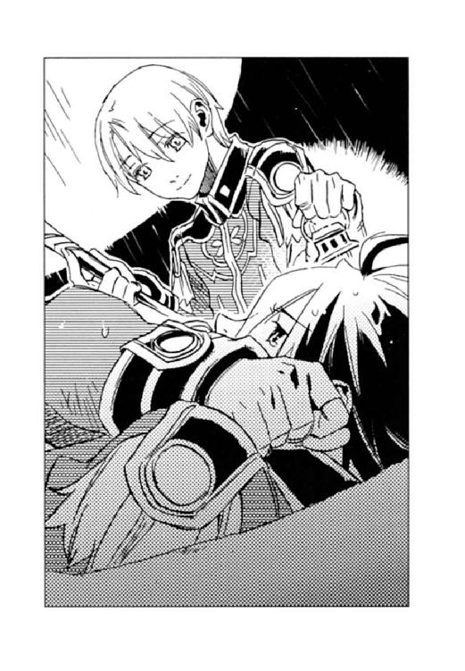
涙は、置き去りにされる恐怖を少しずつ洗い流していった。
（アマーリエの言う通りだ。これじゃ迷子になって泣き喚いているガキと同じだ。まだアッシュが死んだわけでもないのに......）
ようやく涙が止まり、ディオンは起き上がった。顔についた砂礫を手の平で拭う。
「ごめん......動転してた......心配かけたな」
「ううん」
フェルナンドは微かな笑みを浮かべて首を振った。
「僕は、君に黙っていなくなったりしないよ」
唐突な言葉に、ディオンは瞠目する。空色の瞳が真っ直ぐにディオンを見つめていた。
決して揺るがない、王の瞳──。
強く雄々しく、それでいて温かい視線に、ディオンは搦め捕られる。
「これからきっと色々あると思う。誤解やすれ違いとか、アッシュみたいにどうしても言えない事情ができるとか──。でも僕は黙って君の前から消えたりしない」
「フェルナンド......」
言ってほしい言葉だった。
その言葉が、単なる慰めではない、確固たる意思表示だと青い瞳は語っていた。
「たとえ意見や考えが違っちゃって別れることになっても、正々堂々と喧嘩してから別れるよ」
「おいおい、消えないとか言って別れる話かよ」
「大喧嘩して怒ったり悲しんだり、別れることになったって平気ってこと。心がつながっているからね」
フェルナンドは春風の笑みを浮かべた。その笑みは、ディオンに深い安堵を与えた。
心はつながっている。一時のすれ違いはあったとしても、決して裏切らない。だから信頼していいのだと──。
フェルナンドは何があっても信念を貫き通す。強さは支配する者に必要な資質だ。けれど彼はちゃんと相手の思いを推し量る。人の気持ちにつけ込むためではなく、自然に生まれる優しさなのだ。彼は忠誠を誓うに足る皇帝になるだろう。だから共に歩みたいと思う。
「偉そうに言っちゃったけど、黙って出て行った中将やアッシュを責めてるわけじゃないよ」
「わかってるよ」
ディオンは微笑み返した。心から笑えるのはとても久しぶりな気がした。
「帰ろう。将軍や博士が心配してる。シュネーも今頃雨の中を捜し回ってるよ」
フェルナンドは立ち上がり、ディオンに手を差し伸べた。
ディオンはフェルナンドの青い瞳を仰ぎ見、続いて差し伸べられた手に視線を移す。
出会ったばかりの頃は、彼の力になりたいと思っていた。彼の思い描く大陸の未来は、自分の夢でもあったし、年中無休で頭に花が咲いているような坊ちゃんを放っておけないと思ったからだ。彼と自分の夢が本当に叶うまでには、色々なことが起こるだろう。けれど彼は何度でもこうやって手を差し伸べてくれるに違いない。
ディオンはフェルナンドの手を握り、彼に体重を預けて立ち上がった。
（支えられてるのは俺の方だ）
フェルナンドの照らすカンテラの明かりを頼りに、ディオンは砂礫の坂道をゆっくりと登り始めた。
「そこまではまだ遠いのか？」
カイルは厚い雲に覆われた灰色の空と、白い砂礫の荒野の境を見つめた。
『誰の邪魔も入らず、順調に行ったとしてもあと二日はかかるであろうな』
ユーミールは答えた。
「邪魔か──」
カイルは背後で、ぐっすりと眠り込んでいる親衛隊の兵士を振り返る。
未明には雨が止み、夜が明けると同時に洞穴を出たところを、シーグ率いる数十名の創世神親衛隊に襲われたのだ。
（あと二日......）
親衛隊の追撃がこれで終わるとは思えない。〈蒼い鷹〉も捜索の手を伸ばしてくるだろう。
カイルは御者台に跳び乗り、キースの手を持って引っぱり上げる。ほんの十数分の戦闘が、一人では御者台に上がれないほど彼の体力を削いでしまったのだ。
（急がねーと、こいつの体が保たねえ）
馬に鞭を入れながら、カイルは道のりの遠さを忌々しく思った。
創世神親衛隊本部の神殿──。
祭壇下に設けられた玉座に座り、シーグは肘を椅子の肘掛けに乗せ、頰杖をついていた。碧玉の瞳は険しく、眉間には皺が寄っている。
シーグの斜め後ろにはハーラルが控え、正面には三名の将官が直立不動の姿勢で立っていた。
「だから僕は、あんな安直な待ち伏せは嫌だったんだ」
半日近く、図らずも砂礫の上で熟睡させられてしまったシーグは文句をたれた。
「お風邪を召されずに何よりです」
空々しい声音で中央の将官が答えた。シーグが国王に即位するまで、彼──ルイ・ティエールが創世神親衛隊の全権を握っていたと聞く。
「キースの目的はこの荒野を緑の大地に甦らせることなんだろ？ だったら無理してユーミールを奪うことないんじゃない？」
「何を仰います、陛下！」
右端のオラーツ中将が声を荒らげた。
「キースとその父親は、我が祖国を滅ぼした憎き仇。そのような者にユーミールをいいように扱われて悔しくはありませんのか！」
「その話は何度も聞いたよ。王弟ジェラールが使ってはいけない神の玲石で黒雷獣を造ったから黒雷獣は狂い、キースが毒の灰を降らしたって話だろ？ でも、当時三歳だった彼がそんなことするなんて思えない」
「いいえ。自分はこの目でしかと見ました。暴れる黒雷獣に向かって、あやつが何かを〈精〉していたのを。その後黒雷獣は溶け崩れ、大地に毒の灰が降って参ったのです。あれは帝国の指図を受けたに違いない。それが証拠にやつは帝国貴族の養子になったではありませんか」
「〈闇〉の玲石で、そんなことができるのかな」
呟くシーグに、
「事実はどうだって構わないのですよ、陛下」
ティエールが応じた。
「肝要なのは民人がどのように思っているかです。民がキースを叛逆者だと信じているものを、ことさら訂正する必要はありません。帝国に移住した民がひどい差別を受けていることは陛下もご存じのはず。民は帝国に恨みを持っている。そこへ、ムスベルを滅ぼしたのはキースで、それが帝国の謀略だったとなれば、民の怒りの矛先が絞られます。人心を集めるには、民人に満足のいくような物語を提示する、それが政というものです」
「お前たちに都合がいいだけだろう？ 王位継承権を持ってはいるが、僕はたかが十五の子どもだ。傀儡国王にはぴったりの役だもの。けれど、キースは頭が良すぎる。うっかり民の信頼なんか得てしまったら、お前たちの出番がなくなってしまうものね」
シーグはフンと鼻を鳴らし、オラーツは頰を紅潮させる。ハーラルが「シーグ様」と小声で諫めた。
「陛下、どうか誤解のなきよう──」
左端のアラン・ジイド少将が訛りの強いムスベル語で言った。
「私どもは決して陛下をないがしろにするつもりはございません。しかし、豊かな土地も、連邦や帝国と対等に渡り合えるだけの兵力もない。潔くあらせられる陛下には、老獪さを疎ましく御覧になるでしょうが、国が成るまではどうか忍んでいただきたく存じます」
たるんだ目蓋の下から見上げる目には、必要以上の慇懃さが窺える。
ムスベルの辺境出身で、一兵卒だった十代の頃に連邦に囚われてしまったという彼は、右二人の貴族出身の将官と異なり、本来国王に謁見できる身分ではなかった。
「ムスベル再興は私の悲願でございます。だから砂獣の棲む連邦の砂漠を越え、砂礫の荒野を渡ってここまで参ったのでございます。キースが螺旋の玲石を手に入れたと聞き、居ても立ってもいられずに......」
ジイドは連邦でしばらく強制労働させられた後、政府の要人に奴隷として仕えていたという。そこでキースがウルビーノから螺旋の玲石を手に入れたことを知り、親衛隊に知らせたのだ。その功績と、情報収集の手腕を買われて少将の地位を得たということだった。
「どうか私どもの気持ちを、その広い御心にてお汲み取りいただきとう存じます」
ジイドは深々と頭を垂れた。
「まあいい。僕が政治に疎いのは事実だし、この砂礫が人の住める土地になって、民が豊かに暮らせるなら別に構わないよ。お前たちに任せておこう」
シーグはどっかりと背もたれに寄りかかった。
「で、ユーミールを手に入れたらその後は？ 砂礫の無毒化だけじゃないんだろ？ 人々の心を反帝国主義に煽っておくってことは、帝国に攻め入って領土を増やすつもり？ 狙いはやっぱりニヴル山脈の源石と玲石の鉱脈？」
「陛下は賢いお方でいらっしゃる」
ティエールは不遜な笑みを浮かべた。
「できたぞ！ 一発で黒雷獣を眠らせる薬が！」
夢幻貴族は銀の手袋を着けた指先で、小さな瓶をつまんで掲げた。
「さすが、幻術の達人!!」
ディオンとフェルナンドはパチパチと拍手をした。
しかし、その後に続いた「効き目は保証できないが──」の言葉に「何だ......」とがっくり肩を落とす。
「だって、試せないではないか。黒雷獣を一発で眠らせる薬だぞ。人間で試そうものなら、一生眠り続けてしまう」
夢幻貴族は肩をすくめる。
ディオンとフェルナンド、モーリス、夢幻貴族は、夕食ができるまで焚き火を囲んで、ユーミールの暴走を止める手だてを考えていた。
モーリスが調べたところによると、ムスベルで造られた当時の黒雷獣軍団は、〈光〉の玲石で造られた血液を注入され、造血組織である骨髄や脾臓も〈光〉の玲石で造られていたという。だから造られてから脳が変質するまでにおよそ三年の期間があったのだ。しかし、今のユーミールの血液は〈闇〉の玲石で造られている。
──ユーミールが狂い始めるのはおよそ五日後。
それがモーリスの出した計算だった。キースはそのことを知らないかもしれない。とにかく、その前に追い付いて、〈光〉の玲石で血液を〈精〉し、ユーミールに輸血する。万一間に合わなかったら、ユーミールを眠らせてしまおうという作戦を立てたのである。
全員で夕食を摂りながら、
「けど、それってユーミールが暴走したら使うんだろ。どうやって飲ませるんだ？」
「制御不能の黒雷獣に、お口あーんして、なんてわけにいかないもんね」
と、あれこれ策を練っているところへ、『中将たちの匂い、見つけたよ』と、シュネーがジェイダたちと戻ってきた。
夢幻貴族はディオンたちと合流する前にシーグを尾行していたため、創世神親衛隊本部の場所を知っていた。本部を探りに行っていた〈蒼い鷹〉別働隊が、戦闘から帰ってきたと思われる親衛隊兵士を発見し、シュネーを連れて彼らの足跡を逆に辿ったのである。
『まだ新しい匂いだった。南西の方向へ向かってる。明後日には追い付くんじゃないかな』
（間に合うかな......）
もう嘆かないと決めたが、時折どうしようもない不安が押し寄せる。
「中将はどこへ行くつもりなんだろう。ユーミールを復活させたのに、砂礫の無毒化を始めた様子もないし」
フェルナンドは首を傾げる。
その時、黙ってパンを齧りながら調べ物をしていたモーリスがふいに顔を上げた。
「夢幻貴族、ウルビーノ公が中将に渡したのは幾つだった？」
「螺旋の玲石のことですか？ 数については聞いていませんが、話題にならなかったぐらいだから、一つだと思いますが」
「今、資料の中に螺旋の玲石についての記述を見つけてね」
モーリスは齧りかけのパンを持った手で、黒縁眼鏡を押し上げた。
「螺旋の玲石は二つ必要なんだ」
「二つ──!?」
ディオンもデンゼルも、他の〈蒼い鷹〉隊員たちも食事の手を止めてモーリスに向き直る。
「ここには、玲石の性質と可能な〈精反応〉が書かれているんだけど、組み合わせる玲石の種類や形状、質量、角度、距離、全て考え合わせても、螺旋の玲石が二つなければ、無毒化の〈精〉はできない」
「ウルビーノ公から渡された螺旋の玲石が一つなら、もう一つはどこに？」
フェルナンドはモーリスに尋ねたが、彼は「それはどこにも書かれてない」と頭を振った。
「ユーミールじゃ──」
デンゼルが唸るように言った。
「あのキースが螺旋の玲石を一つ手に入れただけで、ユーミールを復活させ、それからもう一つの螺旋の玲石を捜し回るような愚は犯さん。ユーミールがその在り処を知っておるのじゃ。キースは今、それを取りに向かっておるんじゃ──」
その頃──。
「どういうことだ!!」
カイルは愕然と目を剝いた。
ユーミールがもう一つの螺旋の玲石を埋めたという場所には、広く深い穴が開いていた。カイルは穴に身を滑らせ、底を手で探る。
『四、五人の男性......〈蒼い鷹〉ではありません。多分親衛隊......』
穴の縁の匂いを嗅いだアッシュは泣きそうな声で言った。
『どうやってこの場所を知ったのだ。我は独りで螺旋の玲石を埋めたし、誰にもその在り処を話さなかったぞ──』
ユーミールの吊り上がった目は大きく見開かれていた。
「連邦に囚われていた時には？」
キースの冷徹な表情はいつもと変わらなかった。
『我は連邦に囚われたことなどない。我はこの地で帝国軍に分解されたのだ。それは復活させたそなたが一番よく知っておろう』
「お前は頭だけ連邦に運ばれたのだ。血液を注入すれば一時的に目覚めさせることは可能だ。そんな憶えはないか？」
ユーミールはしばし考えていたが、
『わからぬ──』
と、目を伏せる。
「だめだ。見つからねえ」
カイルは穴から這い上がり、
「親衛隊のやつら、何を考えて螺旋の玲石を持って行ったんだ!? 俺たちがムスベルを無毒化した後でも構わねーはずだ。わざわざ今持ってくことねーだろが、こん畜生!!」
と、語気を荒らげる。
『王の矜恃なのだろう。自分の手で国を甦らせたいと願っているのではないか。我に残された時間は僅かしかないということを知らぬ様子であったし──。我がいずれ狂う身でなければ、あの少年王に仕えてもよいのだが、我が暴走を始めたら、止められるのはキースとアッシュだけだからな』
ユーミールは悄然と呟く。
「もしかして、親衛隊は螺旋の玲石が二つ必要だってことを知らねーのか？ 無毒化の研究は当時のムスベル王にも内緒だったっていうし。単に秘宝だからとか、ユーミールのおやっさんが大事にしてたようだから取引に使うとか、そんな単純な理由なのかもしれねーぞ」
カイルは腕を組んだ。
『あり得るな。螺旋の玲石の研究は王に奏上されたが、玲石が二つなければ、毒が中和できないことを知っているのはごく一部の神官だけなのだ』
「あるいは、砂礫が甦ると都合の悪い人物がいるのかもしれん──」
キースは氷の瞳で螺旋の玲石が眠っていたはずの穴を見下ろした。
『都合の悪い人物？ ムスベル人だったら祖国が緑溢れる大地に戻れば嬉しいはずでは？』
アッシュは首を傾げる。
「ムスベル人であればな──」
キースは顔を上げ、闇に紛れて判然としなくなった西の地平を見つめた。
「御苦労だった」
男は決して流暢とは言えないムスベル語で言った。
白い石造りの小部屋に窓はなく、テーブルの上には燭台が一つ載せられていた。灯された蠟燭の炎が、男の手の上に載っている煤けた金属製の箱を照らしていた。
彼の前には五人の兵士が膝をついていた。箱はこの兵士らによって砂礫から掘り出され、男にもたらされた物である。男は箱の蓋を開けた。中に収められていた物をつまみ出す。
それは形も大きさも色も卵のような玲石だった。
男はたるんだ目蓋を上げ、「これが螺旋の玲石の片割れか」としげしげと眺めた。
「ユーミールの言ったことは本当だったのだな。やつめ、これの在り処を自分で喋ったなどとは知らず、今頃仰天しているに違いない」
男は侮蔑のこもった笑みを浮かべ、玲石を箱にしまい入れる。
「誰にも見咎められなかったろうな。もしも螺旋の玲石が二つなければ無毒化はできないと、やつらが知ったら、我々の目論見は水の泡だぞ」
男は声を潜めた。
「首尾は上々にて。やつらはキースから螺旋の玲石とユーミールさえ奪えば砂礫が甦ると信じて、決戦の準備を調えております」
兵士の一人が答えた。
「後はユーミールをこちらのものにするだけだ。あのお可愛らしい国王陛下に活躍してもらわなければな」
男は「お可愛らしい」をことさら強調し、口の端を歪めて笑った。
「陛下。兵の準備が調いました」
ティエールが玉座の前に進み出た。彼の後ろにはジイド少将が付き従っている。
「ふーん。そう」
シーグは、ハーラルが捧げ持つ果物カゴからブドウをつまむと口に放り込む。
「キースたちは、西に移動中であることが確認されました。今夜辺り、この創世神親衛隊本部に至るはずです」
「へえ、キースはここへ来るの？」
シーグの碧玉の瞳に小さな炎が灯る。
「やつの連れている黒犬はモーリスの〈精〉した人造生物で、人語を解するということですから、犬が兵士の足跡を嗅いでこの神殿に案内して来ると思われます」
「わざわざ殴り込みに来るなんて、何考えてるんだろ。さっさと荒れ地の無毒化を始めればいいのにさ」
シーグは呆れたように言って、また果物カゴに手を伸ばす。
「何を仰います。陛下こそが真のムスベル王。荒れ地の再生という大事業は、陛下がなすべきです。さすれば、大陸全土に陛下の名が轟き、その偉大なお力を全ムスベル人は讃えるでしょう。キースごときにこの栄誉を与えてはなりません」
ジイドの言葉に名誉欲をくすぐられ、シーグは「確かにそうだね」とうなずく。
「でも、こないだみたいに砂礫の上で半日も眠らされるのはごめんだよ」
リンゴを丸ごと齧りながらシーグは言った。
「御安心を。帝国に潜伏していた密偵や、連邦から解放された同志を集め、二千の兵を組織いたしましたゆえ、いかなキースでもこの神殿を落とすことは叶いますまい」
ティエールの返答に、
「二千──。それは凄いね、期待してるよ」
シーグは不敵な笑みを浮かべた。
『ここに、もう一つの螺旋の玲石が埋められていたんじゃないかな。大佐の匂いが残ってる』
直径五メートル、深さ三メートルにも及ぶ穴の底で、シュネーは匂いを嗅いだ。
陽光が雲の切れ間から差し込み、しゃがみ込んで穴の縁から覗き込んでいるディオンたちの影を、シュネーの背中に落とす。
『でも別の人の匂いもする。古いのと新しいのと......』
「親衛隊のやつらか？」
『古い方はね。長靴の革の匂いが親衛隊と同じ』
シュネーはしつこく匂いを嗅いでいた。
「親衛隊はもう一つの螺旋の玲石がここに埋まっていたことを知ってたのか!?」
ディオンはフェルナンドやデンゼルと顔を見合わせた。
『で、大佐の後にまた......あれ？ なんか埋まってる』
シュネーはガリガリと前足で砂礫を掘った。少しばかり掘り下げると、小さな金属製の円筒が出て来た。シュネーはそれを咥えると、軽やかに穴を駆け上がる。
『これって、手紙を入れて伝書鳩の足につけるやつだよね』
と、デンゼルの手にその円筒を落とす。
デンゼルが円筒の蓋を開けると、中から丸めた紙片が出て来た。それを広げて黙読していたデンゼルの顔が次第に険しくなる。
「ふむ。そういうからくりじゃったのか」
デンゼルは、少し離れて様子を見守っていた銀ずくめの騎士を振り返り、
「お前さんも、まだまだ苦労が絶えんな。革命の後始末は大変じゃし、首相の責務は重いが、健闘を祈るぞ」
と、少々憐れみを込めた視線を向けた。
「は？ 俺ですか」
夢幻貴族は怪訝な顔で自分を指差した。
「とにかく、急いでキースの加勢に行くぞ」
デンゼルの号令で〈蒼い鷹〉は駆け出した。
濃紺の闇が、白い砂礫の荒野に降りていた。厚い雲がまだらに空を覆い、時折雲の裂け目から中天にかかった満月が顔を覗かせる。突き刺さるように冷たい風が砂礫の上を渡り、砂を巻き上げていた。
創世神の神殿を目前にして、キースとカイル、アッシュ、そしてユーミールは立ち尽くしていた。彼らの行く手を灰色の軍服が遮っていた。
その数およそ二千──。
「えらく盛大に出迎えられちまったな」
いつも脳天気なカイルもさすがに表情を強ばらせていた。
『こちらが風上だったから気付くのが遅くて......申し訳ありません』
猪や熊も含めれば、実戦経験はかなり豊かといえるアッシュだったが、二千の兵士が相手では最初から尻尾が垂れてしまう。
『待ち伏せは覚悟しておったが──。しかしよくこれだけの兵を集めたな。このような荒野の真ん中では、兵糧の確保も難儀であろうに』
ユーミールは妙なところで感心していた。
キースは相変わらずの無表情で、敵の数と配置を目で探っていた。親衛隊の兵士はじりじりと陣形を変えていく。
「カイル、囲まれる前にアッシュとユーミールを連れて逃げろ。私が囮になる」
キースは白い手袋に幾つか玲石を貼った。
「今のお前じゃ、あいつらと渡り合えねえ。囮役は俺がする」
カイルは左右の敵との距離を測りながら、愛用の四十五口径をホルダーから抜いた。
『我一人ならば逃げるぐらいわけないのだがな。しかし、どこぞで狂い出しては敵わぬし』
ユーミールは飄然と言った。
その時、親衛隊から一人の騎士が進み出た。
「大人しく投降せよ。螺旋の玲石とユーミールを引き渡せば、命までは取らん」
帝国の標準語で呼びかけられた。藍色の闇に黒い影が浮き上がって見えるだけで、顔はわからないが、シーグの声ではない。
カイルはキースに振り向いた。
「はっきり言って勝ち目はねえ。悔しいが、一旦降参して仕切り直さねーか」
キースの体調が万全なら、勝つまではいかなくても逃げおおせることは何とかできる。しかし、今の彼は走ることすらままならないだろう。
『私も大佐に賛成です。シーグにちゃんと説明すれば、彼なら理解してくれますわ』
アッシュも心配げにキースを見上げた。
『我もムスベル王やかつて共に戦った兵士らと、一戦交えるのは気が進まん』
本気を出せば、一万や二万の軍勢さえ簡単に殲滅する黒雷獣の言葉には重みがあった。
「──そうだな」
キースの一瞬の躊躇は、時が延びれば延びるほど、アッシュの命が危険になることにあった。
彼は前方の騎士に視線を戻した。
「言う通りにしよう」
キースはムスベル語で答えた。
「武器を捨てて、手を挙げよ。手袋の玲石も取れ」
カイルは持っていた銃を投げ捨て、キースも白い手袋形の〈精炉〉から玲石を外すと、地面に放った。
六名の騎馬兵が短機関銃を構えて近付いてきた。キースとカイルは両手を挙げて彼らを待つ。
顔が見える位置にまで近付くと騎馬は止まった。六名の中に、真っ白な馬に跨り、華やかな肩章の付いたマントを風になびかせるシーグとハーラルの姿があった。シーグは熱を帯びたような碧玉の瞳でキースとカイルそしてアッシュを順番に見つめた。アッシュは尻尾を垂れて二人の少年を見上げる。
シーグの目は巨大な黒雷獣の頭部に移った。
「再び命ずる。ユーミール、我に仕えよ」
シーグは手の平の間に光の球を〈精〉した。
『御意のままに』
ユーミールは額の血の玲石をシーグに向けた。白い光の球がシーグの手から離れ、血の色をした玲石に吸い込まれた。ユーミールは黒い目を一瞬見開き、すぐに閉じた。しばらくしてその目が開かれた時、
「ユーミールよ。お前の主君は誰だ？」
シーグは尋ねた。
『シーグフリード陛下にございます』
ユーミールは頭を垂れる。
シーグは赤い唇の端を吊り上げて満足そうに笑むと、「来い」と馬の首を返した。ハーラルがその後に続き、ユーミールは彼らに従って歩き始めた。親衛隊の軍勢から感嘆のどよめきが起こる。
「待ってくれ」
カイルが呼びかけた。しかし、シーグは肩越しに振り返り、薄く笑んだだけで神殿に向かって去ってしまった。
「では、螺旋の玲石を渡せ」
初老の兵士が馬に乗ったまま手を出した。
キースはポケットからビロードの包みを出し、そのまま兵士に投げ渡す。兵士は包みを解き、白い卵のような玲石をつぶさに観察すると「確かに」と再びビロードにくるむ。
「貴様らは、この場で銃殺刑に処す」
兵士はいきなり短機関銃の引き金に手をかけた。キースたちを囲む他の兵士も銃を構える。
「ちょっ、ちょっと待て。話が違うぞ」
「撃て!!」
激しい銃声が響いた。
同時にキースが〈闇〉の玲石で〈精〉した障壁がカイルとアッシュを包んだ。彼は兵士が螺旋の玲石に気を取られている間に手袋を外していたのである。
「あり得ねえ。尋問も何もなしかよ。指揮官は誰だってんだ」
カイルは唇を嚙む。
「どうせこんなことだろうと予想していた。幹部の中に、私たちがいては困る者がいるのだ」
キースの表情は変わらない。しかし、その額には汗が浮いている。
『中将、手が！』
アッシュは、青黒く腫れた彼の手の平を見て小さな悲鳴を上げた。ユーミールの脳を造った時に傷めた手は、全く回復していなかったのだ。
「大丈夫だ。生き物以外の〈精〉は影響ない」
キースは言ったが、その手では相当痛むに違いない。
「絶体絶命だぜ──」
カイルの四十五口径は障壁の外だ。しかし拾えたところで、二千の敵に小銃一つでは、万に一つの勝機もない。
周囲を囲む敵兵が詰め寄ってきていた。
（これまでか──）
カイルが死を覚悟した時──。
ドン!!
背後から、落雷のような大音響が轟いた。振り返れば、親衛隊の囲みが崩れ、十数騎の騎馬兵がその間を疾駆してこちらにやって来る。濃紺の軍服は紛れもなく〈蒼い鷹〉だ。
親衛隊の兵士は一瞬動揺を見せたがすぐに体勢を整え、鞍上の〈蒼い鷹〉に向かって攻撃を開始した。短機関銃や手の平から〈精〉される爆裂弾を、〈蒼い鷹〉の障壁が弾く。
先頭を切って駆け寄って来たのはディオンだった。そのすぐ後ろにフェルナンドの姿もある。
「こんな戦闘の場に、皇太子を連れて来るな」
キースは眉間に皺を寄せた。
フェルナンドは片手に手綱、片手に杖を持ち、ディオンと自分とを障壁で囲んでいた。ディオンはいつもの猟銃を構えている。
「若造が──！」
キースから螺旋の玲石を取り上げた初老の兵士は、真っ直ぐに向かってくるディオンたちを見据えた。フェルナンドが障壁を解いた一瞬を狙って短機関銃の引き金を引く。ディオンが散弾を放ったのはそれとほぼ同時だった。間髪を容れずにフェルナンドが〈精〉した障壁が、短機関銃の弾を跳ね返す。しかし、兵士は障壁の〈精〉が間に合わずに、麻酔散弾を体中に浴びてしまった。
「〈蒼い鷹〉はチームプレーが自慢なのさ」
ディオンはニッと笑い、キースたちの前で手綱を引き、彼らに背を向けて馬を止める。フェルナンドもディオンに並んだ。キースたちを挟んでディオンの対角線上にはジェイダとユアンが、同じようにキースたちを背にして親衛隊と対峙する。
四人は強固な障壁を〈精〉し、上官二人と黒犬を囲んだ。他の〈蒼い鷹〉も、追いすがる親衛隊を蹴散らしながら、次々とこの場に集結してきた。
何重もの障壁がキースたちの周囲に張り巡らされる。
「一言、言わせていただきますわ」
ジェイダは親衛隊を見据えたまま、背後のキースに言った。
「人の気も知らないで、何やってんのよ、バカッ!!」
これにはディオンたちも驚いたが、キースも瞠目した。彼がこんな表情をしたのは初めてではないだろうか。ジェイダの肩は震えていた。多分泣いているのだろう。
「まったくです。僕たちがどれほど心配したか......」
ユアンが肩越しに振り返った。いつも穏やかなユアンが恐い顔でキースを睨む。
「水臭いじゃないですか、中将。大佐も」
「〈蒼い鷹〉に入隊した時から、中将と共にあろうと決めていたんです。死ぬ覚悟だってとっくにできていたんです。陸軍をクビになるぐらいどうってことないんです」
他の〈蒼い鷹〉たちも口々にそれぞれの思いを吐き出す。
「お前たち......」
いつも冷徹な薄氷の瞳が揺れた。
「せっかく皇太子が部下なんですから、僕を最大限利用すればいいのに」
フェルナンドの春風の笑みは、いつもより強風だった。
「何で一言相談してくれなかったんだ？ 俺には〈光〉の玲石があるし、父さんに言えば、もっといい方法を考え出してくれたかもしれないってのにさ。俺たちを巻き込まないようにって考えてくれたのは嬉しいけど......残された方の気持ちとか......」
ディオンは言っているうちに、喉に熱い物がこみ上げてきて、最後の方は声にならなかった。
「悪かった......」
キースは消え入るような声で答えた。
「アッシュもだよ──」
ディオンは振り返り、カイルの足元を見下ろす。アッシュは潤んだ瞳でディオンを見上げ、ちぎれるように尻尾を振っていた。障壁をフェルナンドや他の隊員に任せてディオンは馬から下り、アッシュに駆け寄る。
「心配かけやがって」
ディオンはアッシュの首を抱き、フワフワの首に顔を埋めた。
『ごめんなさい......ディオン。会いたかった......』
ディオンの頰と腕にアッシュの体温が伝わり、それが胸にまで沁みてくる。凍えていた心が溶けていくようだった。思わず涙がこぼれ、熱い滴がアッシュの毛を濡らす。
「中将、御命令を」
頭上でゼノンの声がした。
「螺旋の玲石とユーミールを取り戻す」
キースは普段の声音に戻っていた。彼はこれまでの状況をザッと説明し、手短に命令を下す。
「反撃開始だ。行け」
「了解」
隊員たちは一斉に散り、ディオンも鞍に跳び乗った。
「行くぞ、アッシュ」
『ええ』
ビヴロスの山中で獲物を追っていた時から、何度となく繰り返されてきた応答だった。思わず笑みがこぼれる。
ディオンは馬の腹を蹴り、フェルナンド、ジェイダ、ユアンと共に、半ば砂礫に埋もれかけた石柱の間にたたずむユーミールの影を目指す。
「撃て!!」
親衛隊の短機関銃が唸ったが、彼らの銃弾はフェルナンドの障壁がことごとく跳ね返した。
『ユーミールはもうシーグの言うことしか聞かないのかしら』
アッシュはユーミールの影を見つめたまま、ディオンの馬の足元を走る。
「わからない。血の玲石で生き物を操る〈精〉には幾つか種類があって、シーグがどれを使ったかにもよるな。一番強力なやつなら全く自我を失ってシーグの言うことしか聞かないし、弱いやつなら意識を保ちつつ忠誠を尽くす。つまり懐くって感じだな」
ディオンはユーミールの隣で戦いを見守るシーグとハーラルに視線を送る。
「問題は、そんなことより完全に脳細胞が変質しちまったら、血の玲石でも制御できないってことだ」
あと数時間で脳の変質が始まってしまう。それもあくまで計算上の数字であって、いつ暴走が始まってもおかしくない時期に来ているのだ。
バリバリッと背中に激しい振動が伝わってきた。短機関銃の弾がフェルナンドの障壁にぶつかって弾ける音だ。背後から数十騎の親衛隊が追って来ていた。ユアンが手綱から両手を離し、白い弓を構えて振り返る。赤い光の矢が連射され、数名の兵士が鞍から落ちた。
「シーグ！」
ディオンは前方の騎馬に向かって叫んだ。
薄い雲を透かして、淡い月の光が赤い髪を照らす。シーグの碧玉の瞳は熱を帯びたように潤み、赤い唇は薄い笑みをたたえていた。
彼は両手を向き合わせ、手の間に青白い炎を〈精〉する。手の平がこちらを向いた。
「シーグ......」
ディオンは愕然とその様を凝視する。
ドン！
と鈍い音と共に炎の球が放たれた。炎は大気を巻き込んで成長し、ディオンたちに迫る。
「わっ」
ディオンは思わず腕で目を覆った。
「うわぁっ！」
背後で聞こえた悲鳴に、ディオンは振り返った。
青白い炎の渦が親衛隊に襲いかかっていた。馬もろともに兵士たちが地面に叩きつけられる。
ディオンが再び前方に視線を戻すと、シーグはクスクスと笑っていた。
「びっくりした？」
「ったく、脅かすなよ」
シーグの前に馬を止め、ディオンは手の甲で額の汗を拭う。
「君も相変わらずだねー。危うく馬から落ちるとこだったよ」
フェルナンドの金髪はまだ逆立っていた。ジェイダとユアンもやれやれと肩から力を抜く。
ハーラルは弱り切った顔で「申し訳ありません」と、主君に代わって詫びた。
「ちゃんと手紙を送ったのに、読まなかったの？」
彼は悪戯っぽい笑みを浮かべる。
「読んだけどさ、さっきの火炎弾の迫力が凄すぎて、一瞬マジかと思ったんだ」
ディオンは仏頂面で答えた。
『何なの、いったいどういうことなの？』
アッシュは目を瞬いていた。
「話は後だ。急いでここから離れよう」
ディオンは馬の腹を拍車で蹴った。ここから一キロほど下った場所にモーリスとデンゼルが待機していることになっていた。
しかし──。
「ユーミール？」
シーグの怪訝な声に、ディオンは振り返った。
ユーミールはぼんやりと砂礫のあちこちで起こっている小爆発を眺めていた。耳まで裂けた口角には締まりがなく、両眼の焦点が定まっていない。
『閣下、どうしたのですか？』
アッシュもユーミールの異変に気付いた。
ディオンは馬の首を回らせてシーグの隣に並ぶ。
「おかしいな。自我を失うほど強く〈精〉してないはずだけど」
シーグは「ユーミール、来るんだ」と呼びかけたが、
ユーミールは応えず、『撃て......帝国を我が物に......』と、口の中でブツブツと呟いている。
「もしかして──」
ディオンたちは愕然とユーミールの相貌を見つめた。
ユーミールは巨大な前足を踏み出した。
『......掃討する。我に続け』
親衛隊と〈蒼い鷹〉との壮絶な戦いの場に向かって、ユーミールはゆっくりと歩み出した。
月の光が漆黒の鋼の鱗に照り返る。
彼の目は、記憶の中にある敵国の軍勢を見ているのだろうか。親衛隊と〈蒼い鷹〉を見据えて、彼は耳まで裂けた唇の端をグウッと吊り上げた。嗤っているのだ。
黒い鋼に覆われた全身から、見えない圧力が竜巻のように発せられた。
『──閣下』
アッシュは体毛を逆立てて後退る。恐ろしい闘気だった。
戦列から離れて、障壁の中で味方の攻防を見守っていたキースとカイルも振り返る。
「始まったか」
カイルは目を剝き、キースの額には汗が浮いたが、ムスベル人兵士に与えた影響も大きかった。短機関銃の銃声が止み、呆然とユーミールを見つめる。
ユーミールの肩の付け根の鱗が持ち上がり、重低音を響かせて機関砲の砲筒が持ち上がった。
シーグは「ユーミール！ 止めろ！」と、叱咤したが、ユーミールの耳には、忠誠を誓ったばかりの主君の声も届かない。
「ひ......」
戦闘体勢に入ったユーミールの恐ろしさは、当時共に戦ったムスベル人の方がよく知っていた。自分たちに向けられた砲口から目を離せないまま、ずるずると後退る。
「ユーミールが制御不能だ!! 逃げろ！」
シーグは叫んだが、歩兵の中には腰を抜かしたのか、尻餅をついたまま動けない者もいた。
「弾は？ 機関砲の弾って、もう入ってるの？ 中将が麻酔弾を仕込んでおいてくれたとか？」
フェルナンドはユーミールの肩を見上げた。
「いや、弾は自動的に体内で〈精〉されて装塡されちまうんだ」
ディオンは硬い声で答えた。
「噓......、じゃ、弾切れもなし？」
「腹が減って動けなくなるまで撃ち続ける」
「冗談じゃない──っ」
耳をつんざくような轟音が鳴り響いた。もの凄い爆風が襲い、ディオンたちは慌てて障壁を〈精〉する。バラバラと砂礫が激しい勢いで障壁を叩いた。
視界が開けると、ディオンたちは仲間の姿を確認する。手練れの〈精師〉たちは、瞬時に〈精〉した障壁で辛うじて難を逃れたが、着弾した場所には大穴が開き、黒煙が立ち上っていた。穴の周囲には、障壁ごと吹き飛ばされた兵士が何人か倒れている。
雷鳴のような咆哮が大地を揺るがした。ユーミールは後ろ足で立ち、鋭いかぎ爪の生えた前足で、宙を搔きながら天を仰ぐ。
風が雲を流し、煌煌と照る満月が夜空に輝いた。月光が、白い砂礫に立つ巨大な黒い獣に降り注ぐ。
ユーミールは前足を着地させ、月を仰ぎ見ながら哄笑した。引きつったような笑い声はすぐに止み、彼の目は地面に這い蹲る人間たちを捉える。ザッと砂礫を蹴る音がして、突然ユーミールの姿は消えた。跳躍したのだ。しかし、あまりに速いその動きにディオンの目は追い付かなかった。次の瞬間には、ユーミールの黒い影は十メートル以上も前方に移動していた。着地しざま、彼は前足を薙ぎ払う。二、三名の兵士が爪に引っかかり、数十メートルも吹っ飛ばされた。更に前へ跳躍し、今度は逃げまどう騎馬の兵士を、鋭い牙で馬ごと咥えた。ユーミールは二、三度頭を振り回した後、兵と馬を宙に放る。兵が地面に叩きつけられる前に、ユーミールは再び跳躍して次の獲物に牙を立てる。
親衛隊の兵士が数名、果敢にも炎弾や爆裂弾を〈精〉してユーミールに放った。黒い鱗の上で、朱色の火の粉を散らして幾つもの小爆発が起こる。しかし、鋼の鱗には、傷一つ付かない。降り注ぐ爆弾など、さして気に留めた様子もなく、ユーミールは次の獲物を求めてかぎ爪の生えた前足を伸ばした。
「こんなの......どうやって止めたらいいんだ」
黒雷獣を止める方法は幾つか知っていたが、そんな知識は何の役にも立たない。ディオンは、暴虐の限りを尽くす生ける兵器を呆然と見守った。
ふと、ユーミールの動きが止まった。彼はうつむき、歯を食いしばる。その肩が細かく震えていた。
『我を......滅ぼせ......』
絞るような声が、歯の間から漏れた。しかし次の瞬間に、ユーミールは大きく後方に跳躍し、宙で反転するとディオンの前に着地した。ギラギラと異様な輝きを放つ黒い目は、ディオンの隣にいるシーグを捉えていた。グルグルと獣の唸り声が地面を這ってディオンたちの耳に届く。ユーミールの巨大な顎が開いた。粘液をまといつかせた牙がシーグに狙いを定めていた。
「危ない！」
ディオンは自分の馬をシーグの白馬に体当たりさせ、ユーミールの前に立ちはだかる。ハーラルが手を伸ばして白馬の手綱を持ち、自分の方に引き寄せた。
それを見たカイルは「障壁を解くぞ。どっかへ避難してろ」とキースに言い置き、地面に放ってあった四十五口径を拾うと、ユーミールに向かって駆け出した。
「ユーミール！ 正気に戻れ！」
振り返りながらシーグは叫ぶ。
『ガ......ガ』
金属が軋むような音を立てて、黒雷獣の顎が震えた。
『キース......我を滅ぼせ。......殺してしまう、我が王を』
黒い瞳が明滅している。忠誠を誓った王の声が、血の玲石を介して微かに残った理性を呼び覚まし、狂気と戦っているのだ。しかし、開いたままの顎が閉じる様子はなく、ゆっくりとユーミールは首を前に伸ばす。牙はシーグやフェルナンドを背に守るディオンに迫っていた。
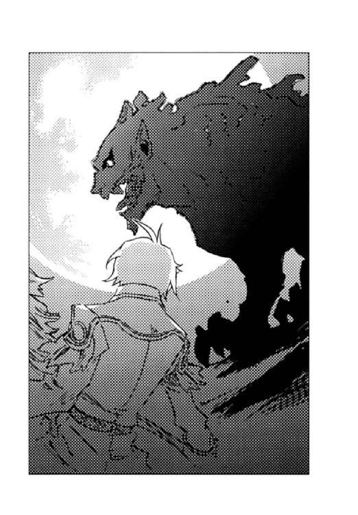
カイルは走りながら、一番殺傷力の高い弾を弾倉に入れる。射程距離まで近付くとリボルバーとは思えない速さで連射した。六発の銃弾は全てユーミールの右目に命中した。だが、透明な装甲で覆われた瞳は、乾いた音を立てて弾丸を跳ね返してしまった。
ディオンたちはユーミールの鋭い牙を凝視したまま後退った。ユーミールは一歩を踏み出し、その距離は縮まらない。
ユーミールの頭はガクガクと揺れていた。狂気と理性がせめぎ合っているのだ。
『キース......早く......』
懇願はキースにも届いていた。彼は〈闇〉の玲石の埋まった手を握りしめる。
その時──。
「大佐！」
砂礫の彼方からカイルを呼ぶ声がした。カイルは振り向き、ディオンたちも声のする方に目をやった。
満月を背に、黒鹿毛の馬に乗った銀ずくめの騎士が全力疾走で向かって来ていた。その後ろにはデンゼルもいる。
「黒雷獣を眠らせる弾だ。これを飲ませろ！」
夢幻貴族は一発の拳銃の弾を投げた。弾は一直線にカイルに向かって飛び、彼は片手でそれを捕る。
「ユーミール！」
デンゼルが声高に呼びかけた。
「何を血迷っておるんじゃ！ たわけが!!」
さすがに黒雷獣ほどの声量はないが、その迫力はディオンたちを仰け反らせるに十分だった。
ユーミールが目を瞬いた。
『デンゼル──？』
ユーミールは口を半開きにしたまま、デンゼルの方に顔を向ける。
カイルの拳銃が火を噴いた。
銃弾は狙い違わず、ユーミールの口腔に吸い込まれたのだろう。頭部がガクンと小さく跳ねる。ユーミールはしばらく瞠目していたが、やがて目蓋がゆっくりと下がっていった。
ディオンたちはその様子を固唾を吞んで見守る。
グラリと巨体が傾いた。大地を振動させてユーミールは倒れた。
「効いたか──」
夢幻貴族は銀の手袋の甲で額を拭った。
〈蒼い鷹〉も親衛隊の兵士も、死んだように眠る黒雷獣に呆然と目を注いだ。
「......やった」
シーグは、安堵と微かな憐れみの混じった視線でユーミールを見つめる。
「さすがは、夢幻貴族だね。助かったよ」
フェルナンドは、大陸一の催眠剤の〈精師〉に微笑みかけた。
彼は鞍上で「どういたしまして」と優雅に一礼する。
「それにしても、うちのじいちゃん──」
ディオンは、ユーミールから目を離さずに呟いた。
「怒鳴り声だけで、暴走黒雷獣を正気に返すなんて、凄すぎる......」
帝国の黒雷獣と呼ばれていたかつての将軍は「ウォッホン」と胸を張っていた。
親衛隊は身動き一つせず、放心したようにユーミールを見つめていたが、中にただ一人コソコソと歩み去る影があった。
ハーラルはその影を見てハッとし、
「彼を捕まえてください！ もう一つの螺旋の玲石は彼が持っているんです！」
と、指差した。
「何だって!?」
ディオンたちはハーラルの指が示す方角を振り向いた。月明かりが逆光になって、顔はわからないが、その男は将官の身分を示すマントを羽織っている。
ディオンもフェルナンドも、他の〈蒼い鷹〉も一斉に馬の腹を蹴った。しかし、ディオンたちの行く手を数十騎の親衛隊が阻んだ。
「どけ！ あいつは裏切り者だぞ！」
ディオンは叫んで麻酔散弾をぶっ放したが、砂礫の無毒化には、螺旋の玲石が二つ必要であることを知らない親衛隊に、その意味は伝わらない。
「撃て!!」
短機関銃が一斉掃射された。ディオンたちは障壁を〈精〉してそれを防いだが、その間に男は乗り手を失った馬を捕まえ鞍に跳び乗る。
「逃げられちゃうよ！」
フェルナンドは言ったが、親衛隊の攻撃は弛まない。男の馬が駆け出した。
その時、小さな影が男の顔に飛びついた。
『シュネー？』
アッシュは驚異的な視力で、男の顔に貼り付いているものを見極めていた。
男は手綱から手を離し、顔に貼り付いた小犬をはがそうとしたが、シュネーは四つ足でしっかりと男の頭につかまっている。
『姿が見えないと思ったら、あんな所に──』
アッシュは頰を弛ませる。
「穴に残ってた匂いを辿って、もう一つの螺旋の玲石の在り処を探ってたんだ」
『加勢に行くわ。援護して』
短機関銃の弾切れの一瞬を突いてフェルナンドが障壁を解くと、ディオンは麻酔散弾を放ち、同時にアッシュは猛然と駆け出した。
彼女の疾走は黒雷獣並みの速度を誇る。見事なフットワークで親衛隊の間を駆け抜け、瞬く間にアッシュは男に追い付いた。アッシュは大きく跳躍し、男の背中に飛びかかった。男は前のめりに馬から落ち、馬は驚いて駆け去る。
アッシュの太い前足が、男を押さえつけた。数名の親衛隊兵士がアッシュに迫ったが、〈蒼い鷹〉の別働隊が間に割って入り、アッシュと男を障壁で囲った。
一方──。
「久しぶりだな。と言っても、幼子だったお前は私のことなど憶えていまいが」
ティエールは、陰湿な笑みを浮かべた。手の間に紅の炎弾を〈精〉している。
「先のムスベル王の親衛隊長ルイ・ティエール。そう言えば、思い出してくれるだろうか？」
対するキースは表情も変えず、冷徹な瞳で将官を見つめ返す。
神殿の周囲では、横たわるユーミールを挟んで、〈蒼い鷹〉と親衛隊との戦闘が再開されていた。その戦列から外れ、キースとティエールは一対一で向かい合っていた。
ティエールは薄い緑色の瞳に炎を灯す。
「黒雷獣が突然の暴走を始めたのは、〈闇〉の玲石のせいだ。そうだろう？ その証拠に復活したユーミールも狂ってしまったではないか」
ティエールは横たわる黒雷獣を顎で指す。
「使わないために〈闇〉の玲石は代々王族に受け継がれてきたはずだ。だが、神代から伝えられてきたムスベルの掟を、お前の父は破った。言の葉にも乗せてはならぬ神の玲石の秘密など私は知らん。だが、お前の父は〈闇〉の玲石で〈精〉された命が、どのような運命を辿るか知っていたはずだ」
ティエールの手の間で炎弾が成長していた。しかし、青黒く腫れたキースの手はだらりと下がったままである。
「お前の父が〈闇〉の玲石の危険性を奏上したにもかかわらず、王と大神官が聞き入れなかったなどとは言わせんぞ。回避する方法は用意されていたはずだ。しかし、黒雷獣は制御不能に陥った。しかも、この祖国ムスベルで!!」
回避する方法を知りながら、できなかった──それが父と自分の罪だとキースにはよくわかっていた。父の死は早すぎ、〈闇〉の玲石を継承した自分は幼すぎた。しかし、今更弁明するつもりはなかった。それがムスベルを滅亡させてしまった事実は変わらないからだ。
「三歳だったお前が毒の灰を降らせたなどという噂を、私は鵜吞みにしてはおらん。だが、生き残った民が虐待と貧困に苦しんでいた間、お前は何をしていた！ 帝国貴族のもとでのうのうと暮らしていたではないか！」
ティエールの緑色の目が憎悪に燃える。
「お前の父の罪は、〈闇〉の玲石を継いだお前に贖ってもらおう」
彼は手の平をキースに向けた。
「死ね!!」
紅の炎弾がキースを襲った。彼は障壁を〈精〉してそれを弾いたが、薄氷の瞳が微かに歪む。
「その手はどうした？ 神罰か？」
ティエールは、青黒く腫れたキースの手の平を見て侮蔑の笑みを浮かべた。
「帝国のキース・アーベルン中将は類い希なる〈精師〉だと聞き及んでいたが、その手では障壁の〈精〉もままなるまい。創世神は私に味方してくれたようだな」
ティエールは愉快そうに笑い、二発目の炎弾を〈精〉した。
その頃──。
「中将！」
親衛隊との攻防を繰り返していたディオンは、彼方で炎弾の光を見咎め、白髪の兵士と対峙するキースに気付いた。
「やばい、あいつの手は使えねえんだ」
カイルは蒼白だった。
ディオンとフェルナンドは馬の腹を蹴り、一気に駆け出した。追いすがる親衛隊の兵士をユアンの赤い矢が貫く。
ディオンは猟銃を背中に回し、黒い指無し手袋に玲石を貼った。
ティエールは向かってくる少年兵に気付き、キースに向けていた手の平をディオンたちに向けた。迫る紅の炎をフェルナンドの障壁が防ぐ。フェルナンドは瞬時に障壁を解き、ディオンは爆裂弾を放った。その一瞬前にティエールは障壁を張っていたが、ディオンの爆裂弾は障壁ごとティエールを吹っ飛ばした。ディオンは走る馬から飛び下りざま、腰から狩猟用ナイフを抜いた。そのまま障壁が解けたティエールに馬乗りになり、ナイフの先を喉に突きつける。
〈精〉の技で戦うムスベル人兵士は、軽業師のようなディオンの動きが全く予想できなかったのだろう。啞然と目を剝いて、自分を見下ろす少年を見つめた。
「降伏しろ。ユーミールがいつ目覚めるかわからん。これ以上犠牲者を増やすこともないだろう」
キースの冷徹な声音には微かな悔恨が含まれていた。
「その時は、ユーミールとともに滅びてやる。......お前に屈するぐらいならば」
ティエールは歯がみした。
「何でそこで中将を恨むかな。それって八つ当たりじゃないか？」
ディオンはティエールの首根っこを押さえつけ、ナイフをホルダーに収める。
「国を失って、二十六年間も辛い思いをして、怒りを誰かに向けたくなるのはわかるけどさ。でも、いつまでも遺恨を引きずってたら前へ進めない」
ディオンはティエールの手首をねじって上半身を起こした。少年の意外な腕力が手首に伝わり、初老の兵士は顔を歪めた。
「せっかく生き残ったんだから、国を再興させる方法を本気で考えるべきだよ」
「何を偉そうに......貴様らに私の無念がわかるか」
ティエールは唇を震わせる。
「王は、〈闇〉の玲石を使った弟君を恨んで亡くなったのですか？」
フェルナンドの空色の瞳がティエールを貫いた。
「ムスベル王は、御自分の代で国を滅ぼしてしまったことを、悔いながら最期を迎えたと思いますよ。王にとって、民と領土は自分の命にも替えがたいものだもの。あなたは御自分の無念を晴らすのではなく、王の御無念を晴らすべきではありませんか？」
ティエールの瞳が揺れた。
「お前は何者だ？」
「フェルナンド・アルブレヒト・シャウエンブルク......少尉」
皇太子だと明かそうかと思って、途中で止めたが、ティエールは気が付いたようだ。
「なぜ、このような砂礫の荒れ地に......」
まったくだと、キースは心の中でうなずいていた。
「もうしばらく生きることを考えてくれ。砂礫が緑の大地になっているとこ見せるからさ」
ディオンは黒い指無し手袋を外した。手の平に埋まる玲石を見てティエールは目を瞠った。
「それは大神官の......。そうか、お前がディオン・クラウド......」
一年半前に、ディオンに〈光〉の玲石を移植するよう、地下研究所に指令を出した張本人は安堵とも慚愧ともつかない深いため息をついた。
「ムスベルは俺たちが甦らせる。俺、遺恨を引きずらないからさ」
ディオンはニッと笑った。
「あ──っ！ お前──」
夢幻貴族は、ジイドの顔に人差し指を突きつけた。
親衛隊の兵士は縛られ、取りあえずの留置場所として神殿に引っ立てられているところだった。ディオンとフェルナンドは、カイルや夢幻貴族と共にキースの傍らでその様子を見守っていた。その後ろでシーグとハーラルも、兵士たちの憎々しげな視線を受け止める。
「どこへ潜伏してるのかと思ったら、ちゃっかりムスベル人の中に潜り込んでいたのか」
夢幻貴族は大きなため息をついた。
アラン・ジイドは旧連邦政府中央委員会委員、すなわち〈沈まぬ星〉の幹部だったのである。
「螺旋の玲石を確保しました」
ジイドを連行してきたゼノンが、煤けた金属製の箱をキースに差し出す。
彼は箱の中身を確認し、「ユーミールに喋らせたのか」と、神殿の前でまだ昏々と眠り続けている黒雷獣を顎で指す。
「ベニートが起動を試みた時、一時目覚めたのだ」
ジイドは口を歪めて答えた。
ベニートとは〈沈まぬ星〉の一員で、黒雷獣の復活に野心を燃やしていた〈精師〉である。昨年の夏、ベニートは砂礫に埋まっていたユーミールの頭部を掘り出し、連邦に持ち帰った。そこでモーリスが造ったベストラの胴体と合体させて、黒雷獣を復活させようと研究していたのである。
「覚醒は十分ではなく、うわごとのように螺旋の玲石と砂礫の無毒化のことばかり喋っていた。その時は役にも立たぬ情報だと気にも留めていなかったが」
連邦に革命が起こり〈沈まぬ星〉のほとんどは拘置所送りとなった。しかし、数名の幹部は革命軍の手から逃れ、再起を図っていたのだ。
「ウルビーノがキースに螺旋の玲石を渡したという情報を得た時、ムスベル人を利用すれば、連邦の政権奪還ができると思いついたのだ」
帝国には〈沈まぬ星〉の密偵がまだ数多く潜伏している。密偵にキースを見張らせ、彼が軍用犬一頭だけを連れて帝国を出たことを確認すると、自分はムスベル出身の奴隷だったと偽って創世神親衛隊に接触した。いずれは黒雷獣を奪うつもりで情報を提供したのだと彼は言った。
「尋問する。連れて行け」
キースは命じ、かつての〈沈まぬ星〉幹部は小突かれて、よろめきながら神殿入り口へと歩んで行った。
親衛隊全員が神殿内に留置されたことを確認すると、キースたちも神殿の中に姿を消す。
「肌の色とかムスベル人ぽくないし、発音も変なのに、親衛隊の人たちは疑わなかったのかな」
神殿の入り口を見やり、フェルナンドは首を傾げる。
「僕は最初から変だと思ってたよ。必要以上に僕におべっか使ってきたしね」
シーグは鼻で笑う。
螺旋の玲石が埋められていた穴の中からシュネーが発見した円筒は、シーグからの書簡だった。それには、持ち去られた螺旋の玲石は親衛隊本部が置かれている創世神の神殿に隠されていることと、隠した人物が〈沈まぬ星〉の一員だということが記されていた。
「僕がこんな無粋な集団の傀儡国王に甘んじるわけないじゃない。帝国や連邦と堂々と肩を並べられる国だったら、王になってやってもいいけどね」
シーグは飄然と言った。
ナシュ渓谷で即位を告げた時の彼の顔を思い出し「大した演技力だ」とディオンは感心する。
「親衛隊がムセイオンに迎えに来た時、急に何なんだと思ったんだ。聞いてみると中将がユーミールの部品を持って出奔したって言うじゃない。僕は螺旋の玲石のことを知ってたからね。正確には、ハーラルの両親が僕のお祖父様から聞いていたんだけど。だから中将が何をしようとしているのかすぐにピンときたんだ。親衛隊は絶対にユーミールを奪いに行くだろうし、ユーミールだっていつ暴走するかわからないしね。まあ、一肌脱いでやろうかなと」
シーグは悪戯っぽい笑みを浮かべた。
「黒雷獣の脳の変質のこと、知ってたのか？ お前、〈闇〉の玲石の性質は詳しく知らないって言ってたじゃないか」
「知らないのは本当だよ。ただ、一応はヴォルジェ家の者だし、生き物を造る研究もしてるし、二十六年前の黒雷獣の暴走についても、僕なりの仮説を立ててあっただけ。だから〈闇〉の玲石が〈精師〉の体を蝕むなんて、さっき聞いてびっくりした。人が使ってはいけないとか言の葉にも乗せてはいけないとかっていう掟が生まれたのは、そんな理由だったなんてね」
シーグは口元は笑んだまま、瞳だけを翳らせる。
キースの手は鬱血がひどく、先刻ディオンは応急処置をした。幸い腫瘍はできていなかったが、内臓の機能が低下し、体力が回復するまでにはかなりの時間がかかりそうだった。
「使わないために受け継ぐ、神の玲石か......。中将が手袋を外さないわけだよな」
それでも大地の再生を決意したキースの心中を思い、ディオンたちは深い吐息をついた。
しばらくすると、〈蒼い鷹〉に付き添われてモーリスもやって来た。
「アッシュ!!」
馬車から下りるや否や、モーリスはアッシュに駆け寄り、フワフワの首を抱きしめる。
道中、調べ物ばかりしていてアッシュのことはあまり話題にしなかった父だが、やはり心配していたのだろう。
モーリスの到着を知り、親衛隊を尋問していたキースとカイル、夢幻貴族が神殿から出て来た。
「ディオンも来てくれ」
モーリスが手招いた。
「ユーミールが眠っているうちに、血液を入れ替えなければならない」
正常な脳細胞が残っているうちに、〈光〉の玲石で〈精〉した血液と交換すれば、正常細胞が活性化し、理性を呼び覚ませるとのことだった。
「だが、麻酔が切れるまであと一時間ぐらいしかないのだ」
夢幻貴族は言った。
「えー！ 一時間じゃ全然間に合わないよ」
ディオンは首を振った。巨大なユーミールは、血液の量も半端ではない。
「麻酔をかけ直したら？」
「それも一つの手だが、アッシュの血も使えば一時間で済む。眠っている間にも脳の変質は進んでいくからね。血液交換は早い方がいいんだ」
ディオンが造った血液と同時にアッシュの血を輸血する。その際、アッシュの骨髄に刺激を与える〈精〉をすれば造血作用が高まり、一時間もあればユーミールの血液交換が完了するとモーリスは言った。
「ディオンは〈光〉の玲石で血液を造って。僕はアッシュの造血を担当するから......」
モーリスは周囲の〈精師〉たちを見回した。生き物の〈精〉の知識がある者でなくては、血液交換の作業はできない。
モーリスの目がキースに留まった。この時、実はキースの心臓は跳ね上がったのだが、表情が変わらなかったので誰も気付かなかった。
「僕にできることがあれば」
その時、シーグが進み出た。キースは心の内でホッと安堵する。
モーリスはこの赤毛の美少年が、話題に上っていた大神官の孫だと知ると、「それは心強い」と、破顔した。
「それじゃ、シーグフリード君に、ユーミールの脳の変質の激しい部分を切除していただきます。とても微妙な作業だけど、君になら任せられます。それから、大変お疲れのところ申し訳ありませんが──中将」
モーリスの目は、やはりキースに留まってしまった。
「アッシュの血液をユーミールに送り込んでください。ユーミールの方が血圧が高いので、血が逆流しないように気をつけて」
キースの顔から血の気が引いたが、そもそも色白なので見た目は変わらない。
「俺がやろうか？ やり方を教えてくれれば俺にもできるだろ」
カイルの頰が妙な引きつり方をしている。しかし、カイルの助け船はキースを乗せることはできなかった。
「大佐はユーミールから古い血液を抜いてください。急激な血液量の変化はユーミールに負担を与えるので、輸血量とのバランスを測って」
モーリスの指示に、がっくりと肩を落とすキースの心中はカイルしか知らず、〈精師〉たちはさっさと輸血の準備を始めてしまった。シーグはユーミールの首に上り、ハーラルが無菌室代わりに〈精〉した障壁の中で頭蓋を切開する。ディオンはユーミールの脇腹の鱗を外し、外殻を切り取ると、脾臓に〈光〉の玲石の埋まった手の平を向け、血液を造り始めた。モーリスは手袋形の〈精炉〉に玲石を貼って、アッシュの背中に手を当てる。
夢幻貴族は万一のことを考えて、強力麻酔弾の〈精〉に取りかかった。
「おお、いよいよ始めるか」
デンゼルや〈蒼い鷹〉隊員もわらわらと集まって来た。
「人生何事も経験だ」
カイルはニヤニヤしながら、ユーミールの前足の静脈にチューブを繫いだ。
「中将、お願いします」
モーリスが促した。
針の付いたチューブを片手に、キースは薄氷の瞳でユーミールとアッシュを交互に見た。
アッシュの血管とユーミールの血管をチューブで繫ぎ、圧力を調整しながら血液を送る。大して難しい作業ではない。だが──、
（恐い......）
ユーミールを組み立てた時も、手の震えを抑えるのは大変だったが、その時のユーミールはまだ血の通わない鋼の塊だった。しかし今、キースが触れなくてはならない二頭は、心臓が鼓動し、呼吸もしている完全な生き物なのだ。
膝頭がガクガクと震え、視界が暗くなっていく。
「中将、急いでください」
モーリスの声に、キースは薄れかかる意識を取り戻した。震える足を踏みしめ、アッシュに近付いて行く。大量の汗が噴き出し、頰を伝って顎からポタポタと落ちた。
「中将──？」
〈精〉を始めたディオンたちも、見守っていたフェルナンドたち〈蒼い鷹〉隊員も、キースの異変に気が付いた。キースの手が遠くから見てもわかるほど震えていた。
『どうしました？』
アッシュがキースの顔を見上げた。目が合った途端、キースの薄青の瞳が恐怖に見開かれる。
「噓......もしかして......」
ディオンは思わず呟いた。他の隊員たちも気が付いた。そう言えば中将はこれまで、アッシュやシュネーがどんなに活躍しようとも頭を撫でてやったことがない。それどころか、常に一定の距離を取り、馬車に同席させたこともない。馬車と言えば、中将の移動は常に馬車で、彼が馬に乗っている姿を見たことがない。
（中将は、生き物が恐いのか──!?）
隊員たちはそれぞれ顔を見合わせ、再びキースを見た。彼の目はアッシュの顔に釘付けになったまま固まり、指先は輸液用の針を持ったままガタガタと震えている。
「......えーと、夜食の準備をしようかしら」
ジェイダが不自然に明るい声で言った。
「そうだな、馬に水もやらないと」
隊員たちはそれぞれあらぬ方向に視線を逸らし、ぞろぞろと散っていく。
「いい部下を持ったな」
カイルはうつむいて、肩を震わせていた。
デンゼルは、生き物恐怖症でありながらアッシュを連れてユーミールを復活させたキースの苦労を思いやり「難儀なことじゃったな」と憐憫の眼差しを向けてうなずいた。
夢幻貴族は何でもないような顔で、「鎮静剤だ」と銀の薔薇の花びらを、キースの顔の前へ散らす。人を卑しめたり嗤ったりするのは彼の美学に反するのだ。
薔薇の香りで手の震えが収まったキースは、ようやくアッシュの足に針を刺すことができ、
（私は恵まれているな......）
しみじみと自分の境遇に感謝したのだった。
ただし、シュネーは『何々、何なの？』ときょとんとし、アッシュは『私の顔って、そんなに恐いですか......？』とショックを受けていた。
──もう一つの螺旋の玲石は、研磨が完了したらすぐに届ける！ 行け！
王の末の弟シャルルは、ユーミールにそう命じた。見事な卵の形に削った玲石を一つだけ〈精炉〉に収めた直後だった。
ユーミールは神殿を飛び出し、王宮へ走った。しかし既に遅く、王都は火の海と化し、一基の黒雷獣の吐く〈死の光と熱〉が建物も人も次々と白い砂礫に変えていた。
──陛下は、御子たちは、〈闇〉の玲石を継いだあの幼子は......？
御陵に無事避難していることを祈りながら、狂った同胞を迎撃した。快活で信頼できる部下だった。我らは生まれるべきではなかったと思いながら、彼に砲筒を向けた。
辛うじて黒雷獣を退け、戻ってみると神殿も別の黒雷獣に襲われたのだろうか、屋根は落ち、シャルルも玲石を削っていた神官たちの姿もなかった。場所を移して研磨を続けているのかもしれないと捜したが見つからなかった。
ムスベル全土が砂礫の荒れ地になり、毒の灰が降った。それでも捜し続けた。
しばらくして、数名の神官を従え、〈闇〉の玲石を継いだ幼子が現れた。王と王の子らが儚くなったことは彼から聞いた。
──ユーミール、覚悟せよ。
小さな体に精一杯の闘気を漲らせ、幼子は言った。しかし、自分は与えられた使命をまだ果たしていない。
砂礫の無毒化のことと、もう一つの螺旋の玲石を捜していることを告げると、
──叔父上に会えたら伝えておく。
幼子はそう言って、何もせずに去って行った。
やがて帝国の侵攻が始まった。砂礫の彼方には一個大隊を率いるデンゼルの姿があった。
──これまでか。
とうとう、もう一つの螺旋の玲石が届くことはなかった。国は滅び、仕えるべき王もいない。壊れかけた身でデンゼルと戦う気力は湧いてこなかった。
胸の鱗を外し、外殻を爪で裂いた。そして螺旋の玲石を取り出す。帝国の手に渡すわけにはいかなかった。
──いつか我を甦らせる者が現れ、使命を果たせる日が来るやもしれぬ。
一縷の望みを託し、それを埋めた。
『閣下、お加減はいかがですか？』
ふと気付くと、黒い犬の心配げな顔が視界に飛び込んできた。
『我は......夢を見ていたのか』
ぼんやりと霧のかかった頭を振り、辺りを見回すと、キースやカイル、若きムスベル王やデンゼルに囲まれていた。
『大事ない。迷惑をかけた』
狂気に身を任せた記憶が頭を掠めたが、慚愧よりも使命を果たせる喜びが勝り、ユーミールは穏やかな笑みを浮かべて答えた。
地平線に太陽が顔を覗かせた。朝日は白い砂礫を眩しく輝かせ、空は目の覚めるような青に染まっていく。久しぶりの快晴だった。
『よい天気だ』
ユーミールは目を細めて東の空を眺める。
「皆さん、障壁を張ってください。もの凄く強力な〈精〉なので、毒が完全に中和されるまではうっかり触れないように」
モーリスは〈蒼い鷹〉隊員たちに呼びかけ、ディオンたちは馬や馬車も取り込んで障壁を〈精〉する。
神殿の前には、縄をかけられたまま親衛隊の兵士も並んでいた。キースとは相容れず、帝国や連邦に敵愾心を燃やす暴力主義者たちではあるが、「祖国を思う気持ちは同じだもの。ユーミールの〈精〉を見せてやってよ」と、シーグが願い出たのである。
『では参る』
ユーミールは耳まで裂けた口を大きく開いた。
喉の奥には太い砲筒が仕込まれている。本来は〈死の光と熱〉の発射口だが、体内に埋め込まれている〈精炉〉には、〈死の光と熱〉を造る玲石ではなく、今は二つの螺旋の玲石がはめ込まれていた。血液交換が終了し、正気が戻っていることを確認した後に、モーリスが腹部を切開して玲石を装着したのである。
ユーミールの砲筒は徐徐に淡黄色に輝き始め、やがて黒い唇の周囲まで煌めかせる。金色の炎は次第に膨らみ、それはまるでユーミールが黄金の炎を喰らっているように見えた。ディオンたちは固唾を吞んでその様子を見守る。
ゴォォッ!! と大地を揺るがす轟音と共に、ユーミールの口から炎の柱が吐き出された。
炎は火の粉を散らして宙で二つに分かれ、絡み合いながら螺旋を描く。
火の粉がディオンたちを囲む障壁に降り注ぎ、バチバチと弾けた。
交合する二頭の竜のごとき黄金の二重螺旋は、もの凄い勢いで砂礫の上を這って行った。先端が地平線に吸い込まれる。
大地の上で徐徐に螺旋は解け、炎が広がっていった。地平の彼方まで広がった炎が、ゆっくりと砂礫を舐める。
吸い込まれるような青空の下、白い砂礫の大地が黄金に燃える。
ディオンたちは声もなく、じっと炎を見つめていた。
親衛隊の兵士たちの中には洟をすする者もいた。
「陛下にお見せしたかった......」
ティエールの目には涙が浮かんでいた。
やがて炎が消えた。いつの間にか、白かった砂礫が茶褐色の土に変じていた。モーリスは障壁を解くと、土を取って左手に載せ、右手をかざす。玲石から発せられる光を当てて、彼はじっとその色を観察した。
「やや酸性だが、大丈夫、普通の土だ」
モーリスは顔を上げ、キースを見た。
「中将、成功だよ」
わっと〈蒼い鷹〉からも親衛隊からも歓声が上がった。デンゼルも満足げにうなずく。
ディオンとフェルナンドは、シーグ、ハーラルと手を取り合い、アッシュは盛大に尻尾を振って、シュネーがその周りで跳びはねる。
「やったな。お前の実の親父さんも、シーグの祖父さんも、今頃はあの世で胸を撫で下ろしてるだろ」
カイルがキースの肩を叩いた。
キースは相変わらずの無表情だったが、大地の彼方を見つめる彼の薄青の瞳は微かに潤んでいた。
それから一ヶ月──。
冬を迎えたムスベルの空には、厚い雲がかかっていた。
「何だか雪が降りそうだね。やっと国中の砂礫を普通の土に〈精〉したのに、また白くなっちゃうのはもったいない感じ」
フェルナンドは灰色の雪雲を見上げて、外套の襟を立てる。
『ムスベルは雪の国だ。我にはこの寒さも懐かしいぞ』
ユーミールは目を細めて、地平の彼方まで茶褐色の土に覆われた祖国を眺める。
「砂礫と違って、春が来れば雪は溶ける。今度は草花の芽も出るじゃろう」
デンゼルは緑に覆われた大地を想像して、思わず口元をほころばせる。
「種を蒔かなきゃ芽は出ませんよ。毒が中和されただけで、草の種まで再生したわけじゃありませんから」
モーリスは笑う。
「とにかく無事に済んでよかった」
ディオンは、足元で尻尾を振っているアッシュの頭を撫でた。
『世話をかけたな』
ユーミールはディオンとアッシュを見下ろして微笑んだ。
一月をかけて、ユーミールはムスベル全土を巡り無毒化の〈精〉を行った。その間ディオンたちはキース、カイルと共にユーミールに付き添い、定期的に〈光〉の玲石で造った血液を輸血していたのである。
他の〈蒼い鷹〉隊員は親衛隊を帝国に護送し、シーグとハーラルも論文の締め切りが近いとのことでムセイオンに帰った。一応は一国の代表である夢幻貴族も「俺は多忙なのだ。〈沈まぬ星〉の残党も狩らなければならないし」と連邦へ戻っていた。
「ね、考え直さないか？ 俺が〈光〉の玲石で造った脳を移植すれば、もう暴走することはないよ。造るのに時間がかかるから、その間は幾つか玲石を外して、機能停止しててもらわなきゃならないけど」
ディオンはユーミールを見上げる。しかし、彼はゆっくりと頭を振った。
『いや、我がこの世にあらば、また我を使って戦いを起こそうとする輩が現れる』
ユーミールは茶褐色の大地を見渡した。
『我は使命を果たした。もう存在する意義はない』
黒い黒雷獣の瞳は清々しく、少し寂しげだった。
『閣下。そんな悲しいことを......。私やシュネーのような体を造ってもらって、真の源石を移植したらいかがでしょう。そして私たちと一緒に帝国で暮らしては......』
アッシュは目を潤ませる。シュネーも『そうそう』とうなずく。
『ういやつよの。そなたが黒雷獣であれば嫁に望むところだ』
ユーミールは笑ったが、すぐに笑みは消え、彼は雪雲に覆われた空を眺める。
『我は忌まわしい記憶もろとも、──滅びたいのだ』
彼の目には、苦楽を共にした同胞が狂い出し、祖国を滅ぼしていく様が映っているのかもしれない。
姿形は人面獅身の化け物であっても、黒雷獣は人と同じように喜びも悲しみも感じる心を持っている。しかし彼らは兵器として扱われ、殺戮を命じられた。自らを待つものが狂気と滅びであることを知りながら、その運命に抗うこともできなかった。
「二十六年前、儂にも同じことを言っておったな」
デンゼルは哀切な微苦笑を浮かべる。
『狂った部下が王を殺し、その部下たちも皆、溶けてなくなってみろ。そんな気にもなるだろうが』
ユーミールは微笑み返した。
ディオンは人が死ぬのは嫌だった。だからユーミールにも死んでほしくない。
しかし、「生きろ」と、無責任な説得はできなかった。彼の心の平安は、滅ぶ以外には得られないのだから──。
ユーミールの視線が、キースに移る。
『では、頼む。今度こそ、我を同胞と同じように......』
キースは黙って手袋を外した。
〈闇〉の玲石は、黒雷獣を造ることもできるが、滅ぼすこともできる唯一の玲石だった。
王族や主立った神官が〈死の光と熱〉に焼かれて砂礫と化した時、キースだけが御陵に逃がされたのは、後に黒雷獣を掃討させるためだった。
『今思えばあの時、そなたに螺旋の玲石を渡しておけばよかったの。しかしそなたはまだ幼子であったしな』
二十六年前、キースは数名の神官と共に、滅ぼすつもりでユーミールと対峙した。その時にキースは、砂礫の無毒化と、螺旋の玲石の片割れを持ったまま行方がわからなくなったシャルルのことを知ったのだ。
「あの時は、自分自身生き存えると思っていなかったのだ。だから敢えて受け取らなかった」
キースは静かに答える。
「叔父の行方は知れず、諦めてはいたが、忘れることはなかった──」
抑揚のない声音には、二十六年間の思いが詰め込まれていた。
彼はユーミールの正面に立ち、両手の間に黒い渦を〈精〉した。
カイルが、「下がってろよ」とディオンたちを背にして、強固な障壁を張る。
「父に代わって──感謝する」
凍った海を思わせる薄青の瞳がユーミールを見つめる。
『感謝するのは我の方だ』
ユーミールは唇の端を上げて笑んだ。
キースの手の中の渦が膨れあがった。闇の色をした塊が放たれる。
ドン──!!
近くで雷が落ちたような凄まじい音が鼓膜を襲った。
〈死の光と熱〉さえ遮る、黒雷獣の鋼の鱗が砕けていた。闇の塊は弾けず、ユーミールの外殻を貫いて胸の中にめり込んでいく。
ユーミールの苦痛は一瞬だった。彼は安堵した表情で天を仰ぐ。
『今、行く......』
その声は、先に逝った同胞たちに向けられていたのだろうか。
ユーミールの胸の辺りの外殻が溶け始めた。体内の〈精炉〉が自らの体を〈精〉して溶かしているのだ。溶解は腹、足へと進み、巨体はゆっくりと沈んでいく。やがて頭部も輪郭を崩し始めた。
雪が舞い落ちてきた。雪は音もなく、ユーミールの上にも降り注ぐ。
ユーミールは天を仰いだまま穏やかに笑っていた。既に目には光がなく、呼吸も止まっていた。その目や鼻も、間もなく形を失い、黒い塊となって落ちた。
残ったのは地面に黒々と広がる水溜まりだった。
溶けた組織に侵蝕作用があるのか、体内に幾つも埋められていた玲石や〈精炉〉もなくなっていた。
やがて黒い水は灰色に乾き、砕けて、細かい粒となった。北風が粒をさらい、落ちたばかりの粉雪に混じってサラサラと散っていく。
ディオンたちは、ユーミールだった物が雪に覆い隠されるまで、黙ってじっとその様子を見つめていた。
「ようやく楽になれたな......」
デンゼルがポツリと呟いた。
「飯だぞー」
カイルが幌馬車の中から顔を出した。ディオンたちは御者台や鞍に積もった雪を払う手を止めて、馬車に乗り込む。
カイル特製の野菜スープと乾パンだけの昼食を囲み、
「もうすぐスパイスの利いた分厚いステーキが食べられるね。僕、それだけが楽しみ」
乾パンを齧りながら、フェルナンドは春風の笑みを浮かべる。
「あと一週間の辛抱じゃ」
デンゼルもニコニコしている。午後一番に出発すれば、夕方にはフラン港に着く。帝都までは、六日の船旅だ。
「たっぷりチョコレートをかけたクリームトルテに......」
『ササミのジャーキー』
「ちゃんとしたベッドで寝たい」
ディオンたちは、帝都で自分たちを待っている食事と暖かいベッドを思い浮かべて、話に花を咲かせたが、キースは相変わらずの無表情で、黙って皿のスープをかき回していた。
そんなキースを横目で見やり、
「将軍。これ、どうしたらいいでしょうかね」
カイルは懐から一通の書簡を取り出した。表に流麗な筆致で辞表と書かれているのを見て、ディオンたちは瞠目した。
「中将......」
ディオンもフェルナンドも目を見開いたままキースを振り向く。彼は薄氷の瞳でカイルを睨んでいた。
「そんな物は破いてしまえ」
デンゼルはあっけらかんと言った。
「将軍──。私は国家機密を持ち出した犯罪者です」
冷徹な声音でキースは言い返す。
（中将は帝国に帰らないつもりなんだ。一人でこの地に残って......）
自害──不安な想像をしてディオンは頭を振った。しかし帝国に連れ帰っても、待っているのは軍法会議である。理由はともあれ、王宮の宝物庫からユーミールの心臓を盗み、軍の金庫から血の玲石と〈精炉〉を持ち出した罪は重い。
「お前が盗んだ証拠がどこにある？」
デンゼルはニッと笑った。
「あ、そう言えば──」
ディオンはフェルナンドと顔を見合わせた。
キースは王宮にも軍の総司令室にも、自分が忍び込んだ形跡を一切残さなかった。そして心臓も血の玲石も〈精炉〉も、塵となって雪に埋もれてしまった。証拠はどこにも残っていない。
「心臓やらなにやらの紛失を知っているのは、エイモスと〈蒼い鷹〉とアマーリエ皇女殿下、及び皇帝陛下だけだ。誰もお前の銃殺刑を望まんぞ」
「しかし──」
「〈沈まぬ星〉の残党はどうする？ 親衛隊の下部組織は帝国でまだ活動を続けておる。そいつらをほっぽっといて、ユーミールの跡を追うのが潔いとは儂は思わん。最後まで責任を取れ」
戦乱を生き抜き、黒雷獣の侵攻や連邦の無差別攻撃から帝国を守り抜いた大将軍の言葉が、キースの心を揺らす。
「その通りです、中将。それにこのムスベルはどうするんですか？ 僕はこの地をムスベル人の自治領にするよう、皇帝に奏上するつもりです。独立国として認められるまでには、議会を説得したり政治組織を立ち上げたり、課題は山ほどありますよ」
フェルナンドは輝く空色の瞳でキースを真っ直ぐに見る。
「その辞表、見せてもらってもいいかな」
ディオンが言うと、無表情なキースの顔に動揺の色が奔る。これからの展開を予想したのだ。
ディオンは、心配げな様子で会話を聞いていたアッシュに「もらって来てくれ」と声をかけた。アッシュはのっそりと立ち上がり、『失礼します』とわざわざキースの前を横切った。キースは思わず仰け反る。彼の生き物恐怖症は、この旅で多少軽減されたものの、完全に払拭されたわけではないのだ。
アッシュはカイルの手にある辞表を咥え、再びキースの前を横切ってディオンに渡した。
ディオンは白い封書の表書きを一瞥すると、「一度やってみたかったんだ」と勢いよく二つに破いてニッと笑った。その傍らでは、『文句言ったら怒るわよ』というような顔で、アッシュがキースを睨んでいた。
「お前、だから私の辞表をこんな所で披露したのか」
キースは、額の汗を手袋の甲で拭い、カイルに向けて薄青の瞳を眇める。
「俺一人じゃ説得が難しいと思ってさ」
カイルは飄々と笑った。
帝都の空は青く澄み切っていた。潮風は冷たかったが、暖かい日差しがふんだんに降り注いでいる。
海軍の高速船の甲板からディオンが身を乗り出すと、シャマナ港の軍専用の埠頭で、〈蒼い鷹〉たちが待っているのが見えた。
「げ、ベルンハルト──」
濃紺の軍服に交じって黒いコートの長身を見つけ、ディオンは顔をしかめた。
船から下りる時、ディオンはコソコソとデンゼルの巨体の後ろに隠れたが、
「やあ、お帰り。無事でよかった。アレグロ君」
やっぱり声をかけられてしまった。
「夢幻貴族から手紙はもらったが、君の元気な姿を見るまでは安心できなくてね。で、新年の公演のことなんだが......」
デンゼルと簡単な挨拶を交わすと、ベルンハルトは早速ディオンをオペラ座へ引き抜きにかかる。
「勘弁してくれよ。それより連邦の方はどうだって？」
「逃走中だった〈沈まぬ星〉幹部を何人か捕まえたみたいだよ。〈精〉工場建設の計画も着々と進んでいるしね。だが、通貨膨張が始まって四苦八苦してるみたいだ」
「頼むから、連邦を潰すなよ」
「それは君次第だ。君がオペラ座に来てくれるなら、一年で連邦を経済大国にしてあげるよ」
ベルンハルトは笑った。
「だから──」
ディオンが反論しようとした時、ガラガラと轍を響かせて、二頭立ての箱形馬車が埠頭にやって来た。御者台にいるのはヘルマン少佐である。きっとアマーリエがフェルナンドを迎えに来たのだろう。
バッと扉を自分で開けて、白いドレスの皇女殿下は馬車から飛び出した。フェルナンドによく似た青い瞳を潤ませ、真っ直ぐに兄のもとへ──と思ったら彼女はディオンにいきなり飛びついた。
「なな何だ、急に──」
ディオンはびっくりしすぎて後ろによろけた。デンゼルとモーリスは目を剝き、フェルナンドもベルンハルトも〈蒼い鷹〉も、アッシュもシュネーも、その場にいた者全員が口を半開きにして、皇女の振る舞いに仰天する。キースの表情は変わらず、カイルはニヤニヤしていた。
アマーリエはディオンの首に腕を巻き、肩に額を押しつけてしゃくり上げた。
「えーと。フェルナンドはあっちだよ......」
ディオンはどうしたものかとおろおろする。
「アマーリエ様は、この一ヶ月ずっとお怒りになっておられまして」
ヘルマンは困ったように笑んだ。
「怒って......」
ディオンの顔から血の気が引いた。しかし今回は、いったいどんなヘマをやらかしたのか、見当も付かない。
「そうよ。わたくし、怒ってるのよ。〈蒼い鷹〉が先に戻るなら、何で元気だよとか伝言の一つも寄越さないのよ。ど、どんなに心配してたか、ひ、人の気も知らないで──っ」
アマーリエは涙声を詰まらせながら言った。
「お前は姫に伝言した？」
ディオンはフェルナンドに尋ねたが、
「ううん。どうせ〈蒼い鷹〉の報告が父上に届くし」
フェルナンドは首を振る。
では、なぜ怒りの矛先が自分だけに向くのか──。
「経過報告なんか聞いたって嬉しくないわよ。ディオンのバカッ！」
ふと、ディオンはムスベルに行く前にアマーリエが見送りに来てくれた時のことを思い出す。
ディオンの心の奥に刻まれていた置き去りにされる恐怖を、彼女は敏感に感じ取っていた。
（ずっと心配しててくれたのか──）
アマーリエの涙が、軍服の胸に染みた。それはとても温かく感じられた。
「ごめん。俺は元気だよ」
ディオンは、「今頃遅いわよ」と文句を垂れるアマーリエの背をポンポンと叩いた。
「ジェネバ・ジンに──、博士はワインの方がいいかね？」
エイモスはカップボードの扉を開けると、ソファーに腰掛けているデンゼルとモーリスを振り返った。
「いいえ、僕は下戸なんです」
モーリスは手を振った。
「では、コーヒーを持って来させよう」
エイモスは隣室の秘書官に声をかけ、デンゼルとモーリスの向かいに腰掛けると、グラスにジンを注いだ。
帝国陸軍本部、エイモスの執務室である。
エイモスはデンゼルの前にジンのグラスを置き、自分のグラスにはワインを注ぐ。
「まずは御苦労だった。それから、息子を連れ帰ってくれて──ありがとう」
陸軍総司令官はワイングラスを掲げ、心から安堵した様子で微笑した。デンゼルもジンのグラスを掲げ、「貸しが一つだ。憶えておけよ」と笑む。
「皇帝陛下も、今回のことは不問に付し、一切公言しないと仰ってくださった。虚無伯爵の情報組織にも、ディオンのおかげで箝口令が敷かれたようだ。彼にも感謝せねばならんな」
エイモスの言葉に、モーリスは「お役に立てて何よりです」と破顔する。
「まったく、一時は肝を冷やした。キースにユーミールを甦らせる力があるとは聞いていたが、あれは常々黒雷獣は危険だと言っていたからな。ユーミールの部品を持ち出したと知った時には、頭が真っ白になってしまった」
エイモスは苦笑して、ワインに少しだけ口を付ける。
「〈闇〉の玲石のことはご存じだったのですか？」
モーリスは尋ねる。
「詳しくは知らなかった。調べようにもムセイオンにさえ資料がないのだ。キース自身も〈闇〉の玲石のことをよく知らないのだと、私は思い込んでいた。何しろ私が引き取った時はまだ三歳だったからな。ただ、あの子を連れて来たムスベルの神官が、キースの手の玲石は王家の秘宝で、黒雷獣を造ることも滅ぼすこともできると言っていたのだ」
その時、秘書官がコーヒーを運んで来た。エイモスは話を中断し、彼が退出するのを待ってから再び話し始めた。
「二十六年前、私とデンゼルは砂礫と化したムスベルへ調査に赴いていた。デンゼルは一個大隊を率いてユーミールの討伐に向かい、私は王都跡に陣を敷いて待機していた。そこへ、幼子を連れた神官が訪れたのだ。神官は毒の灰を浴びたのだろう、ひどく衰弱していた。現に三日後には死んだが──」
「それが中将だったのですね」
「神官は、ユーミールも他の黒雷獣同様、いつ制御不能になるかわからないが、キースは黒雷獣を止めることができる。自分は余命幾ばくもない。だからキースを預かってくれと、そう言った。その時は、三歳の幼児に何ができると信じなかった。大方命乞いのための方便だろうと」
「儂もそう思ったわい。第一、ユーミールは大人しく分解されおったしの」
デンゼルはジンを一気に呷る。
「今思えば、神官はユーミールが分解されることを予測していたのだろうな。そしていつかキースが螺旋の玲石を見つけて、ユーミールを組み立て、大地を再生してくれることを願って、私にキースを託したのだろう」
エイモスは、最期までキースを頼むと言っていた神官の顔を思い出していた。
「たった三歳で......。とんでもないものを背負わされたものじゃ。他に〈闇〉の玲石を受け継ぐ者はおらんかったのかの」
デンゼルはうつむき、小さく頭を振る。
「ムスベル人は、手に直接玲石を埋めますからね。主立った〈精師〉の手には、もう他の玲石が埋まっていたのでしょう」
モーリスは自分の手の平に目を落とした。
「間接的には、それがムスベル滅亡の原因だったかもしれません。神官も黒雷獣自身もいずれ制御不能になることはわかっていました。これは全くの想像ですが、脳の変質が始まったら、〈光〉の玲石で治療するか、もしくは〈闇〉の玲石で滅ぼす予定だったのではないでしょうか。しかし、黒雷獣が自国に戻ってみれば、大神官も王弟も亡くなっていた」
「そうじゃ、王弟が死んだのは黒雷獣の暴走の直前じゃった」
デンゼルは古い記憶を呼び覚ます。
「急いで〈闇〉の玲石の移植手術が行われたけれど、その時には、黒雷獣の暴走が始まってしまったのではないかと──そんなこと、とても中将には訊けませんけど......」
モーリスは目を伏せる。
「あの子は夜泣きがひどかったのだ」
エイモスはふと、思い出したように言った。
「夜泣き──？」
デンゼルもモーリスも聞き返した。あのキースから夜泣きの姿は想像できない。
「いや、キースは黒雷獣の夢を見て泣いたのだと、今気が付いたのだ」
エイモスは苦い笑みを浮かべる。
「王族である上、黒雷獣を造れる玲石を持った幼子を、やたらな所に預けるわけにはいかん。取りあえず館に連れて帰ったら、エリーゼが──私の娘だが、とてもキースを気に入ってな。母を亡くしたばかりだったし、私も戦場に出れば数ヶ月も家を留守にする。弟ができれば嬉しいだろうと養子にした。昼間は、とても三歳とは思えないほど落ち着いていて、聞き分けのある子だったが、夜中に突然泣き出して、時には暴れることもあった。何かを〈精〉する仕草をして、恐怖におののきながらそれを撃とうとするのだ。だが、目覚めた後に問い質しても、キースはただ恐い夢を見たとしか言わなかった。私はあの子の心の傷に気付いてやれなかった」
エイモスは「可哀想なことをした」と悔やむ。
「恐かったでしょうに、よくやり遂げましたね」
ディオンがそんな目に遭ったらと思うと、モーリスは背筋が寒くなる。
「黒雷獣の暴走を防げなかったのは、父と自分のせいだと思っておったのじゃろうな」
牙を剝き、暴れ回る黒雷獣に立ち向かう三歳の幼子を思い浮かべ、エイモスたちは深い吐息をついたのだった。
その頃、〈蒼い鷹〉宿舎のキースの執務室──。
ニッコリと笑み、尻尾を振る二頭の犬に立ち向かう二十九歳の中将は、カイルを十分に楽しませていた。
「来い。い、いや待て......」
中腰で、白い手袋の上にササミジャーキーを載せ、キースは三メートル向こうの犬を薄氷の瞳で睨め付けた。しかしその額には汗が浮いている。
「もう、お前の生き物恐怖症はみんなにバレちまったんだから、今更無理することねーだろ」
「バレてしまったからこそ克服しなければ。またディオンにいいように扱われては敵わん。幸い犬たちも協力すると言ってくれているし」
辞表をディオンに破かれた経験は、キースを新境地に立たせたらしい。
「一頭ずつにしよう。まずは、シュネーから......来い」
『はーい！』
シュネーは勢いよくジャンプした。しかし手の上のジャーキーを跳び越してキースの顔に貼り付く。キースはそのまま固まった。シュネーは『どう？ ショック療法』と、真面目な顔で、顔から下りた。
「心臓が......止まるかと思った」
キースは表情を崩さず、ゼイゼイと荒い息をつく。失神しなかっただけでも大した進歩だと言えよう。
「シュネーにいいように扱われてんじゃねーか？」
カイルはクスクスと笑う。
「そうかもしれん」と、キースは二頭の犬を比べた。シュネーは見た目は可愛いが腕白で、アッシュは優しいお母さん風だが、顔が恐い。
どちらから先に慣れるべきか──キースは真剣に悩んだ。
「あれ、お前、オルゴールを直したのか？」
カイルはデスクの上に載っている小さなオルゴールに目を留めた。キースの姉が亡くなった時に持っていたオルゴールである。確か焼け焦げていたはずだが、綺麗に塗装し直されていた。蓋を開けると優しい調べが奏でられ、それに合わせて人形が回る。
『素敵な曲ですね』
アッシュは可憐な音色に耳を傾けた。
「気分を変えようと思ったのだ」
キースはササミジャーキーをデスクに置き、煙草に火を点ける。相変わらずの無表情だが、薄青の瞳に映るのは、姉の死に顔ではなく、穏やかに微笑んでいる顔だと、カイルにはわかる。
「そうだな。そのオルゴールが壊れる前のことだけを憶えていれば十分だ」
カイルは笑った。
（変わったな──）
ムスベルの大地を再生できたことで、心に重くのしかかっていた罪の意識が、少しは軽減されたのかもしれない。
「過去の様々な出来事を忘れるつもりはないし、忘れてはいけないと思う」
キースは紫煙を吐き出した。様々な出来事というのは、姉の死や、ムスベルの滅亡を含む全てを指しているのだろう。
「だが、今は前を見ていなければと──そう思う」
キースは唇に微かな笑みをたたえて、カイルを見た。
「一緒に来てくれるか？ まだ先の話だが」
今度は黙って出て行かない。ムスベルの再建に向けて十分な布石を打った後、正々堂々と帝国を出ると彼は言っているのだ。
カイルはしばらくキースを見つめる。返事に窮したのではない。カイルは、凍てついた海のようなキースの瞳に見慣れていた。それが今は温かく凪いでいることに驚き、しばし見入ってしまったからだ。
「当たり前だ。今更何を言ってやがる。暴走するお前を止めるのは俺の役目だろ」
カイルはニッと笑った。
十年後──。
王宮の白い尖塔が抜けるような青空を貫いていた。広大な前庭や正門に続く石畳には、帝都シャマナの民が集まり、初春の日差しに目を細めながら中央バルコニーを見上げている。バルコニーの両脇では古い時代の神を模った精緻な彫刻が、笑いさざめく何万人もの民衆を静かに見下ろしていた。
前庭東の一角には、正装した近衛の騎馬隊が何十騎と居並び、その後ろには歩兵隊が直立不動の姿勢でアーガルド帝国の旗を掲げていた。
ドン、ドン、ドンと、一定の間をおいて祝砲が鳴った。
陸海空軍の幕僚を従えて、戴冠の儀を終えた皇帝がバルコニーに姿を現した。
途端に人々から、天にも届くかと思われるほどの歓声が上がった。
長身瘦軀の皇帝は片手に黄金の錫杖を持ち、赤地に金糸の刺繡が施されたマントを肩に掛けていた。柔らかそうな金髪の上には宝冠が載っている。
「フェルナンド五世皇帝陛下。万歳！」
民は口々に新皇帝の即位を祝福した。
これまで、フェルナンドは連邦との積極的な経済交流やムスベル国の独立支援及び経済的な援助を行ってきた。それが帝国に好景気をもたらしたことは広く知られ、彼は帝国国民から絶大なる信頼を得ていた。
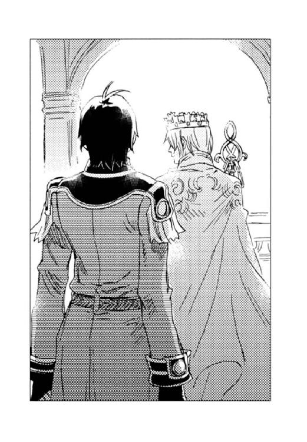
フェルナンドは、空と同じ色の凜々しい目で帝都の民を穏やかに眺め渡した。口元に春風の笑みが浮かぶ。
「大人気だな」
新皇帝の背後で、黒髪の将官が深い紫の瞳を嬉しそうに細めた。屈強な体軀を包む濃紺の軍服は数々の勲章で飾られている。
リフスラシル侯を継ぎ、陸軍中将となったディオンである。
二人は共に二十七歳になっていた。
「早く君も総司令官になってよ」
フェルナンドは振り返ってディオンに笑いかけ、
「ああ、頑張るよ」
ディオンも笑み返す。
フェルナンドが軍に働きかければ、ディオンを総大将にするくらいはわけないのだが、皇帝の口利きで出世したら、他の幕僚の信頼を得られないと、ディオンは自力で総司令官の地位を目指しているのだ。
「クラウド閣下。ベルンハルト殿がお呼びです。そろそろ演奏の御準備をとのことですが」
近衛隊の兵士が後ろの扉から声をかけた。
「げ──」
ディオンはあからさまに嫌そうな顔をした。
これから広間では舞踏会が催される。戴冠祝賀大舞踏会ということで、宮廷楽団に加えて特別にシャマナ・オペラ座の管弦楽団が呼ばれていた。そこでディオンはティンパニを担当することになってしまったのだ。ベルンハルトから「戴冠式後の舞踏会でアレグロ君が演奏してくれなければ、帝国中の会社の株を大暴落させる」という無茶な要請があったからである。
フェルナンドは「これも帝国の民のためだ。頼むよ」とクスクス笑った。
「そもそも、この舞踏会そのものがベルンハルトの陰謀に違いない」
ディオンはマレットを握り、指揮台のベルンハルトを睨む。一層渋みの増した虚無伯爵ベルンハルトは、口元に夢見るような笑みをたたえ、優雅に指揮棒を振る。
王宮の広間に、華麗な大円舞曲が流れた。
何組もの華やかに着飾った淑女と燕尾服の紳士が、管弦楽の調べに乗って軽やかにステップを踏む。
ディオンは、広間で踊る男女の中に、羽根飾りの付いた銀のつば広帽子に、銀のマント、目だけを覆う銀の仮面の怪盗を見つけて、眉をひそめた。彼は花から花へ渡る蝶のように次々とダンスのパートナーを替えている。彼の美学は永遠なのだ。
曲が変わり、ディオンはマレットを置いて管弦楽団から抜けた。広間最奥の玉座では、重いマントと宝冠を取り、くつろいだ様子でフェルナンドが踊る男女を眺めている。ディオンは、赤い絨毯の階段を上り、フェルナンドの隣に立った。その後を追って、アッシュとシュネーも駆け上がって来る。
「演奏から抜けちゃっていいの？」
フェルナンドは真剣に株価を心配しているようだった。
「二曲はお休み」
ディオンは笑って、広間の人々を見渡す。
「あそこで夢幻貴族が踊ってるよ」
フェルナンドが銀ずくめの騎士を指差した。
「ああ、知ってる。相変わらずだよな」
「あんな恰好してても、首相としては敏腕って、ある意味凄いよね」
連邦はこの十年でめざましい経済成長を遂げ、国民の生活は帝国並みに潤っている。また、「可愛いお嬢さんに、俺が刃を向けるわけないだろう」と、帝国に対して友好的な態度を貫いた。彼のおかげで帝国の軍備縮小が叶ったと言っても過言ではない。
ディオンは微かな期待を込めて、広間の人々の中にある人物を探す。しかし、二人の姿は見あたらない。
「中将と大佐は来なかったな」
もうキースは中将ではなく、カイルも大佐ではなかったが、ついそう呼んでしまう。
「ムスベルからは現首相が来ていた。戴冠式の前に少し話したよ。二人とも元気だって」
ムスベルが帝国や連邦から正式に独立国と認められるまでは、キースが代表を務めていたが、現在、ムスベル国は民主制を取り、首相は選挙で選ばれている。しかしまだ政治経済的にも発展途上であるため、キースが首相補佐官という立場で政治を執っていた。
カイルは、ムスベル陸軍総司令官として睨みを利かせている。
二人とも外交の場にはあまり姿を現さない。多忙であることに加え、フェルナンドとディオンとはあまりに親しい間柄であるため、政治的な癒着を疑われるのは望ましくないと考えているのだろう。
「シーグとハーラルも活躍しているみたい。大神官を襲名したそうだよ。民主政治になっても文化や伝統は王国だった時のものを踏襲していくんだって」
「民の心はそう変わるもんじゃないからな」
「首相とは晩餐会で同席するから、また話が聞けるんじゃない」
ディオンは王宮の広間を眺めながら、ムスベルの大地に思いを馳せる。
「砂礫が無毒化されて、十年か──。この間視察に行った時は、小麦畑に芽が出ていた。木々の背丈はまだ低いけど、緑豊かな大地になっていた。川や湖も元通りに造られていたし」
「僕も見に行きたかった」
〈精師〉の国ムスベルは、その技術を駆使して見事な復興を遂げていた。もちろんそれにはキースの並々ならぬ尽力があったからだ。当初、民の心は荒廃し、連邦や帝国に対する敵愾心を払拭することは難しかったと聞く。キースの天才的な頭脳と手腕がなければ、大地が芽吹いても国は成らなかっただろう。
ディオンとフェルナンドは、凍った海を思わせる銀がかった瞳を思い浮かべ、彼と過ごした少年時代を懐かしむ。
「それにしても、中将の生き物恐怖症は治ったのだろうか」
ディオンは足元のアッシュとシュネーを見下ろした。二頭は、周囲の近衛兵をはばかって声には出さなかったが『多分、無理でしょ』と、首を振った。
「二人でお話ばかりしていて──。わたくしを壁の花にするおつもり？」
白いドレスの裾をたくし上げ、アマーリエが赤い絨毯の階段を上って来た。
輝く金髪を高く結い上げ、額には宝石をちりばめたティアラが載っている。袖のない絹のローブに、肘までの長い手袋を着け、ティアラと同じデザインの首飾りが胸元を飾っていた。
フェルナンドとよく似た大きな空色の目が、ディオンを見上げる。
「ダンスって、殿方から誘うものなのよ」
薄く紅を引いた唇がニッコリと笑み、手がディオンに差し出された。
「はいはい、ごめん。俺と踊ってくれませんか？」
ディオンも笑って、彼女の手を取る。
二人は広間へと下りて行った。
緩やかなテンポの円舞曲に合わせて踊るディオンとアマーリエを眺めながら、
「早く結婚を申し込んでくれないかな......」
フェルナンドは呟いた。
アマーリエには山ほどの縁談があったのだが、彼女は全て断り、二十五歳になった今でも独身である。アマーリエは、ディオン以外の男性は目に入らず、ひたすらプロポーズを待っているのだ。
『フェルナンドの戴冠式も無事済んだし、ぼちぼちだと思うけどね』
シュネーはフェルナンドの膝に跳び乗り、小声で言った。
『それより、フェルナンドはどうなの？ アーベルン元帥もシュバンハイム伯爵も嘆いておられましたよ。お后候補は大勢いるのに、肝心の陛下がその気になってくれないと──』
アッシュも笑って囁いた。
「そのうちにね」
今は、大陸の行く末だけに心を砕いていたい。彼と一緒に築いてきた平和をこれからも守るために──。
フェルナンドは、仲むつまじく踊るディオンとアマーリエを見つめ、春風の笑みを浮かべた。
あとがき
節分間近とはいえ、まだまだ寒い日が続きそうですが、皆様いかがお過ごしでしょうか？
一時はどうなることかと思いましたが、無事、「光の精師ディオン」が完結いたしました。よかったです～。
岩崎美奈子先生の格好いいイラストに惹かれてこの本を手に取り、あとがきから御覧になっている方もいらっしゃると思いますが、このシリーズは各巻読み切り全六巻の、頑張ってるのにどこか可笑しい軍人さんたちのお話です。最終巻ということで、これまでの伏線を回収しようとしたら、生き物恐怖症の中将と、強面の犬の旅になってしまいました（笑）。
シリーズ化が決まった時に、六巻で終わろうと思っていたので、これまでの巻もそれを見越して話を進めていたのですが、いざ書きたいことを全部書いてみたら、三百ページ近くになってしまいました。日頃の憂さを忘れ、頭を空っぽにして一気に読める作品を目指してるのに、手に取っただけでズッシリきちゃう本ではダメじゃないですか。というわけで、書くのと同じぐらいの手間をかけて縮めました（パソよ、よく頑張ってくれた←パソコンが瀕死）。
キースのお姉さんの話も、いつかどこかで書きたいと思いつつ、毎回ページが足りず、結局この巻にも入りませんでした。でもこの本に先んじて一月二十八日発売の雑誌「The Beans VOL.12」に載せていただきましたので、よかったらそちらも読んでくださると嬉しいです。
さて振り返ってみれば、ひたすら元気で前向きな少年の物語でしたが、「そんな簡単に事が進むわけないだろ！」と私も思っています。戦後の高度経済成長まっただ中で育った少年二人は、言うこともやることも甘いです。でも、何とか彼らの夢が叶ったのは、戦中派の兄ちゃんやじいちゃんたちが陰でフォローしたからだと、そういうことにしておいてください（汗）。
私自身が楽しい夢を見ていたかったのです。だって現実は本当に厳しいですもの（溜息）。
物語を書き終わって、これまでの本を並べてみました。そして、私が明るい少年たちの夢を見ることができたのは、岩崎美奈子先生のイラストのおかげなのだとあらためて思いました。絵の中のディオンとフェルナンドが「俺たちに挫折は似合わないぜ」と言って（フェルナンドの女装は似合いますが）物語を進めてくれたのです。お忙しい中、毎回すばらしいイラストを本当にありがとうございました。
編集部の皆様、校正者様、印刷所の方々にも、この場を借りてお礼申し上げます。担当様にはいつもいつも多大なる御迷惑をおかけし、申し訳ありませんでした。
そして、最後までお付き合いくださった読者の皆様に、心から感謝いたします。歳を重ねてもドキドキオロオロしながら書いていた村田ですが、皆様のおかげでこの日を迎えることができました。
皆様の御健勝を心よりお祈りいたしております。御愛読ありがとうございました！
村田 栞
カバー・本文イラスト／岩崎美奈子
デザイン／BELL'S
光の精師ディオン
指揮官は明日を夢見る
村田栞
平成26年6月1日 発行
(C) Shiori MURATA 2009
本電子書籍は下記にもとづいて制作しました
角川ビーンズ文庫『光の精師ディオン 指揮官は明日を夢見る』
平成21年2月1日初版発行
発行者 山下直久
発行所 株式会社ＫＡＤＯＫＡＷＡ
〒102-8177 東京都千代田区富士見2-13-3
03-3238-8745（営業）
編集 角川書店
〒102-8078 東京都千代田区富士見1-8-19
03-3238-8506（編集部）
http://www.kadokawa.co.jp/